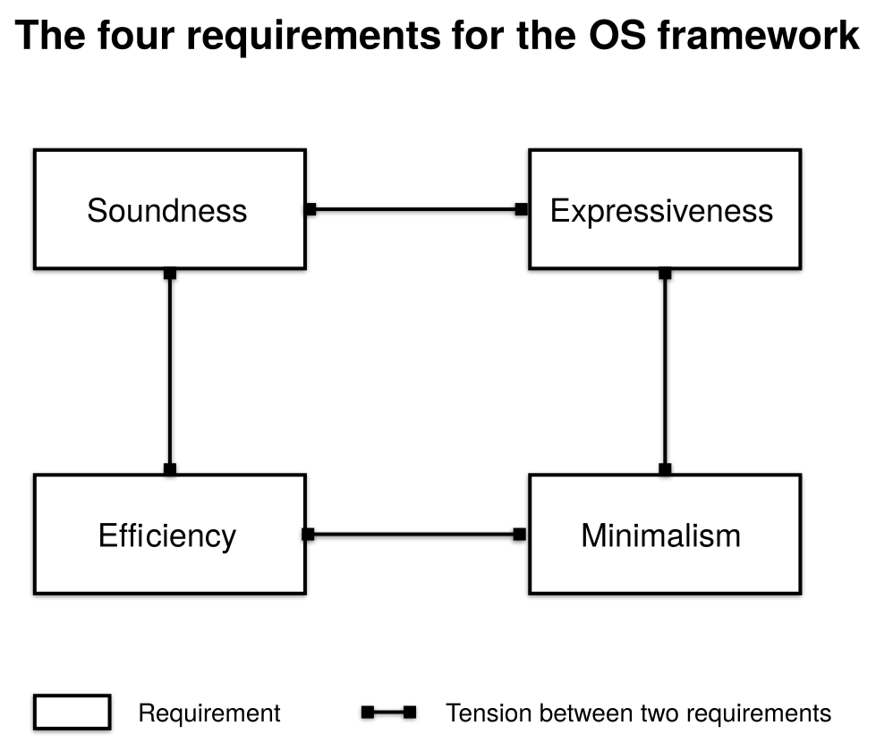

Asterinas 手册
欢迎阅读 Asterinas 的文档，这是一个专注于开发前沿 Rust 操作系统内核的开源项目与社区。
手册结构
手册分为六个独立部分：
Part 1: Asterinas NixOS
Asterinas NixOS 是首个基于 Asterinas 内核构建的发行版。它以 NixOS 为基础，充分利用其强大的配置模型和丰富的包生态系统，同时将 Linux 内核替换为 Asterinas。
Part 2: Asterinas 内核
探索位于 Asterinas 核心的现代操作系统内核。Asterinas 内核旨在充分发挥 Rust 语言的全部潜力，以安全高效的方式实现了 Linux ABI，这意味着它可以无缝替代 Linux，提供更强大的安全性保障。
Part 3: Asterinas OSTD
Asterinas OSTD 为操作系统开发奠定了一个简约、强大且稳固的基础。它类似于 Rust 的std crate，但专为安全的 Rust 操作系统开发需求而设计。Asterinas 内核正是构建于这一 OSTD 之上。
Part 4: Asterinas OSDK
OSDK 是一款命令行工具，它简化了基于 Asterinas OSTD 创建、构建、测试和运行 Rust 操作系统项目的工作流程。它专为操作系统开发者设计，扩展了 Rust 的 Cargo 工具，以更好地满足其特定需求。 OSDK 在 Asterinas 内核的开发中发挥着关键作用。
Part 5: 为 Asterinas 做出贡献
Asterinas 项目尚处于早期阶段，欢迎您的贡献！本部分将指导您如何成为 Asterinas 项目不可或缺的一部分。
Part 6: 征求意见稿 (RFCs)
Asterinas 的重大决策均通过透明的 RFC 流程做出。本部分将介绍 RFC 流程并存档所有已批准的 RFC。
许可协议
Asterinas 的源代码和文档主要使用 Mozilla 公共许可证(MPL), Version 2.0。部分组件采用更宽松的许可证，详情请见 此处。
我们选择弱版权保护的 MPL 许可证体现了一种战略平衡：
-
对开源自由的承诺：我们认为操作系统内核是公共资产，应造福全人类。MPL 协议确保对受 MPL 保护的文件所做的任何修改都保持开源，这与我们的理念一致。此外，我们不要求贡献者签署贡献者许可协议（CLA），从而保护贡献者的权利，并防止他们的贡献被闭源化 。。
-
兼容专有模块：认识到大型企业也对开源做出重要贡献的不断演变格局，我们兼顾企业对专有内核模块的业务需求。与GPL不同，MPL允许将受 MPL 保护的文件与专有代码链接。
总之，我们认为 MPL 是围绕 Asterinas 培育一个充满活力、强大且包容的开源社区的最佳选择。
Asterinas NixOS
Asterinas NixOS 是 Asterinas 的首个发行版。我们选择 NixOS 作为基础操作系统，因其具有无与伦比的可定制性和丰富的软件包生态系统。Asterinas NixOS 旨在保持与原生 NixOS 相同的外观和使用体验，区别在于它用 Asterinas 内核取代了 Linux。有关选择 NixOS 的更多理由，请参阅 RFC。
免责声明：Asterinas 是一个独立的、由社区主导的项目。Asterinas NixOS 并非官方 NixOS 项目，也与 NixOS 基金会无任何关联。不暗示任何赞助或认可。
Asterinas NixOS 尚未准备好用于生产环境。我们提供 Asterinas NixOS 是为了让 Asterinas 内核更易于使用，让早期采用者和爱好者能够试用并提供反馈。此外，Asterinas 开发者将此发行版作为关键的开发工具，以促进在 Asterinas 内核上启用和测试更多实际应用。
开始使用
终端用户
以下说明描述了如何使用 Asterinas NixOS 安装程序 ISO 在虚拟机中安装 Asterinas NixOS。
-
启动一个 x86-64 Ubuntu容器：
docker run -it --privileged --network=host ubuntu:latest bash -
在容器中安装 QEMU：
apt update apt install -y qemu-system-x86 qemu-utils -
从 GitHub Releases下载最新的 Asterinas NixOS 安装程序 ISO。
-
创建一个文件，该文件将用作安装 Asterinas NixOS 的目标磁盘：
# 磁盘容量为10GB；根据您的需要进行调整 dd if=/dev/zero of=aster_nixos_disk.img bs=1G count=10 -
使用两个驱动器启动x86-64 虚拟机：一个是安装程序 CD-ROM，另一个是目标光盘：
export INSTALLER_ISO=/path/to/your/downloaded/installer.iso qemu-system-x86_64 \ -cpu host -m 8G -enable-kvm \ -drive file="$INSTALLER_ISO",media=cdrom -boot d \ -drive if=virtio,format=raw,file=aster_nixos_disk.img \ -chardev stdio,id=mux,mux=on,logfile=qemu.log \ -device virtio-serial-pci -device virtconsole,chardev=mux \ -serial chardev:mux -monitor chardev:mux \ -nographic虚拟机启动后，您现在可以访问安装环境。
-
编辑用户主目录中的
configuration.nix文件以自定义要安装的 NixOS 系统：vim configuration.nixconfiguration.nix文件的完整语法和使用指南请参阅 NixOS 手册 。 如果你不熟悉NixOS，可以跳过这一步。Asterinas NixOS 目前尚未支持
configuration.nix中的所有设置组合。已测试过的设置组合记录在后续章节中。 -
开始安装：
install_aster_nixos.sh --config configuration.nix --disk /dev/vda --force-format-disk安装过程涉及下载包，可能需要大约30分钟才能完成，这取决于您的网络速度。
-
安装完成后，即可关闭虚拟机：
poweroff现在 Asterinas NixOS 已安装在
aster_nixos_disk.img中。 -
启动虚拟机引导新安装的 Asterinas NixOS：
qemu-system-x86_64 \ -cpu host -m 8G -enable-kvm \ -bios /usr/share/qemu/OVMF.fd \ -drive if=none,format=raw,id=x0,file=aster_nixos_disk.img \ -device virtio-blk-pci,drive=x0,disable-legacy=on,disable-modern=off \ -chardev stdio,id=mux,mux=on,logfile=qemu.log \ -device virtio-serial-pci -device virtconsole,chardev=mux \ -serial chardev:mux -monitor chardev:mux \ -device virtio-net-pci,netdev=net0,disable-legacy=on,disable-modern=off \ -netdev user,id=net0 \ -device isa-debug-exit,iobase=0xf4,iosize=0x04 \ -nographic -display vnc=127.0.0.1:21如果在
configuration.nix文件中启用了桌面环境，您可以使用 VNC 客户端查看图形界面。
内核开发者
-
Follow Steps 1 and 2 in the “Getting started” section of the Asterinas Kernel to set up the development environment.
-
在 Docker 容器内，使用以下命令生成已安装 Asterinas NixOS 的磁盘镜像：
make nixos或者使用以下命令：
make iso && make run_iso这两种方法的区别在于，第一种是将 NixOS 完全安装到容器内部的磁盘镜像中，而第二种是通过运行虚拟机来模拟手动 ISO 安装步骤（见上一节）。两种方法最终都会生成一个包含 Asterinas NixOS 安装的磁盘镜像。
-
启动虚拟机运行已安装的 Asterinas NixOS：
make run_nixos
热门应用程序
Nix 软件包集合 包含超过 12 万个软件包。其中许多可能已经可以在 Asterinas NixOS 上开箱即用，但测试每个软件包并记录其支持状态是不切实际的。相反，我们将流行的应用程序按类别分组，并记录我们已验证可正常运行的软件包。
Categories
The categorization is designed to scale to hundreds of applications while serving both server and desktop use cases. It follows a two-level hierarchy (Category > Sub-category) with the following top-level categories:
| Category | Description | Packages |
|---|---|---|
| System Core | Shells, init systems, system monitoring, and essential utilities | Bash, fish, Zsh, BusyBox, systemd, fastfetch, htop, lsof, ncdu, procps, coreutils, diffutils, findutils, grep, hostname, less, man-pages, Texinfo, util-linux, which |
| Nix and NixOS Tools | Nix package management and NixOS system management tools | Nix |
| Containerization and Virtualization | Containerization and virtualization tools | Podman, Skopeo, QEMU |
| Networking | Network utilities, DNS, VPN, and firewalls | curl, LFTP, Netcat, rclone, rsync, socat, Wget, LDNS, whois |
| Web Servers & Proxies | Web servers and reverse proxies | Apache HTTP Server, Caddy, NGINX, OpenResty |
| Databases & Middleware | Relational databases, NoSQL, search engines, and message queues | SQLite, etcd, Redis, Valkey, InfluxDB |
| Development Tools | Language runtimes, build tools, editors, and debugging tools | Clang, GCC, Go, Lua, Node.js, Octave, OpenJDK, Perl, PHP, Python 3, Ruby, Rust, Git, Cargo, CMake, Make, Meson, Ninja, GDB, Emacs, nano, Neovim, Vim, Hugo, direnv, ShellCheck, jq, yq |
| CI/CD & DevOps | CI/CD runners and infrastructure automation | just, Task, GoReleaser |
| Monitoring & Observability | Metrics, logging, and tracing tools | Prometheus |
| Desktop Environments & Display | Desktop environments, window managers, and display servers | Xfce, galculator, Mousepad, MuPDF, Fairy-Max, Five or More, LBreakout2, GNOME Chess, GNOME Mines, GNOME Sudoku, Tali, XBoard, XGalaga |
| Web Browsers | Web browsers | Firefox, Links2, w3m |
| Office & Productivity | Office suites, document viewers, and note-taking apps | MuPDF, pandoc |
| Multimedia | Video/audio players, graphics tools, and streaming software | SoX, ImageMagick, FFmpeg |
| Communication | Email clients, instant messaging, and video conferencing | Irssi, WeeChat |
| File Management & Terminal | File managers, terminal emulators, archives, and CLI utilities | bzip2, gzip, p7zip, tar, XZ Utils, Zip, Screen, file, bat, gawk, sd, sed, eza, fd, fzf, ripgrep, The Silver Searcher, tree, age, crunch, GnuPG, John the Ripper, restic, wipe |
| AI & Machine Learning | Deep learning frameworks, inference engines, and AI coding agents | PyTorch, TensorFlow, Ollama, Codex |
System Core
This category covers essential system components: shells, init systems, system monitoring tools, and core utilities.
Shells
Bash
Bash is the GNU Project’s shell and command language, enabled by default in Asterinas NixOS.
安装
environment.systemPackages = [ pkgs.bash ];
已验证的使用情况
# Execute a script
bash script.sh
fish
fish is a user-friendly shell with autosuggestions and web-based configuration.
安装
environment.systemPackages = [ pkgs.fish ];
已验证的使用情况
# Execute a script
fish script.sh
Zsh
Zsh is a powerful shell with extensive customization options.
安装
environment.systemPackages = [ pkgs.zsh ];
已验证的使用情况
# Execute a script
zsh script.sh
Init & Service Management
BusyBox
BusyBox provides many common UNIX utilities in a single small executable, enabled by default in initramfs of Asterinas NixOS.
安装
environment.systemPackages = [ pkgs.busybox ];
已验证的使用情况
# List all applets provided by BusyBox
busybox
# Run a BusyBox applet explicitly
busybox ls -al /
# Show help for a specific applet
busybox cat --help
systemd
systemd is a software suite for system and service management, enabled by default in rootfs of Asterinas NixOS.
安装
# Asterinas uses a patched `systemd` package.
systemd.package = pkgs.aster_systemd;
已验证的使用情况
# Show overall system status
systemctl --no-pager status
# List running services
systemctl --no-pager list-units --type=service --state=running
System Monitoring
fastfetch
fastfetch is a system information tool similar to neofetch.
安装
environment.systemPackages = [ pkgs.fastfetch ];
已验证的使用情况
# Show system information with default configuration
fastfetch
# Save current output to a file
fastfetch > fastfetch-output.txt
htop
htop is an interactive process viewer.
安装
environment.systemPackages = [ pkgs.htop ];
已验证的使用情况
# Start htop
htop
# Inside htop:
# Up/Down - Select process
# Left/Right - Move between columns or UI sections
# h or F1 - Help
# q - Quit
lsof
lsof lists open files and the processes that opened them.
安装
environment.systemPackages = [ pkgs.lsof ];
已验证的使用情况
# Show all files opened by a process with a given PID
lsof -p 1
# Show all files opened by processes with a given command name
lsof -c bash
# Show all files opened by a specific user
lsof -u root
# Show files opened under a directory
lsof +D /dev
ncdu
ncdu is a disk usage analyzer with an interactive TUI.
安装
environment.systemPackages = [ pkgs.ncdu ];
已验证的使用情况
# Analyze a specific directory
ncdu /var/log
# Save scan results to a file
ncdu -o result.ncdu /var/log
procps
procps provides system utilities for process management and system information.
安装
environment.systemPackages = [ pkgs.procps ];
已验证的使用情况
# Display memory in human readable format
free -h
# Kill process by PID
kill 1234
# Display processes with custom format
ps -eo pid,ppid,cmd,pcpu,pmem
# Find processes with full command line
pgrep -f "python script.py"
# Kill processes by pattern
pkill firefox
# Display memory map of a process
pmap 1234
# Monitor processes in real-time
top
# Display system uptime
uptime
Essential Tooling
coreutils
coreutils includes basic file, shell and text manipulation utilities.
安装
environment.systemPackages = [ pkgs.coreutils ];
已验证的使用情况
# BLAKE2 checksum
b2sum file.txt > checksums.b2
b2sum --check checksums.b2
# Base64 encode/decode
base64 file.txt > encoded_file.b64
base64 -d encoded_file.b64
# Strip directory and suffix from filenames
basename /path/to/file.txt
# Concatenate and display files
cat file1.txt file2.txt
# Change file permissions
chmod 755 script.sh
chmod +x script.sh
chmod -R 755 directory/
# Run command or interactive shell with special root directory
chroot /newroot /bin/bash
# Copy files and directories
cp file1.txt file2.txt
cp -r dir1 dir2
# Split a file into sections determined by context lines
csplit file.txt '/pattern/' '{*}'
# Remove sections from each line of files
cut -d':' -f1 /etc/passwd
# Convert and copy a file
dd if=input.txt of=output.txt
dd if=/dev/zero of=disk.img bs=1M count=100
# Strip last component from file name
dirname /path/to/file.txt
# Display a line of text
echo "Hello World"
# Evaluate expressions
expr 2 + 3
expr 10 \* 5 # Escape * for shell
# Output the first part of files
head -n 20 file.txt
# Make links between files
ln -s target_file symlink
ln target_file hardlink
# Make directories
mkdir -p path/to/nested/dir
# Move (rename) files
mv old.txt new.txt
mv file.txt /destination/
# Dump files in octal and other formats
od file.txt
od -c file.txt # Character format
od -x file.txt # Hexadecimal format
# Merge lines of files
paste -d ',' file1.txt file2.txt # Use comma as delimiter
# Print value of a symbolic link or canonical file name
readlink symlink
# Print the resolved path
realpath file.txt
# Remove files or directories
rm file.txt
rm -rf directory/
# Print a sequence of numbers
seq 0 2 10 # Start, increment, end
# SHA2 checksums
sha256sum file.txt > checksums.sha256
sha256sum --check checksums.sha256
# Display file or file system status
stat -c "%U %G" file.txt # Custom format
# Flush file system buffers
sync
# Output the last part of files
tail -n 20 file.txt
# Change file timestamps
touch -t 202601011200 file.txt
# Print newline, word, and byte counts for each file
wc -l file.txt # Lines only
wc -w file.txt # Words only
wc -c file.txt # Bytes only
diffutils
diffutils compares files line by line.
安装
environment.systemPackages = [ pkgs.diffutils ];
已验证的使用情况
# diff - Compare files line by line
diff -u file1.txt file2.txt
# Compare three files line by line
diff3 file1.txt file2.txt file3.txt
diff3 -m file1.txt file2.txt file3.txt
diff3 -E file1.txt file2.txt file3.txt
findutils
findutils provides the basic directory searching utilities.
安装
environment.systemPackages = [ pkgs.findutils ];
已验证的使用情况
# Search for files in a directory hierarchy
find /path -name "*.txt" # Find by name
find /path -iname "*.TXT" # Case insensitive
find /path -type f # Find files only
find /path -type d # Find directories only
find /path -type l # Find symbolic links only
# Execute commands on found files
find /path -name "*.tmp" -delete
find /path -name "*.log" -exec rm {} \;
find /path -name "*.bak" -exec cp {} {}.bak \;
# Build and execute command lines from standard input
find /path -name "*.txt" | xargs rm
find /path -name "*.log" | xargs -I {} cp {} {}.bak
grep
grep searches for patterns in text.
安装
environment.systemPackages = [ pkgs.gnugrep ];
已验证的使用情况
# Search for a pattern in a file
grep "pattern" file.txt
# Search recursively in a directory
grep -r "pattern" src/
# Case-insensitive search
grep -i "pattern" file.txt
# Show line numbers
grep -n "pattern" file.txt
# Show only the matching part of the line
grep -o "pattern" file.txt
# Invert match: show lines that do NOT match
grep -v "pattern" file.txt
# Use extended regular expressions
grep -E "foo|bar" file.txt
hostname
hostname shows or sets the system host name.
安装
environment.systemPackages = [ pkgs.hostname ];
已验证的使用情况
# Show current hostname
hostname
# Set hostname
hostname test
# Show NIS/YP domainname
hostname -y
# Set NIS domainname
domainname test
# Show ip address for the hostname
hostname -i
less
less is a terminal pager program for viewing text files.
安装
environment.systemPackages = [ pkgs.less ];
已验证的使用情况
# Opposite of more (better file viewer)
less file.txt
# Navigation commands (while in less):
# j or Enter - Move down one line
# k - Move up one line
# f or Space - Forward one window
# b - Backward one window
# d - Forward half window
# u - Backward half window
man-pages
man-pages provides the Linux manual pages.
安装
environment.systemPackages = [ pkgs.man-pages ];
已验证的使用情况
# Display manual page in specific section
man 1 ls # User commands
man 2 read # System calls
man 3 printf # Library functions
man 4 tty # Special files
man 5 fstab # File formats
man 6 banner # Games
man 7 regex # Miscellaneous
man 8 mount # System administration
# Display manual page with pager
man -P less ls
# Display manual page without pager
man -P cat ls
Texinfo
Texinfo is the official GNU documentation system.
安装
environment.systemPackages = [ pkgs.texinfoInteractive ];
已验证的使用情况
# Display info documentation for a topic
info bash
# Navigate within info viewer:
# Space - Scroll forward
# Backspace - Scroll backward
# n - Next node
# p - Previous node
# u - Up node
# l - Last visited node
# g - Go to specific node
# s - Search forward
# q - Quit
util-linux
util-linux provides a set of system utilities for any Linux system.
安装
environment.systemPackages = [ pkgs.util-linux ];
已验证的使用情况
# Display system information
uname -a
# Display disk space usage
df -h
# Mount a file system
mount -t ext2 /dev/vdb /ext2
# Unmount a file system
umount /ext2
# Find mounted file systems
findmnt
# Display date in custom format
date +"%Y-%m-%d %H:%M:%S"
# Display calendar for specific month
cal 01 2026
# Display user and group information
id
# Display login history
last
# Display file in hexadecimal
hexdump -C file.bin
# Display where program is located
whereis ls
which
which shows the full path of (shell) commands
安装
environment.systemPackages = [ pkgs.which ];
已验证的使用情况
# Locate a command
which ls
Nix and NixOS Tools
This category covers Nix package management tools and NixOS system management tools.
软件包管理
Nix
NixOS 提供了一套用于构建、安装和管理软件包的 tools。
已验证的使用情况
nix-build
nix-build 构建 Nix 衍生版本，并将输出存储在 Nix 存储库中。它是构建可复现软件的首选方法。
# Step 1: Create a clean workspace
rm -rf /tmp/nix-hello-c && mkdir -p /tmp/nix-hello-c && cd /tmp/nix-hello-c
# Step 2: Write a C program
cat > hello.c <<'EOF'
#include <stdio.h>
int main(void) {
puts("Hello, World!");
return 0;
}
EOF
# Step 3: Write a default.nix
cat > default.nix <<'EOF'
{ pkgs ? import <nixpkgs> {} }:
pkgs.stdenv.mkDerivation {
pname = "hello-c";
version = "0.1.0";
src = ./.;
dontConfigure = true;
buildPhase = ''
cc hello.c -o hello
'';
installPhase = ''
mkdir -p $out/bin
install -m755 hello $out/bin/hello
'';
}
EOF
# Step 4: Build and run
nix-build
./result/bin/hello
nix-env
nix-env 用于安装或删除用户配置文件中的各个软件包。
# Install the `hello` package
nix-env -iA nixos.hello
# Remove the `hello` package
nix-env -e hello
nix-shell
nix-shell 会创建一个包含指定依赖项的临时开发环境。这对于在不修改系统环境的情况下测试软件非常有用。
# Enter a shell with the `hello` package available
nix-shell -p hello
NixOS System Management
nixos-rebuild
nixos-rebuild 以声明式的方式管理整个系统配置。它会应用 configuration.nix 中定义的更改，是系统级软件包安装的推荐方法。
已验证的使用情况
# Edit the system configuration file
vim /etc/nixos/configuration.nix
# 应用配置更改并重建系统而无需重新引导
nixos-rebuild test
Containerization and Virtualization
This category covers container runtimes, container image tools, and other virtualization-related tools.
Container Runtimes
Podman
Podman 是一个现代化的、无守护进程的容器引擎，它提供了一个与 Docker 兼容的命令行界面，使熟悉 Docker 的用户能够轻松过渡。
安装
要安装 Podman，请添加以下行到 configuration.nix ：
virtualisation.podman.enable = true;
已验证的使用情况
podman run
podman run在新容器中运行命令。
# Start a container, execute a command, and then exit
podman run --name=c1 docker.io/library/alpine ls /etc
# Start a container and attach to an interactive shell
podman run -it docker.io/library/alpine
podman image
podman image 管理本地镜像。
# List downloaded images
podman image ls
podman ps
podman ps列出容器。
# Show the status of all containers (including exited ones)
podman ps -a
podman rm
podman rm删除一个或多个容器。
# Remove a container named foo
podman rm foo
Container Image Tools
Skopeo
Skopeo inspects and copies container images without a daemon.
安装
environment.systemPackages = [ pkgs.skopeo ];
已验证的使用情况
# Inspect a remote image
skopeo inspect docker://docker.io/library/alpine:latest
# List all tags for a repository
skopeo list-tags docker://docker.io/library/alpine
Virtualization
QEMU
QEMU is the most widely used open-source machine emulator and virtualizer. It supports full system emulation as well as user-mode binary translation.
Asterinas does not yet support hardware-assisted virtualization (KVM), therefore QEMU runs exclusively with TCG (Tiny Code Generator / software emulation) on Asterinas NixOS.
安装
environment.systemPackages = with pkgs; [ qemu_kvm ];
environment.variables = {
LINUX_BZIMAGE = "${pkgs.linuxPackages.kernel}/bzImage";
OVMF_PATH = "${pkgs.OVMF.fd}/FV/OVMF.fd";
};
环境变量
The following environment variables are automatically provided when building the NixOS test suite:
LINUX_BZIMAGE: Path to the standard Linux kernel bzImageOVMF_PATH: Path to the OVMF (UEFI) firmware
You can enable them by building with:
make nixos NIXOS_TEST_SUITE=containerization-and-virtualization
已验证的使用情况
Display QEMU version
qemu-system-$(uname -m) --version
Run Linux kernel with TCG
qemu-system-$(uname -m) \
-accel tcg \
-kernel $LINUX_BZIMAGE \
-initrd /run/current-system/initrd \
-nographic -no-reboot \
-append 'console=ttyS0 panic=-1 rdinit=/bin/init'
Run Asterinas kernel with TCG
qemu-system-$(uname -m) \
-accel tcg \
-cpu Icelake-Server \
-machine q35 -m 1G \
-bios $OVMF_PATH \
-kernel /run/current-system/kernel \
-initrd /run/current-system/initrd \
-device isa-debug-exit,iobase=0xf4,iosize=0x04 \
-nographic -no-reboot \
-append 'console=ttyS0 panic=-1 init=/bin/init'
Note: Running the Asterinas kernel requires the
linux/multibootboot protocol (multiboot2 is not supported). Compile Asterinas with:make nixos BOOT_PROTOCOL=linux NIXOS_TEST_SUITE=containerization-and-virtualization
Networking
This category covers network utilities, DNS/DHCP servers, VPN tools, and firewalls.
Network Utilities
curl
curl transfers data with URLs.
安装
environment.systemPackages = [ pkgs.curl ];
已验证的使用情况
# Basic GET request
curl https://api.github.com
# Download with specific filename
curl -o newname.txt https://example.com/file.txt
LFTP
LFTP is a sophisticated file transfer program.
安装
environment.systemPackages = [ pkgs.lftp ];
已验证的使用情况
# Connect to FTP server
lftp ftp://ftp.sjtu.edu.cn/ubuntu-cd/
# Connect to HTTP server
lftp http://ftp.sjtu.edu.cn/ubuntu-cd/
# Download single file
lftp -c "open ftp.sjtu.edu.cn; cd /ubuntu-cd; get robots.txt"
Netcat
Netcat is a networking utility for reading from and writing to network connections.
安装
environment.systemPackages = [ pkgs.netcat ];
已验证的使用情况
# Basic TCP connection
nc hostname port
# Listen on specific port
nc -l 10.0.2.15 8080
# Send file over network
nc hostname port < file.txt
# Receive file over network
nc -l port > received_file.txt
# Zero-I/O mode (scanning)
nc -z hostname port
rclone
rclone syncs files to and from cloud storage providers.
安装
environment.systemPackages = [ pkgs.rclone ];
已验证的使用情况
# Copy files
rclone copy /tmp/src /tmp/dst
# Sync files
rclone sync /tmp/src /tmp/dst
# Check differences without transferring
rclone check /tmp/src /tmp/dst
# Operations on the storage
rclone size /tmp/src
rclone lsl /tmp/src
rclone lsd /tmp/src
rclone mkdir /tmp/src
rsync
rsync is a fast and versatile file synchronization tool.
安装
environment.systemPackages = [ pkgs.rsync ];
已验证的使用情况
# Sync local directories
rsync -av source/ destination/
# Delete files not in source
rsync -av --delete source/ destination/
# Show progress during transfer
rsync -av --progress source/ destination/
# Exclude specific files/patterns
rsync -av --exclude '*.tmp' source/ destination/
# Include only specific files
rsync -av --include '*.txt' --exclude '*' source/ destination/
socat
socat is a multipurpose relay for bidirectional data transfer.
安装
environment.systemPackages = [ pkgs.socat ];
已验证的使用情况
# Basic TCP connection
socat TCP:hostname:port -
# Listen on TCP port
socat TCP-LISTEN:8080,bind=10.0.2.15,fork -
# Echo server
socat TCP-LISTEN:6379,bind=10.0.2.15,reuseaddr,fork EXEC:cat
# HTTP server (simple)
socat TCP-LISTEN:8080,bind=10.0.2.15,crlf,reuseaddr,fork SYSTEM:"echo 'HTTP/1.0 200 OK'; echo; echo 'Hello World'"
Wget
Wget downloads files from the web.
安装
environment.systemPackages = [ pkgs.wget ];
已验证的使用情况
# Download single file
wget https://example.com/file.zip
# Download with specific filename
wget -O newname.txt https://example.com/file.txt
DNS & DHCP
LDNS
LDNS is a library for DNS programming with C.
安装
environment.systemPackages = [ pkgs.ldns ];
已验证的使用情况
# Basic DNS lookup
drill google.com
# Query specific record type
drill google.com A # IPv4 address
drill google.com AAAA # IPv6 address
drill google.com MX # Mail exchange
drill google.com NS # Name servers
drill google.com TXT # Text records
drill google.com CNAME # Canonical name
# Reverse DNS lookup
drill -x 8.8.8.8
whois
whois queries domain registration information.
安装
environment.systemPackages = [ pkgs.whois ];
已验证的使用情况
# Basic whois lookup
whois google.com
# Query specific whois server
whois -h whois.verisign-grs.com google.com
# Query IP address
whois 8.8.8.8
Web Servers & Proxies
This category covers web servers and reverse proxies/load balancers.
Web Servers
Apache HTTP Server
Apache HTTP Server is a widely-used web server software.
安装
environment.systemPackages = [ pkgs.apacheHttpd ];
已验证的使用情况
# Start server with a configuration file
httpd -f /tmp/httpd.conf
Caddy
Caddy is a modern web server with automatic HTTPS.
安装
environment.systemPackages = [ pkgs.caddy ];
已验证的使用情况
# Start a file server
caddy file-server --listen 10.0.2.15:8002
NGINX
NGINX is a high-performance web server, reverse proxy, and load balancer.
安装
environment.systemPackages = [ pkgs.nginx ];
已验证的使用情况
# Start server with a configuration file
nginx -c /tmp/nginx.conf
OpenResty
OpenResty is an Nginx-based web platform with LuaJIT support.
安装
environment.systemPackages = [ pkgs.openresty ];
已验证的使用情况
# Start OpenResty with a custom prefix and config
openresty -p /tmp/openresty -c /tmp/openresty.conf
Databases & Middleware
This category covers relational databases, NoSQL stores, search engines, and message queues.
Relational Databases
SQLite
SQLite is a C-language library that implements a small, fast, self-contained SQL database engine.
安装
environment.systemPackages = [ pkgs.sqlite ];
已验证的使用情况
# Create new SQLite database and open it
sqlite3 database.db
# Execute SQL command directly
sqlite3 database.db "CREATE TABLE users (id INTEGER PRIMARY KEY, name TEXT);"
# Insert data
sqlite3 database.db "INSERT INTO users (name) VALUES ('Alice');"
# Query data
sqlite3 database.db "SELECT * FROM users;"
NoSQL & Key-Value Stores
etcd
etcd is a distributed key-value store that provides a reliable way to store data that needs to be accessed by a distributed system.
安装
environment.systemPackages = [ pkgs.etcd ];
已验证的使用情况
# Start etcd with specific listen addresses
etcd --listen-peer-urls=http://10.0.2.15:8081 --listen-client-urls=http://10.0.2.15:8080 --advertise-client-urls=http://10.0.2.15:8080
# Put key-value pair
etcdctl --endpoints=localhost:8080 put key1 value1
# Get value by key
etcdctl --endpoints=localhost:8080 get key1
# Delete key
etcdctl --endpoints=localhost:8080 del key1
Redis
Redis is an in-memory data structure store used as a database, cache, and message broker.
安装
environment.systemPackages = [ pkgs.redis ];
已验证的使用情况
# Start Redis server with specific configuration
redis-server --bind 10.0.2.15 --port 6379 --protected-mode no --daemonize yes
# Connect to Redis server on specific host and port
redis-cli -h hostname -p 6379
# Set key-value pair
redis-cli SET mykey "Hello World"
# Get value by key
redis-cli GET mykey
# Delete key
redis-cli DEL mykey
Valkey
Valkey is a high-performance key-value datastore, forked from Redis.
安装
environment.systemPackages = [ pkgs.valkey ];
已验证的使用情况
# Start Valkey server with specific configuration
valkey-server --bind 10.0.2.15 --port 6379 --protected-mode no --daemonize yes
# Connect to Valkey server on specific host and port
valkey-cli -h hostname -p 6379
# Set key-value pair
valkey-cli set mykey "Hello World"
# Get value by key
valkey-cli get mykey
# Delete key
valkey-cli del mykey
Time Series Databases
InfluxDB
InfluxDB is a time series database designed for high write and query loads.
安装
environment.systemPackages = [ pkgs.influxdb ];
已验证的使用情况
# Start with specific configuration file
influxd -config /etc/influxdb/influxdb.conf
# Connect to remote InfluxDB server
influx -host hostname -port 8086
# Create database
influx -execute "CREATE DATABASE mydb"
# Use database
influx -execute "USE mydb"
# Write data (InfluxDB line protocol)
influx -execute "INSERT cpu,host=server1 value=0.64"
influx -execute "INSERT memory,host=server1 used=80,total=100"
# Query data
influx -execute "SELECT * FROM cpu"
influx -execute "SELECT * FROM memory WHERE host='server1'"
Development Tools
This category covers programming language runtimes, version control, build tools, editors, and debugging utilities.
Programming Language Runtimes
Clang
Clang is a C language family frontend for the LLVM compiler.
安装
environment.systemPackages = [ pkgs.clang ];
已验证的使用情况
# Generate LLVM IR instead of native code
clang -S -emit-llvm hello.c -o hello.ll
# Show included headers
clang -H -c hello.c -o /dev/null
# Compile with optimization
clang -O2 hello.c -o hello
GCC
GCC is the GNU Compiler Collection.
安装
environment.systemPackages = [ pkgs.gcc ];
已验证的使用情况
# Create object file only
gcc -c source.c
# Compile with output name
gcc -o program source.c
# Compile with debug information
gcc -g source.c -o program
# Link object files
gcc file1.o file2.o -o program
Go
Go is an open source programming language designed for simplicity and reliability.
安装
environment.systemPackages = [ pkgs.go ];
已验证的使用情况
# Initialize new Go module
go mod init module-name
# Build Go program
go build main.go
# Run Go program
go run main.go
# Format source
go fmt main.go
# Clean build artifacts
go clean
Lua
Lua is a powerful, efficient, lightweight, embeddable scripting language.
安装
environment.systemPackages = [ pkgs.lua ];
已验证的使用情况
# Execute Lua script
lua script.lua
# Run Lua code directly
lua -e "print('Hello World')"
Node.js
Node.js is a JavaScript runtime built on Chrome’s V8 engine.
安装
environment.systemPackages = [ pkgs.nodejs ];
已验证的使用情况
# Run Node.js script
node script.js
# Run Node.js code directly
node -e "console.log('Hello World')"
Octave
GNU Octave is a high-level language for numerical computations.
安装
environment.systemPackages = [ pkgs.octave ];
已验证的使用情况
# Execute Octave script
octave script.m
# Run Octave code directly
octave --eval "disp('Hello World')"
# Matrix operations
octave --eval "[1 2; 3 4] * [5; 6]"
# Statistical calculations
octave --eval "mean([1 2 3 4 5])"
OpenJDK
OpenJDK is a free and open-source implementation of the Java Platform.
安装
environment.systemPackages = [ pkgs.openjdk ];
已验证的使用情况
# Compile Java source file
javac HelloWorld.java
# Run Java program
java HelloWorld
Perl
Perl is a highly capable, feature-rich programming language.
安装
environment.systemPackages = [ pkgs.perl ];
已验证的使用情况
# Execute Perl script
perl script.pl
# Run Perl code directly
perl -e 'print "Hello World"'
PHP
PHP is a popular general-purpose scripting language for web development.
安装
environment.systemPackages = [ pkgs.php ];
已验证的使用情况
# Execute PHP script
php script.php
# Run PHP code directly
php -r "echo 'Hello World';"
Python 3
Python is a high-level programming language.
安装
environment.systemPackages = [ pkgs.python3 ];
已验证的使用情况
# Execute Python script
python3 script.py
# Run Python code directly
python3 -c "print('Hello World')"
Ruby
Ruby is a dynamic, open source programming language.
安装
environment.systemPackages = [ pkgs.ruby ];
已验证的使用情况
# Execute Ruby script
ruby script.rb
# Run Ruby code directly
ruby -e "puts 'Hello World'"
Rust
Rust is a language empowering everyone to build reliable and efficient software.
安装
environment.systemPackages = [ pkgs.rustc ];
已验证的使用情况
# Compile Rust source code
rustc hello_world.rs
Version Control
Git
Git is a distributed version control system.
安装
environment.systemPackages = [ pkgs.git ];
已验证的使用情况
# Clone existing repository
git clone https://github.com/user/repo.git
# Check repository status
git status
# View commit history
git log
# Create and switch to new branch
git checkout -b new-feature
# View differences
git diff
# Add files to staging area
git add file.txt
# Commit changes
git commit -m "Commit message"
# Push changes to remote
git push origin main
Build Tools
Cargo
Cargo is the Rust package manager and build system.
安装
environment.systemPackages = [ pkgs.cargo ];
已验证的使用情况
# Create new Rust project
cargo new my_project
# Fast compilation check
cargo check
# Build project
cargo build
# Run project
cargo run
# Test project
cargo test
CMake
CMake is a cross-platform build system generator.
安装
environment.systemPackages = [ pkgs.cmake ];
已验证的使用情况
# Generate build files
cmake .
# Build project
cmake --build .
# Clean build
cmake --build . --target clean
Make
Make automates build processes.
安装
environment.systemPackages = [ pkgs.gnumake ];
已验证的使用情况
# Run make with specific target
make target_name
# Run make with specific Makefile
make -f Makefile.custom
Meson
Meson is a fast and user-friendly build system.
安装
environment.systemPackages = with pkgs; [
(python3.withPackages (p: [ p.meson ]))
meson
ninja
];
已验证的使用情况
# Initialize project
meson setup builddir
# Build project
meson compile -C builddir
# Run output from build directory
./builddir/hello
Ninja
Ninja is a small, fast build system focused on speed.
安装
environment.systemPackages = [ pkgs.ninja ];
已验证的使用情况
# Build in an existing build directory
ninja -C build
# List available targets
ninja -C build -t targets
Debugging Tools
GDB
GDB, the GNU Project debugger, helps developers debug programs by inspecting variables, controlling execution, and analyzing runtime behavior.
安装
environment.systemPackages = [ pkgs.gdb ];
已验证的使用情况
The following sample program is used for the verified GDB command sequence:
// SPDX-License-Identifier: MPL-2.0
#include <stdio.h>
#include <stdlib.h>
__attribute__((noinline)) void hello_world(int x, int *heap_value)
{
printf("Hello, World %d!\n", x);
fflush(stdout);
}
int main(void)
{
int *heap_value = malloc(sizeof(*heap_value));
if (heap_value == NULL)
return 2;
*heap_value = 4321;
for (int i = 0; i < 5; i++)
hello_world(i, heap_value);
if (*heap_value != 1234) {
printf("memory check failed: %d\n", *heap_value);
free(heap_value);
return 3;
}
printf("memory check passed: %d\n", *heap_value);
free(heap_value);
return 0;
}
The verified GDB command sequence is:
# Set a software breakpoint and stop in `hello_world`
set pagination off
break hello_world
run
continue
# Inspect the current stop
info breakpoints
backtrace
frame 0
print x
info registers rip rsp
# Modify the register and memory
set var x = 1000
print heap_value
x/wd heap_value
set {int}heap_value = 1234
# Single-step, remove the breakpoint, and finish execution
step
delete 1
continue
# Build a debug-friendly test program
gcc -g -O0 gdb_sample.c -o gdb_sample
# Run the verified GDB command sequence
gdb -batch -x gdb_commands.gdb ./gdb_sample
strace
strace traces interactions between processes and the kernel, which include system calls, signal deliveries, and changes of process state.
安装
environment.systemPackages = [ pkgs.strace ];
已验证的使用情况
# Trace `ls` and save the syscall log
strace -o strace.out ls /tmp
Editors & IDEs
Emacs
GNU Emacs is a customizable, extensible text editor.
安装
environment.systemPackages = [ pkgs.emacs ];
已验证的使用情况
# Open file in Emacs (terminal)
emacs file.txt
# Basic navigation (C = Ctrl, M = Alt/Esc):
# C-f - Move forward (right)
# C-b - Move backward (left)
# C-n - Next line (down)
# C-p - Previous line (up)
# C-a - Beginning of line
# C-e - End of line
# M-f - Forward one word
# M-b - Backward one word
# M-< - Beginning of buffer
# M-> - End of buffer
# M-g g - Go to line (prompt for line number)
# Editing:
# C-d - Delete character under cursor
# DEL (Backspace) - Delete character before cursor
# M-d - Delete word forward
# C-k - Kill (cut) to end of line
# C-y - Yank (paste)
# C-space - Start selection (set mark)
# C-w - Cut selected region
# M-w - Copy selected region
# Saving and quitting:
# C-x C-s - Save current buffer
# C-x C-w - Save as (prompt for filename)
# C-x C-c - Save modified buffers and exit Emacs
# C-g - Cancel current command/prompt
nano
nano is a simple, user-friendly terminal-based text editor.
安装
environment.systemPackages = [ pkgs.nano ];
已验证的使用情况
# Open file in nano
nano file.txt
# Basic navigation:
# Ctrl+K - Cut line
# Ctrl+U - Paste line
# Ctrl+6 - Mark text (start selection)
# Ctrl+W - Search text
# Ctrl+\ - Search and replace
# Ctrl+G - Show help
# Ctrl+C - Show cursor position
# Ctrl+_ - Go to line
# File operations:
# Ctrl+O - Write file (save)
# Ctrl+X - Exit nano
# Ctrl+R - Read file (insert file)
# Ctrl+T - Run spell checker
# Ctrl+J - Justify paragraph
Neovim
Neovim is a hyperextensible Vim-based text editor.
安装
environment.systemPackages = [ pkgs.neovim ];
已验证的使用情况
# Open file in neovim
nvim file.txt
Vim
Vim is a highly configurable text editor for efficient text editing.
安装
environment.systemPackages = [ pkgs.vim ];
已验证的使用情况
# Open file in vim
vim file.txt
# Basic navigation (in normal mode):
# h,j,k,l - Move left, down, up, right
# w,W - Move to next word
# b,B - Move to previous word
# 0 - Move to beginning of line
# $ - Move to end of line
# gg - Go to first line
# G - Go to last line
# :10 - Go to line 10
# Editing modes:
# i - Insert mode before cursor
# a - Insert mode after cursor
# o - Open new line below
# O - Open new line above
# Esc - Return to normal mode
# Saving and quitting:
# :w - Save file
# :q - Quit
# :wq or :x - Save and quit
# :q! - Quit without saving
# ZZ - Save and quit
Other Utilities
Hugo
Hugo is a fast static site generator.
安装
environment.systemPackages = [ pkgs.hugo ];
已验证的使用情况
# Create a new site
hugo new site my-site
# Start a local server
hugo server
direnv
direnv loads and unloads environment variables based on the current directory.
安装
environment.systemPackages = [ pkgs.direnv ];
已验证的使用情况
# Allow a new .envrc
direnv allow
# Show directory environment
direnv status
ShellCheck
ShellCheck is a static analysis tool for shell scripts.
安装
environment.systemPackages = [ pkgs.shellcheck ];
已验证的使用情况
# Analyze a shell script
shellcheck script.sh
jq
jq is a command-line JSON processor.
安装
environment.systemPackages = [ pkgs.jq ];
已验证的使用情况
# Pretty-print JSON
jq '.' data.json
# Extract a field
jq -r '.items[0].name' data.json
yq
yq is a command-line YAML processor.
安装
environment.systemPackages = [ pkgs.yq-go ];
已验证的使用情况
# Read a field from YAML
yq '.spec.replicas' deployment.yaml
# Update a field in place
yq -i '.spec.replicas = 3' deployment.yaml
CI/CD & DevOps
This category covers continuous integration/deployment tools and infrastructure automation.
CI/CD Runners
just
just is a handy way to save and run project-specific commands.
安装
environment.systemPackages = [ pkgs.just ];
已验证的使用情况
# List recipes
just --list
# Run a recipe
just build
Task
Task is a fast, cross-platform build tool inspired by Make, designed for modern workflows.
安装
environment.systemPackages = [ pkgs.go-task ];
已验证的使用情况
# List tasks
task --list-all
# Run a task named build
task build
Release Automation
GoReleaser
GoReleaser does everything you need to create a professional release process for Go, Rust, TypeScript, Zig, and Python projects.
安装
environment.systemPackages = [ pkgs.goreleaser ];
已验证的使用情况
# Check configuration
goreleaser check
# Run a snapshot release locally
goreleaser release --snapshot --clean
Monitoring & Observability
This category covers metrics, logging, and tracing tools.
Metrics & Alerting
Prometheus
Prometheus is a monitoring and alerting toolkit with a time-series database.
安装
environment.systemPackages = [ pkgs.prometheus ];
已验证的使用情况
# Run Prometheus with a specific config
prometheus --config.file=/tmp/prometheus.yml --web.listen-address="10.0.2.15:9090"
Desktop Environments & Display
This category covers desktop environments, window managers, and display servers.
Desktop Environments
Xfce
Xfce 是一个适用于类 UNIX 操作系统的轻量级桌面环境。
安装
将以下行添加到 configuration.nix 文件：
services.xserver.enable = true;
services.xserver.desktopManager.xfce.enable = true;
已验证的后端
- Display server:
- Xorg display server
- Graphics drivers:
- Standard UEFI VGA framebuffer
已验证功能
- 更改桌面壁纸和背景设置
- 调整字体大小、风格和系统主题
- 创建应用程序快捷方式和桌面启动器
- 管理面板和窗口行为
- 使用设置管理器和文件浏览器
已验证的 GUI 应用程序
实用工具：
galculator：计算器mousepad: 默认 Xfce 文本编辑器mupf: 轻量的 PDF 和 XPS 查看器
Games:
fairymax: 国际象像five-or-more: GNOME alignment gamelbreakout2: Breakout/Arkanoid clonegnome-chess: GNOME chessgnome-mines: Minesweepergnome-sudoku: GNOME sudokutali: GNOME dice gamexboard: Chessxgalaga: Galaga-style arcade game
Web Browsers
This category covers web browsers.
Browsers
Firefox
Firefox is a graphical web browser.
安装
# Enable the X11 (X.Org) desktop (XFCE)
services.xserver.enable = true;
services.xserver.desktopManager.xfce.enable = true;
# Enable the Firefox web browser
programs.firefox.enable = true;
已验证的使用情况
# Open a website in a new window
export DISPLAY=:0
firefox --new-instance https://example.com
# Take a screenshot of a website
firefox --headless --screenshot https://example.com
Links2
Links2 is a text and graphics web browser.
安装
environment.systemPackages = [ pkgs.links2 ];
已验证的使用情况
# Open a website
links http://example.com
# Dump page contents as text
links -dump http://example.com
w3m
w3m is a text-based web browser.
安装
environment.systemPackages = [ pkgs.w3m ];
已验证的使用情况
# Open a website in text mode
w3m http://example.com
# Dump page contents as text
w3m -dump http://example.com
Office & Productivity
This category covers office suites, document viewers, and note-taking applications.
Document Viewers
MuPDF
MuPDF is a lightweight PDF and XPS viewer.
安装
environment.systemPackages = [ pkgs.mupdf ];
已验证的使用情况
# Show information about pdf resources
mutool info file.pdf
# Convert text from pdf
mutool draw -F text -o - file.pdf
# Convert images from pdf
mutool draw -F png -o page-%03d.png sample.pdf
pandoc
pandoc is a universal document converter.
安装
environment.systemPackages = [ pkgs.pandoc ];
已验证的使用情况
# Convert Markdown to HTML
pandoc test.md -o test.html
# Convert Markdown to Word DOCX
pandoc test.md -o test.docx
# Convert HTML to Markdown
pandoc test.html -f html -t markdown -o converted.md
Multimedia
This category covers video/audio players, graphics tools, and streaming software.
Audio Players
SoX
SoX is a sample rate converter for audio files.
安装
environment.systemPackages = [ pkgs.sox ];
已验证的使用情况
# Create 1 kHz tone (10 seconds)
sox -n test_1k.wav synth 10 sine 1000
# Create chord (multiple tones)
sox -n chord.wav synth 3 sine 261.63 synth 3 sine 329.63 synth 3 sine 392.00
# Create white noise (5 seconds)
sox -n noise.wav synth 5 whitenoise
# Convert audio format
sox input.wav output.flac
# Concatenate audio files
sox file1.wav file2.wav concatenated_output.wav
# Cut audio (from 10s to 40s)
sox input.wav output.wav trim 10 30
Graphics & Image Editing
ImageMagick
ImageMagick is a software suite to create, edit, compose, or convert bitmap images.
安装
environment.systemPackages = [ pkgs.imagemagick ];
已验证的使用情况
# Create colorful test image
magick -size 1000x600 xc:skyblue -fill white -draw "circle 250,150 250,200" -fill yellow -draw "circle 700,200 700,250" test.jpg
# Convert image format
magick input.jpg output.png
# Resize image
magick input.jpg -resize 800x600 output.jpg
# Crop image
magick input.jpg -crop 400x300+100+50 output.jpg
# Rotate image
magick input.jpg -rotate 90 output.jpg
Streaming & Recording
FFmpeg
FFmpeg is a complete, cross-platform solution to record, convert and stream audio and video.
安装
environment.systemPackages = [ pkgs.ffmpeg ];
已验证的使用情况
# Create a 10-second blue test video
ffmpeg -f lavfi -i color=blue:duration=10:size=1280x720 -c:v libx264 test.mp4
# Convert to different format
ffmpeg -i test.mp4 test.avi
# Resize video to 640x360
ffmpeg -i test.mp4 -vf scale=640:360 small_test.mp4
# Compress video with lower quality
ffmpeg -i test.mp4 -b:v 500k compressed_test.mp4
# Extract first 5 seconds
ffmpeg -i test.mp4 -t 5 short_test.mp4
Communication
This category covers email clients, instant messaging, and video conferencing applications.
Terminal Chat Clients
Irssi
Irssi is a modular text mode chat client. It comes with IRC support built in.
安装
environment.systemPackages = [ pkgs.irssi ];
已验证的使用情况
# Start Irssi
irssi
# Inside irssi:
# /connect irc.libera.chat - Connect to an IRC server
# /join #mychannel - Join a channel
# /part #mychannel - Leave a channel
# /quit - Quit irssi
WeeChat
WeeChat is a fast, light and extensible chat client, with a text-based user interface.
安装
environment.systemPackages = [ pkgs.weechat ];
已验证的使用情况
# Start WeeChat
weechat
# Inside weechat:
# /server add libera irc.libera.chat
# /connect libera
# /join #mychannel
# /part #mychannel
# /quit
File Management & Terminal
This category covers file managers, terminal emulators, archiving tools, and modern CLI utilities.
Archiving & Compression
bzip2
bzip2 uses the Burrows-Wheeler algorithm for compression.
安装
environment.systemPackages = [ pkgs.bzip2 ];
已验证的使用情况
# Compress file with bzip2
bzip2 file.txt # Creates file.txt.bz2
# Decompress file with bunzip2
bunzip2 file.txt.bz2 # Restores file.txt
# Decompress to stdout
bzcat file.txt.bz2
# View compressed file with pager
bzless file.txt.bz2
bzmore file.txt.bz2
# Search in compressed file
bzgrep "pattern" file.txt.bz2
gzip
gzip is a popular data compression program.
安装
environment.systemPackages = [ pkgs.gzip ];
已验证的使用情况
# Compress file with gzip
gzip file.txt # Creates file.txt.gz
# Decompress file with gunzip
gunzip file.txt.gz # Restores file.txt
# Decompress to stdout
zcat file.txt.gz
# View compressed file with pager
zless file.txt.gz
zmore file.txt.gz
# Search in compressed file
zgrep "pattern" file.txt.gz
p7zip
p7zip is a port of 7-Zip to Unix-like systems.
安装
environment.systemPackages = [ pkgs.p7zip ];
已验证的使用情况
# Create 7z archive
7z a archive.7z file1 file2 directory/
# Extract 7z archive
7z x archive.7z -o output_directory
# List contents of archive
7z l archive.7z
# Add files to existing archive
7z u archive.7z newfile.txt
# Test archive integrity
7z t archive.7z
tar
tar creates and extracts archive files.
安装
environment.systemPackages = [ pkgs.gnutar ];
已验证的使用情况
# Create tar archive
tar -cf archive.tar file1 file2 directory/
# Extract tar archive
tar -xf archive.tar
# List contents of archive
tar -tf archive.tar
# Append files to existing archive
tar -rf archive.tar newfile.txt
# Update files in archive
tar -uf archive.tar updated_file.txt
XZ Utils
XZ Utils provides high compression ratio using LZMA2 algorithm.
安装
environment.systemPackages = [ pkgs.xz ];
已验证的使用情况
# Compress file with xz
xz file.txt # Creates file.txt.xz
# Decompress file with unxz
unxz file.txt.xz # Restores file.txt
# Decompress to stdout
xzcat file.txt.xz
# View compressed file with pager
xzless file.txt.xz
xzmore file.txt.xz
# Search in compressed file
xzgrep "pattern" file.txt.xz
Zip
Zip is a file compression and archive utility.
安装
environment.systemPackages = with pkgs; [ zip unzip ];
已验证的使用情况
# Create zip archive
zip archive.zip file1.txt file2.txt
# List contents of zip file
unzip -l archive.zip
# Extract all files
unzip archive.zip
# View file information in zip
zipinfo archive.zip
# Search for pattern in zip files
zipgrep "pattern" archive.zip
Terminal Multiplexers
Screen
Screen is a terminal multiplexer.
安装
environment.systemPackages = [ pkgs.screen ];
已验证的使用情况
# Start a new named session
screen -S mysession
# Start a daemon session in detached mode
screen -dmS mysession
# List existing sessions
screen -ls
# Reattach to a detached session
screen -r mysession
# Kill a session
screen -S mysession -X quit
File Inspection
file
file determines file type by examining content.
安装
environment.systemPackages = [ pkgs.file ];
已验证的使用情况
# Determine file type
file filename.txt # Basic file type detection
file document.pdf # Identify PDF files
file image.jpg # Identify image files
# Detailed information
file -i filename.txt # Show MIME type
file -b filename.txt # Brief output (no filename)
file -L symlink # Follow symlinks
Text Processing
bat
bat is a cat clone with syntax highlighting and Git integration.
安装
environment.systemPackages = [ pkgs.bat ];
已验证的使用情况
# Display file with syntax highlighting
bat file.txt
# Print only plain text (no color)
bat --plain file.txt
# Show line numbers explicitly
bat -n file.txt
gawk
gawk is the GNU implementation of Awk programming language.
安装
environment.systemPackages = [ pkgs.gawk ];
已验证的使用情况
# Use custom field separator
awk -F: '{print NR ": " $1}' /etc/passwd
# Print lines matching pattern
awk '/pattern/ {print}' file.txt
# Sum numbers in first column
awk '{sum += $1} END {print "Sum:", sum}' numbers.txt
sd
sd is an intuitive find-and-replace CLI tool.
安装
environment.systemPackages = [ pkgs.sd ];
已验证的使用情况
# Replace text in files
sd "old" "new" *.txt
sed
sed is the GNU implementation of stream editor.
安装
environment.systemPackages = [ pkgs.gnused ];
已验证的使用情况
# Print specific line numbers
sed -n '1,10p' file.txt
# Replace all occurrences with case insensitive
sed 's/old/new/gi' file.txt
# Delete specific line numbers
sed '1,5d' file.txt
# Insert text before line
sed '2i\New line inserted' file.txt
# Append text after line
sed '2a\Appended line' file.txt
# Replace entire line
sed '3c\Completely replaced line' file.txt
Search & Filtering
eza
eza is a modern replacement for ls.
安装
environment.systemPackages = [ pkgs.eza ];
已验证的使用情况
# List files in current directory
eza
# Long format including hidden files
eza -la
# List files only
eza -f
# List directories only
eza -D
fd
fd is a simple, fast alternative to find.
安装
environment.systemPackages = [ pkgs.fd ];
已验证的使用情况
# Find files in current directory
fd
# Find files containing a pattern
fd pattern
# Execute a command for each match
fd pattern -x rm
fzf
fzf is a command-line fuzzy finder.
安装
environment.systemPackages = [ pkgs.fzf ];
已验证的使用情况
# Print matches for the initial query and exit
find . -type f | fzf -f "pattern"
ripgrep
ripgrep is a fast line-oriented search tool.
安装
environment.systemPackages = [ pkgs.ripgrep ];
已验证的使用情况
# Search for pattern in files
rg "pattern" /path/to/directory
# Case-insensitive search
rg -i "pattern"
# Search for a literal string (no regex)
rg -F "literal string"
# Show only matching filenames
rg -l "pattern"
# Show files that do NOT contain the pattern
rg -l "pattern" --files-without-match
# Show 1 lines of context before and after matches
rg -C 1 "pattern"
The Silver Searcher
The Silver Searcher (ag) is a fast text search tool.
安装
environment.systemPackages = [ pkgs.silver-searcher ];
已验证的使用情况
# Search in current directory
ag "pattern"
# Limit to specific file types
ag --cc "main"
tree
tree displays directory structures in a tree format.
安装
environment.systemPackages = [ pkgs.tree ];
已验证的使用情况
# Show tree to depth 2
tree -L 2
# Show hidden files
tree -a
Security & Backup
age
age is a simple, modern encryption tool.
安装
environment.systemPackages = [ pkgs.age ];
已验证的使用情况
# Generate a key pair
age-keygen -o key.txt
# Encrypt and decrypt
age -r age1example... -o secrets.txt.age secrets.txt
age -d -i key.txt -o secrets.txt secrets.txt.age
crunch
crunch generates wordlists by pattern.
安装
environment.systemPackages = [ pkgs.crunch ];
已验证的使用情况
# Generate passwords from length 4 to 6
crunch 4 6 abc123 -o wordlist.txt
# Generate a fixed-length pattern list
crunch 8 8 -t @@@@%%%% -o pattern.txt
GnuPG
GnuPG provides OpenPGP encryption and signing.
安装
environment.systemPackages = [ pkgs.gnupg ];
已验证的使用情况
# Quick generate without passphrase protection
gpg --batch --passphrase-fd 0 --quick-generate-key "Test User <test@example.com>" rsa2048 sign never <<< ""
# List public keys
gpg --list-keys
# Export public key
gpg --export --armor test@example.com > public_key.asc
# Export private key (be careful!)
gpg --export-secret-keys --armor test@example.com > private_key.asc
# Sign with specific key
gpg --sign --local-user test@example.com file.txt
# Verify and extract the original file
gpg --verify file.txt.gpg
gpg --output file.txt file.txt.gpg
# Encrypt with passphrase from command line
gpg --symmetric --passphrase "mysecretpassword" --output encrypted.txt --batch file.txt
# Decrypt with passphrase from command line
gpg --decrypt --passphrase "mysecretpassword" --batch encrypted.txt > decrypted.txt
John the Ripper
John the Ripper is a password security auditing tool.
安装
environment.systemPackages = [ pkgs.john ];
已验证的使用情况
# Create test dictionary file
echo "password" > wordlist.txt
echo "123456" >> wordlist.txt
echo "admin" >> wordlist.txt
echo "welcome" >> wordlist.txt
echo "qwerty" >> wordlist.txt
echo "abc123" >> wordlist.txt
echo "password123" >> wordlist.txt
# Create a MD5 hash for testing
echo "482c811da5d5b4bc6d497ffa98491e38" > md5_hash.txt # Genuine MD5 hash of "password123"
# Basic password cracking with wordlist
john --wordlist=wordlist.txt --format=raw-md5 md5_hash.txt
restic
restic is a fast, secure backup program.
安装
environment.systemPackages = [ pkgs.restic ];
已验证的使用情况
# Initialize a repository
restic -r /tmp/restic-repo init
# Run a backup
restic -r /tmp/restic-repo backup ~/Documents
# List snapshots
restic -r /tmp/restic-repo snapshots
wipe
wipe securely erases files and directories.
安装
environment.systemPackages = [ pkgs.wipe ];
已验证的使用情况
# Force wipe with zero-out pass (single pass of zeros)
wipe -f -z filename.txt
# Force wipe with specific number of passes
wipe -f -p 8 filename.txt
AI & Machine Learning
This category covers deep learning frameworks, inference engines, and AI coding agents.
Deep Learning Frameworks
PyTorch
PyTorch is an open-source machine learning library developed by Facebook’s AI Research lab. It provides tensor computation with GPU acceleration and deep neural networks built on a tape-based automatic differentiation system.
安装
environment.systemPackages = with pkgs; [
(python3.withPackages (p: with p; [ torch ]))
];
已验证的使用情况
#!/usr/bin/env python3.12
import unittest
import math
import torch
class TestTorchEnv(unittest.TestCase):
def test_import_and_version(self):
# Torch should expose a version string and it should be >= 1.x
self.assertIsNotNone(torch.__version__)
major = int(torch.__version__.split(".")[0])
self.assertGreaterEqual(major, 1)
def test_cuda_available_flag_type(self):
# torch.cuda.is_available() should always return a bool
available = torch.cuda.is_available()
self.assertIsInstance(available, bool)
class TestAutograd(unittest.TestCase):
def test_basic_autograd_linear(self):
# Simple linear model: y = x @ w + b, then compute MSE-like loss
x = torch.randn(4, 3, requires_grad=True)
w = torch.randn(3, 2, requires_grad=True)
b = torch.randn(2, requires_grad=True)
# Forward pass
y = x @ w + b # shape: (4, 2)
loss = y.pow(2).mean()
# Backward pass: compute gradients
loss.backward()
# Gradients must be populated
self.assertIsNotNone(x.grad)
self.assertIsNotNone(w.grad)
self.assertIsNotNone(b.grad)
# Gradient shapes must match their corresponding tensors
self.assertEqual(x.grad.shape, x.shape)
self.assertEqual(w.grad.shape, w.shape)
self.assertEqual(b.grad.shape, b.shape)
class TestNNAndOptim(unittest.TestCase):
def test_linear_regression_training(self):
# Synthetic 1D linear regression: y = 2x + 3 + noise
torch.manual_seed(0)
N = 200
X = torch.randn(N, 1)
true_w, true_b = 2.0, 3.0
Y = true_w * X + true_b + 0.1 * torch.randn(N, 1)
# Single linear layer is enough for 1D linear regression
model = torch.nn.Linear(1, 1)
optimizer = torch.optim.SGD(model.parameters(), lr=0.1)
loss_fn = torch.nn.MSELoss()
prev_loss = None
for _ in range(50):
optimizer.zero_grad()
pred = model(X)
loss = loss_fn(pred, Y)
loss.backward()
optimizer.step()
# Loss should generally decrease, allow a small tolerance
if prev_loss is not None:
self.assertLessEqual(loss.item(), prev_loss + 1e-3)
prev_loss = loss.item()
# Extract learned parameters
est_w = model.weight.item()
est_b = model.bias.item()
# Final loss should be finite and parameters close to ground truth
self.assertTrue(math.isfinite(prev_loss))
self.assertTrue(math.isclose(est_w, true_w, rel_tol=0.2))
self.assertTrue(math.isclose(est_b, true_b, rel_tol=0.2))
@unittest.skipUnless(torch.cuda.is_available(), "CUDA is not available")
class TestCuda(unittest.TestCase):
def test_cuda_tensor_basic(self):
# Basic GPU matmul test: ensure tensors live and compute on CUDA
device = torch.device("cuda")
x = torch.randn(100, 100, device=device)
y = torch.randn(100, 100, device=device)
z = x @ y
# Result must reside on CUDA and have the expected shape
self.assertEqual(z.device.type, "cuda")
self.assertEqual(z.shape, (100, 100))
if __name__ == "__main__":
unittest.main(verbosity=2)
TensorFlow
TensorFlow is an end-to-end open-source platform for machine learning developed by Google.
安装
environment.systemPackages = with pkgs; [
(python3.withPackages (p: with p; [ tensorflow ]))
];
已验证的使用情况
#!/usr/bin/env python3.12
import unittest
import math
import tensorflow as tf
class TestTFEnv(unittest.TestCase):
def test_import_and_version(self):
# Ensure TensorFlow has a version string and major version >= 2
self.assertIsNotNone(tf.__version__)
major = int(tf.__version__.split(".")[0])
self.assertGreaterEqual(major, 2)
def test_gpu_available_flag_type(self):
# Check that listing GPUs returns a list (may be empty)
gpus = tf.config.list_physical_devices("GPU")
self.assertIsInstance(gpus, list)
class TestAutograd(unittest.TestCase):
def test_basic_autograd_linear(self):
# Linear layer: y = x @ w + b, then compute gradients of MSE loss
x = tf.random.normal((4, 3))
w = tf.Variable(tf.random.normal((3, 2)))
b = tf.Variable(tf.random.normal((2,)))
with tf.GradientTape() as tape:
y = tf.matmul(x, w) + b # shape (4, 2)
loss = tf.reduce_mean(tf.square(y))
grads = tape.gradient(loss, [w, b])
# We only assert gradients for w and b here
self.assertIsNotNone(grads[0]) # grad w.r.t w
self.assertIsNotNone(grads[1]) # grad w.r.t b
self.assertEqual(grads[0].shape, w.shape)
self.assertEqual(grads[1].shape, b.shape)
class TestNNAndOptim(unittest.TestCase):
def test_linear_regression_training(self):
# Simple 1D linear regression: learn y = 2x + 3 with noise
tf.random.set_seed(0)
N = 200
X = tf.random.normal((N, 1))
true_w, true_b = 2.0, 3.0
Y = true_w * X + true_b + 0.1 * tf.random.normal((N, 1))
# Scalar parameters for y = w * x + b
w = tf.Variable(tf.random.normal(()))
b = tf.Variable(tf.random.normal(()))
learning_rate = 0.1
prev_loss = None
for _ in range(100):
with tf.GradientTape() as tape:
# Predicted values: (N, 1)
y_pred = w * X + b
# Mean squared error
loss = tf.reduce_mean(tf.square(y_pred - Y))
dw, db = tape.gradient(loss, [w, b])
# Manual SGD update
w.assign_sub(learning_rate * dw)
b.assign_sub(learning_rate * db)
loss_val = float(loss.numpy())
if prev_loss is not None:
# Allow small numerical noise while requiring general decrease
self.assertLessEqual(loss_val, prev_loss + 1e-3)
prev_loss = loss_val
est_w = float(w.numpy())
est_b = float(b.numpy())
self.assertTrue(math.isfinite(prev_loss))
self.assertTrue(math.isclose(est_w, true_w, rel_tol=0.2))
self.assertTrue(math.isclose(est_b, true_b, rel_tol=0.2))
@unittest.skipUnless(tf.config.list_physical_devices("GPU"), "GPU is not available")
class TestGpu(unittest.TestCase):
def test_gpu_tensor_basic(self):
# Perform a matrix multiplication on the first GPU
with tf.device("/GPU:0"):
x = tf.random.normal((100, 100))
y = tf.random.normal((100, 100))
z = tf.matmul(x, y)
# In eager mode, tensor.device is a string containing device info
self.assertIn("GPU", z.device)
self.assertEqual(z.shape, (100, 100))
if __name__ == "__main__":
unittest.main(verbosity=2)
LLM Inference Engines
Ollama
Ollama is a lightweight, extensible framework for running large language models locally.
安装
environment.systemPackages = [ pkgs.ollama ];
已验证的使用情况
# Start ollama server
ollama serve
# List downloaded models
ollama list
AI Coding Agents
Codex
Codex is a coding agent that runs from the terminal and connects to OpenAI-compatible model providers.
安装
environment.systemPackages = [ pkgs.codex ];
已验证的使用情况
# Start an interactive Codex session
codex
Asterinas 内核
概述
Asterinas 是一个安全、快速、通用的操作系统内核，提供兼容 Linux 的 ABI。它能够无缝替代 Linux，同时增强内存安全性与开发者友好性。
-
Asterinas 通过采用 Rust 作为唯一编程语言，并将 unsafe Rust 的使用限制在明确界定且最小化的可信计算基（TCB）中，优先保障内存安全。这一被称为Framekernel 架构的创新方法，使 Asterinas 成为更安全可靠的内核选择。
-
Asterinas 在开发者友好性方面超越了 Linux。它使内核开发者能够：(1) 使用更高生产力的 Rust 编程语言，(2) 借助名为 OSDK 的专用工具包优化工作流程，以及 (3) 得益于 MPL 提供的灵活性，自由选择将内核模块开源发布或保持专有。
While the journey towards a production-grade OS kernel can be challenging, we are steadfastly progressing towards our goal.
Supported CPU architectures
Asterinas targets modern, 64-bit platforms only.
A development platform is where you build and test Asterinas (i.e., the host machine running the Docker-based development environment).
| Development Platform |
|---|
| x86-64 |
| ARM64 |
A deployment platform is a CPU architecture that Asterinas can run on as an OS kernel.
| Deployment Platform | Tier |
|---|---|
| x86-64 | Tier 1 |
| x86-64 (Intel TDX) | Tier 2 |
| RISC-V 64 | Tier 2 |
| LoongArch 64 | Tier 3 |
Tier definitions:
- Tier 1: Fully supported and tested. CI runs the full test suite on every PR.
- Tier 2: Actively developed with basic functionality working. CI runs build checks and basic tests on a regular basis (per PR for RISC-V and nightly for Intel TDX), but the full test suite is not yet covered.
- Tier 3: Early-stage or experimental. The kernel can boot and perform basic operations, but CI coverage is limited and may not include automated runtime tests for every pull request.
Getting started
Get yourself an x86-64 (or ARM64) Linux machine with Docker installed. Follow the three simple steps below to get Asterinas up and running.
-
下载最新源代码。
git clone https://github.com/asterinas/asterinas -
运行一个 Docker 容器作为开发环境。
docker run -it --privileged \ --network=host \ -v /dev:/dev \ -v $(pwd)/asterinas:/root/asterinas \ asterinas/asterinas:0.18.0-20260603Alternatively, if you use VS Code with the Dev Containers extension, open the cloned folder and select “Reopen in Container”.
-
在容器内，进入项目文件夹构建并运行 Asterinas。
make kernel make run_kernel
如果一切顺利，Asterinas 现在应该已经在虚拟机中启动并运行了。
高级构建和测试说明
User-mode unit tests
Asterinas 由多个 crate 组成，其中部分 crate 无需虚拟机环境，可通过标准的 cargo test 进行测试。这些 crate 已在根目录的 Makefile 中列出，可通过以下 Make 命令统一测试。
make test
要测试单个 crate，请进入 crate 的目录并调用 cargo test 。
Kernel-mode unit tests
Asterinas 中的许多 crate 都需要虚拟机环境才能进行测试。这些 crate 的单元测试由 OSDK 提供支持。
make ktest
要测试内核模式下的单个 crate，请进入 crate 的目录并调用 cargo osdk test。
cd asterinas/ostd
cargo osdk test
Integration test
Regression test
The following command builds and runs the regression test in test/initramfs/src/regression on Asterinas.
make run_kernel AUTO_TEST=regression
Conformance test
The following command builds and runs the conformance test on Asterinas.
make run_kernel AUTO_TEST=conformance
To run conformance test interactively, start an instance of Asterinas with the conformance tests built and installed.
make run_kernel ENABLE_CONFORMANCE_TEST=true
Then, in the interactive shell, run the following script to start the conformance test.
/opt/run_conformance_test.sh
调试
Using GDB to debug
要通过 QEMU GDB 支持 调试 Asterinas，你可以使用 debug profile 来编译 Asterinas，启动一个 Asterinas 实例，并在另一个终端中运行 GDB 交互式 shell。
使用 OSDK 启动一个支持 GDB 的 Asterinas 虚拟机，并等待调试连接：
make gdb_server
服务器将监听Makefile中指定的默认地址，即本地TCP端口:1234。你可以根据需要修改Makefile中的地址设置，更多关于地址的详细信息请运行cargo osdk run -h。
提供了两种与调试服务器交互的方式。
-
GDB 客户端：在另一个终端中启动 GDB 客户端。
make gdb_client -
VS Code: 需要CodeLLDB扩展。通过 OSDK 在终端执行
make gdb_server启动调试服务器后，系统会在.vscode目录下生成临时launch.json文件，原有 launch configs 将在服务器关闭后自动恢复。按F5（运行并调试）即可通过VS Code启动调试会话。首次中断时点击继续（或按F5）可恢复被暂停的服务器实例，程序将持续运行直至遇到您设置的第一个断点。
请注意，若在启用KVM的情况下进行调试，必须使用硬件辅助断点。具体方法参见GDB手册中的“hbreak“说明。
Intel TDX
Asterinas can serve as a secure guest OS for Intel TDX-protected virtual machines (VMs). This documentation describes how Asterinas can be run and tested easily on a TDX-enabled Intel server.
Intel TDX (Trust Domain Extensions) is a Trusted Execution Environment (TEE) technology that enhances VM security by creating isolated, hardware-enforced trust domains with encrypted memory, secure initialization, and attestation mechanisms. For more information about Intel TDX, jump to the last section.
Why choose Asterinas for Intel TDX
VM TEEs such as Intel TDX deserve a more secure option for its guest OS than Linux. Linux, with its inherent memory safety issues and large Trusted Computing Base (TCB), has long suffered from security vulnerabilities due to memory safety bugs. Additionally, when Linux is used as the guest kernel inside a VM TEE, it must process untrusted inputs (over 1500 instances in Linux, per Intel’s estimation) from the host (via hypercalls, MMIO, and etc.). These untrusted inputs create new attack surfaces that can be exploited through memory safety vulnerabilities, known as Iago attacks.
Asterinas offers greater memory safety than Linux, particularly against Iago attacks. Thanks to its framekernel architecture, the memory safety of Asterinas relies solely on the Asterinas Framework, excluding the safe device drivers built on top of the Asterinas Framework that may handle untrusted inputs from the host. For more information, see our talk on OC3’24.
Prepare the Intel TDX environment
Please make sure your server supports Intel TDX.
See this guide or other materials to enable Intel TDX in host OS.
To verify the TDX host status, you can type:
dmesg | grep "TDX module initialized"
The following result is an example:
[ 20.507296] tdx: TDX module initialized.
TDX module initialized means TDX module is loaded successfully.
Build and run Asterinas
-
下载最新源代码。
git clone https://github.com/asterinas/asterinas -
运行一个 Docker 容器作为开发环境。
docker run -it --privileged --network=host -v /dev:/dev -v $(pwd)/asterinas:/root/asterinas asterinas/asterinas:0.18.0-20260603 -
在容器内，进入项目文件夹构建并运行 Asterinas。
make run_kernel INTEL_TDX=1
If everything goes well, Asterinas is now up and running inside a TD.
Using GDB to debug
A Trust Domain (TD) is debuggable if its ATTRIBUTES.DEBUG bit is 1. In this mode, the host VMM can use Intel TDX module functions to read and modify TD VCPU state and TD private memory, which are not accessible when the TD is non-debuggable.
Start Asterinas in a GDB-enabled TD and wait for debugging connection:
make gdb_server INTEL_TDX=1
Behind the scene, this command adds debug=on configuration to the QEMU parameters to enable TD debuggable mode.
The server will listen at the default address specified in Makefile, i.e., a local TCP port :1234.
Start a GDB client in another terminal:
make gdb_client INTEL_TDX=1
Note that you must use hardware assisted breakpoints because KVM is enabled when debugging a TD.
About Intel TDX
Intel® Trust Domain Extensions (Intel® TDX) is Intel’s newest confidential computing technology. This hardware-based trusted execution environment (TEE) facilitates the deployment of trust domains (TD), which are hardware-isolated virtual machines (VM) designed to protect sensitive data and applications from unauthorized access.
A CPU-measured Intel TDX module enables Intel TDX. This software module runs in a new CPU Secure Arbitration Mode (SEAM) as a peer virtual machine manager (VMM), and supports TD entry and exit using the existing virtualization infrastructure. The module is hosted in a reserved memory space identified by the SEAM Range Register (SEAMRR).
Intel TDX uses hardware extensions for managing and encrypting memory and protects both the confidentiality and integrity of the TD CPU state from non-SEAM mode.
Intel TDX uses architectural elements such as SEAM, a shared bit in Guest Physical Address (GPA), secure Extended Page Table (EPT), physical-address-metadata table, Intel® Total Memory Encryption – Multi-Key (Intel® TME-MK), and remote attestation.
Intel TDX ensures data integrity, confidentiality, and authenticity, which empowers engineers and tech professionals to create and maintain secure systems, enhancing trust in virtualized environments.
For more information, please refer to Intel TDX website.
Framekernel 架构
Framekernel: what and why
微内核的安全性，宏内核的速度。
Asterinas推出了一种名为 _framekernel_的新型操作系统架构，该架构充分发挥Rust的强大能力，融合了宏内核和微内核的优势。
在framekernel架构中，整个操作系统驻留在同一地址空间中（类似于宏内核），并且必须使用Rust编写。不过，这里有一个特别之处——内核被分为两半：操作系统框架（类似微内核）和操作系统服务。只有操作系统框架允许使用_不安全的Rust_，而操作系统服务必须完全使用_安全的Rust_编写。
| Unsafe Rust | Responsibilities | Code Sizes | |
|---|---|---|---|
| OS Framework | Allowed | 将底层不安全代码封装在高层安全 API 中 | Small |
| OS Services | Not allowed | 实现操作系统功能，例如系统调用、文件系统、设备驱动程序 | Large |
因此，内核的内存安全性可降低至操作系统框架的水平，从而最小化与内核内存安全性相关的可信计算基（TCB）。另一方面，单一地址空间使内核的不同部分能够以最高效的方式通信，例如函数调用和共享内存。得益于framekernel架构，Asterinas 能够同时提供卓越的性能和更高的安全性。

Requirements for the OS framework
虽然 framekernel 的概念很简单，但所需操作系统框架的设计和实现却面临挑战。它必须同时满足四个标准。

-
可靠。 若程序员使用该框架的安全 API 编写任何安全的 Rust 代码时，均不会触发任何未定义行为，则认为该框架的安全 API 具备可靠性
-
只要代码通过了 Rust 工具链的验证，可靠性就能确保操作系统框架与 Rust 工具链共同承担内核内存安全的全部责任。
-
**实用。**该框架应使开发者能够使用这些 API 在安全的 Rust 中实现大量操作系统功能。考虑到设备驱动程序在成熟的操作系统内核（如 Linux）中占代码的大部分，该框架能够支持在安全的 Rust 中编写设备驱动程序尤为重要。
-
**极简。**作为内存安全的 TCB，该框架应尽可能精简。如果某些功能可以在框架外部实现，则不应在框架内部实现。
-
**高效。**框架提供的安全API仅允许引入最小的开销。理想情况下，这些API应实现为零成本抽象。
幸运的是，我们设计和实现符合这些标准的操作系统框架的努力已取得成果，这就是Asterinas OSTD。以该框架为基础，我们开发了Asterinas内核；该框架还使其他人能够创建具有不同目标和权衡的自己的框架内核。
Linux 兼容性
“We don’t break user space.”
-– Linus Torvalds
Asterinas 致力于保持与 Linux ABI 的兼容性，确保为 Linux 设计的应用程序和管理工具能够在 Asterinas 中无缝运行。虽然我们优先考虑兼容性，但需要注意的是，Asterinas 目前不支持也不会在未来支持 Linux 内核模块的加载。
System calls
At the time of writing, Asterinas supports over 240 Linux system calls for the x86-64 architecture, which are summarized in the table below.
| Numbers | Names | Supported | Flag Coverage |
|---|---|---|---|
| 0 | read | ✅ | 💯 |
| 1 | write | ✅ | 💯 |
| 2 | open | ✅ | ⚠️ |
| 3 | close | ✅ | 💯 |
| 4 | stat | ✅ | 💯 |
| 5 | fstat | ✅ | 💯 |
| 6 | lstat | ✅ | 💯 |
| 7 | poll | ✅ | ⚠️ |
| 8 | lseek | ✅ | ⚠️ |
| 9 | mmap | ✅ | ⚠️ |
| 10 | mprotect | ✅ | ⚠️ |
| 11 | munmap | ✅ | 💯 |
| 12 | brk | ✅ | 💯 |
| 13 | rt_sigaction | ✅ | ⚠️ |
| 14 | rt_sigprocmask | ✅ | ⚠️ |
| 15 | rt_sigreturn | ✅ | 💯 |
| 16 | ioctl | ✅ | ⚠️ |
| 17 | pread64 | ✅ | 💯 |
| 18 | pwrite64 | ✅ | 💯 |
| 19 | readv | ✅ | 💯 |
| 20 | writev | ✅ | 💯 |
| 21 | access | ✅ | 💯 |
| 22 | pipe | ✅ | 💯 |
| 23 | select | ✅ | 💯 |
| 24 | sched_yield | ✅ | 💯 |
| 25 | mremap | ✅ | ⚠️ |
| 26 | msync | ✅ | ⚠️ |
| 27 | mincore | ❌ | N/A |
| 28 | madvise | ✅ | ⚠️ |
| 29 | shmget | ❌ | N/A |
| 30 | shmat | ❌ | N/A |
| 31 | shmctl | ❌ | N/A |
| 32 | dup | ✅ | 💯 |
| 33 | dup2 | ✅ | 💯 |
| 34 | pause | ✅ | 💯 |
| 35 | nanosleep | ✅ | 💯 |
| 36 | getitimer | ✅ | 💯 |
| 37 | alarm | ✅ | 💯 |
| 38 | setitimer | ✅ | 💯 |
| 39 | getpid | ✅ | 💯 |
| 40 | sendfile | ✅ | 💯 |
| 41 | socket | ✅ | ⚠️ |
| 42 | connect | ✅ | ⚠️ |
| 43 | accept | ✅ | ⚠️ |
| 44 | sendto | ✅ | ⚠️ |
| 45 | recvfrom | ✅ | ⚠️ |
| 46 | sendmsg | ✅ | ⚠️ |
| 47 | recvmsg | ✅ | ⚠️ |
| 48 | shutdown | ✅ | 💯 |
| 49 | bind | ✅ | ⚠️ |
| 50 | listen | ✅ | 💯 |
| 51 | getsockname | ✅ | 💯 |
| 52 | getpeername | ✅ | 💯 |
| 53 | socketpair | ✅ | ⚠️ |
| 54 | setsockopt | ✅ | ⚠️ |
| 55 | getsockopt | ✅ | ⚠️ |
| 56 | clone | ✅ | ⚠️ |
| 57 | fork | ✅ | 💯 |
| 58 | vfork | ✅ | 💯 |
| 59 | execve | ✅ | 💯 |
| 60 | exit | ✅ | 💯 |
| 61 | wait4 | ✅ | ⚠️ |
| 62 | kill | ✅ | 💯 |
| 63 | uname | ✅ | 💯 |
| 64 | semget | ✅ | ⚠️ |
| 65 | semop | ✅ | ⚠️ |
| 66 | semctl | ✅ | ⚠️ |
| 67 | shmdt | ❌ | N/A |
| 68 | msgget | ❌ | N/A |
| 69 | msgsnd | ❌ | N/A |
| 70 | msgrcv | ❌ | N/A |
| 71 | msgctl | ❌ | N/A |
| 72 | fcntl | ✅ | ⚠️ |
| 73 | flock | ✅ | 💯 |
| 74 | fsync | ✅ | 💯 |
| 75 | fdatasync | ✅ | 💯 |
| 76 | truncate | ✅ | 💯 |
| 77 | ftruncate | ✅ | 💯 |
| 78 | getdents | ✅ | 💯 |
| 79 | getcwd | ✅ | 💯 |
| 80 | chdir | ✅ | 💯 |
| 81 | fchdir | ✅ | 💯 |
| 82 | rename | ✅ | 💯 |
| 83 | mkdir | ✅ | 💯 |
| 84 | rmdir | ✅ | 💯 |
| 85 | creat | ✅ | 💯 |
| 86 | link | ✅ | 💯 |
| 87 | unlink | ✅ | 💯 |
| 88 | symlink | ✅ | 💯 |
| 89 | readlink | ✅ | 💯 |
| 90 | chmod | ✅ | 💯 |
| 91 | fchmod | ✅ | 💯 |
| 92 | chown | ✅ | 💯 |
| 93 | fchown | ✅ | 💯 |
| 94 | lchown | ✅ | 💯 |
| 95 | umask | ✅ | 💯 |
| 96 | gettimeofday | ✅ | 💯 |
| 97 | getrlimit | ✅ | 💯 |
| 98 | getrusage | ✅ | ⚠️ |
| 99 | sysinfo | ✅ | 💯 |
| 100 | times | ❌ | N/A |
| 101 | ptrace | ✅ | ⚠️ |
| 102 | getuid | ✅ | 💯 |
| 103 | syslog | ❌ | N/A |
| 104 | getgid | ✅ | 💯 |
| 105 | setuid | ✅ | 💯 |
| 106 | setgid | ✅ | 💯 |
| 107 | geteuid | ✅ | 💯 |
| 108 | getegid | ✅ | 💯 |
| 109 | setpgid | ✅ | 💯 |
| 110 | getppid | ✅ | 💯 |
| 111 | getpgrp | ✅ | 💯 |
| 112 | setsid | ✅ | 💯 |
| 113 | setreuid | ✅ | 💯 |
| 114 | setregid | ✅ | 💯 |
| 115 | getgroups | ✅ | 💯 |
| 116 | setgroups | ✅ | 💯 |
| 117 | setresuid | ✅ | 💯 |
| 118 | getresuid | ✅ | 💯 |
| 119 | setresgid | ✅ | 💯 |
| 120 | getresgid | ✅ | 💯 |
| 121 | getpgid | ✅ | 💯 |
| 122 | setfsuid | ✅ | 💯 |
| 123 | setfsgid | ✅ | 💯 |
| 124 | getsid | ✅ | 💯 |
| 125 | capget | ✅ | ⚠️ |
| 126 | capset | ✅ | ⚠️ |
| 127 | rt_sigpending | ✅ | 💯 |
| 128 | rt_sigtimedwait | ✅ | 💯 |
| 129 | rt_sigqueueinfo | ❌ | N/A |
| 130 | rt_sigsuspend | ✅ | 💯 |
| 131 | sigaltstack | ✅ | 💯 |
| 132 | utime | ✅ | 💯 |
| 133 | mknod | ✅ | 💯 |
| 134 | uselib | ❌ | N/A |
| 135 | personality | ❌ | N/A |
| 136 | ustat | ❌ | N/A |
| 137 | statfs | ✅ | 💯 |
| 138 | fstatfs | ✅ | 💯 |
| 139 | sysfs | ❌ | N/A |
| 140 | getpriority | ✅ | 💯 |
| 141 | setpriority | ✅ | 💯 |
| 142 | sched_setparam | ✅ | 💯 |
| 143 | sched_getparam | ✅ | 💯 |
| 144 | sched_setscheduler | ✅ | ⚠️ |
| 145 | sched_getscheduler | ✅ | 💯 |
| 146 | sched_get_priority_max | ✅ | 💯 |
| 147 | sched_get_priority_min | ✅ | 💯 |
| 148 | sched_rr_get_interval | ❌ | N/A |
| 149 | mlock | ❌ | N/A |
| 150 | munlock | ❌ | N/A |
| 151 | mlockall | ❌ | N/A |
| 152 | munlockall | ❌ | N/A |
| 153 | vhangup | ❌ | N/A |
| 154 | modify_ldt | ❌ | N/A |
| 155 | pivot_root | ✅ | 💯 |
| 156 | _sysctl | ❌ | N/A |
| 157 | prctl | ✅ | ⚠️ |
| 158 | arch_prctl | ✅ | ⚠️ |
| 159 | adjtimex | ❌ | N/A |
| 160 | setrlimit | ✅ | 💯 |
| 161 | chroot | ✅ | 💯 |
| 162 | sync | ✅ | 💯 |
| 163 | acct | ❌ | N/A |
| 164 | settimeofday | ❌ | N/A |
| 165 | mount | ✅ | ⚠️ |
| 166 | umount2 | ✅ | ⚠️ |
| 167 | swapon | ❌ | N/A |
| 168 | swapoff | ❌ | N/A |
| 169 | reboot | ✅ | ⚠️ |
| 170 | sethostname | ✅ | 💯 |
| 171 | setdomainname | ✅ | 💯 |
| 172 | iopl | ❌ | N/A |
| 173 | ioperm | ❌ | N/A |
| 174 | create_module | ❌ | N/A |
| 175 | init_module | ❌ | N/A |
| 176 | delete_module | ❌ | N/A |
| 177 | get_kernel_syms | ❌ | N/A |
| 178 | query_module | ❌ | N/A |
| 179 | quotactl | ❌ | N/A |
| 180 | nfsservctl | ❌ | N/A |
| 181 | getpmsg | ❌ | N/A |
| 182 | putpmsg | ❌ | N/A |
| 183 | afs_syscall | ❌ | N/A |
| 184 | tuxcall | ❌ | N/A |
| 185 | security | ❌ | N/A |
| 186 | gettid | ✅ | 💯 |
| 187 | readahead | ❌ | N/A |
| 188 | setxattr | ✅ | 💯 |
| 189 | lsetxattr | ✅ | 💯 |
| 190 | fsetxattr | ✅ | 💯 |
| 191 | getxattr | ✅ | 💯 |
| 192 | lgetxattr | ✅ | 💯 |
| 193 | fgetxattr | ✅ | 💯 |
| 194 | listxattr | ✅ | 💯 |
| 195 | llistxattr | ✅ | 💯 |
| 196 | flistxattr | ✅ | 💯 |
| 197 | removexattr | ✅ | 💯 |
| 198 | lremovexattr | ✅ | 💯 |
| 199 | fremovexattr | ✅ | 💯 |
| 200 | tkill | ✅ | 💯 |
| 201 | time | ✅ | 💯 |
| 202 | futex | ✅ | ⚠️ |
| 203 | sched_setaffinity | ✅ | 💯 |
| 204 | sched_getaffinity | ✅ | 💯 |
| 205 | set_thread_area | ❌ | N/A |
| 206 | io_setup | ❌ | N/A |
| 207 | io_destroy | ❌ | N/A |
| 208 | io_getevents | ❌ | N/A |
| 209 | io_submit | ❌ | N/A |
| 210 | io_cancel | ❌ | N/A |
| 211 | get_thread_area | ❌ | N/A |
| 212 | lookup_dcookie | ❌ | N/A |
| 213 | epoll_create | ✅ | 💯 |
| 214 | epoll_ctl_old | ❌ | N/A |
| 215 | epoll_wait_old | ❌ | N/A |
| 216 | remap_file_pages | ❌ | N/A |
| 217 | getdents64 | ✅ | 💯 |
| 218 | set_tid_address | ✅ | 💯 |
| 219 | restart_syscall | ❌ | N/A |
| 220 | semtimedop | ✅ | ⚠️ |
| 221 | fadvise64 | ✅ | ⚠️ |
| 222 | timer_create | ✅ | ⚠️ |
| 223 | timer_settime | ✅ | 💯 |
| 224 | timer_gettime | ✅ | 💯 |
| 225 | timer_getoverrun | ❌ | N/A |
| 226 | timer_delete | ✅ | 💯 |
| 227 | clock_settime | ❌ | N/A |
| 228 | clock_gettime | ✅ | ⚠️ |
| 229 | clock_getres | ❌ | N/A |
| 230 | clock_nanosleep | ✅ | ⚠️ |
| 231 | exit_group | ✅ | 💯 |
| 232 | epoll_wait | ✅ | 💯 |
| 233 | epoll_ctl | ✅ | ⚠️ |
| 234 | tgkill | ✅ | 💯 |
| 235 | utimes | ✅ | 💯 |
| 236 | vserver | ❌ | N/A |
| 237 | mbind | ❌ | N/A |
| 238 | set_mempolicy | ❌ | N/A |
| 239 | get_mempolicy | ❌ | N/A |
| 240 | mq_open | ❌ | N/A |
| 241 | mq_unlink | ❌ | N/A |
| 242 | mq_timedsend | ❌ | N/A |
| 243 | mq_timedreceive | ❌ | N/A |
| 244 | mq_notify | ❌ | N/A |
| 245 | mq_getsetattr | ❌ | N/A |
| 246 | kexec_load | ❌ | N/A |
| 247 | waitid | ✅ | ⚠️ |
| 248 | add_key | ❌ | N/A |
| 249 | request_key | ❌ | N/A |
| 250 | keyctl | ❌ | N/A |
| 251 | ioprio_set | ✅ | ⚠️ |
| 252 | ioprio_get | ✅ | ⚠️ |
| 253 | inotify_init | ✅ | 💯 |
| 254 | inotify_add_watch | ✅ | ⚠️ |
| 255 | inotify_rm_watch | ✅ | 💯 |
| 256 | migrate_pages | ❌ | N/A |
| 257 | openat | ✅ | ⚠️ |
| 258 | mkdirat | ✅ | 💯 |
| 259 | mknodat | ✅ | 💯 |
| 260 | fchownat | ✅ | 💯 |
| 261 | futimesat | ✅ | 💯 |
| 262 | newfstatat | ✅ | ⚠️ |
| 263 | unlinkat | ✅ | 💯 |
| 264 | renameat | ✅ | 💯 |
| 265 | linkat | ✅ | 💯 |
| 266 | symlinkat | ✅ | 💯 |
| 267 | readlinkat | ✅ | 💯 |
| 268 | fchmodat | ✅ | 💯 |
| 269 | faccessat | ✅ | 💯 |
| 270 | pselect6 | ✅ | 💯 |
| 271 | ppoll | ✅ | ⚠️ |
| 272 | unshare | ✅ | ⚠️ |
| 273 | set_robust_list | ✅ | 💯 |
| 274 | get_robust_list | ❌ | N/A |
| 275 | splice | ❌ | N/A |
| 276 | tee | ❌ | N/A |
| 277 | sync_file_range | ❌ | N/A |
| 278 | vmsplice | ❌ | N/A |
| 279 | move_pages | ❌ | N/A |
| 280 | utimensat | ✅ | ⚠️ |
| 281 | epoll_pwait | ✅ | 💯 |
| 282 | signalfd | ✅ | 💯 |
| 283 | timerfd_create | ✅ | ⚠️ |
| 284 | eventfd | ✅ | 💯 |
| 285 | fallocate | ✅ | ⚠️ |
| 286 | timerfd_settime | ✅ | ⚠️ |
| 287 | timerfd_gettime | ✅ | 💯 |
| 288 | accept4 | ✅ | ⚠️ |
| 289 | signalfd4 | ✅ | 💯 |
| 290 | eventfd2 | ✅ | ⚠️ |
| 291 | epoll_create1 | ✅ | 💯 |
| 292 | dup3 | ✅ | 💯 |
| 293 | pipe2 | ✅ | ⚠️ |
| 294 | inotify_init1 | ✅ | ⚠️ |
| 295 | preadv | ✅ | 💯 |
| 296 | pwritev | ✅ | 💯 |
| 297 | rt_tgsigqueueinfo | ❌ | N/A |
| 298 | perf_event_open | ❌ | N/A |
| 299 | recvmmsg | ❌ | N/A |
| 300 | fanotify_init | ❌ | N/A |
| 301 | fanotify_mark | ❌ | N/A |
| 302 | prlimit64 | ✅ | 💯 |
| 303 | name_to_handle_at | ❌ | N/A |
| 304 | open_by_handle_at | ❌ | N/A |
| 305 | clock_adjtime | ❌ | N/A |
| 306 | syncfs | ✅ | 💯 |
| 307 | sendmmsg | ✅ | ⚠️ |
| 308 | setns | ✅ | ⚠️ |
| 309 | getcpu | ✅ | 💯 |
| 310 | process_vm_readv | ❌ | N/A |
| 311 | process_vm_writev | ❌ | N/A |
| 312 | kcmp | ❌ | N/A |
| 313 | finit_module | ❌ | N/A |
| 314 | sched_setattr | ✅ | ⚠️ |
| 315 | sched_getattr | ✅ | ⚠️ |
| 316 | renameat2 | ✅ | ⚠️ |
| 318 | getrandom | ✅ | ⚠️ |
| 319 | memfd_create | ✅ | ⚠️ |
| 322 | execveat | ✅ | 💯 |
| 327 | preadv2 | ✅ | ⚠️ |
| 328 | pwritev2 | ✅ | ⚠️ |
| 332 | statx | ✅ | ⚠️ |
| 424 | pidfd_send_signal | ✅ | 💯 |
| 434 | pidfd_open | ✅ | 💯 |
| 435 | clone3 | ✅ | ⚠️ |
| 436 | close_range | ✅ | 💯 |
| 438 | pidfd_getfd | ✅ | 💯 |
| 439 | faccessat2 | ✅ | ⚠️ |
| 441 | epoll_pwait2 | ✅ | 💯 |
| 452 | fchmodat2 | ✅ | 💯 |
-
Supported:
- ✅ = syscall supported
- ❌ = not supported
-
Flag Coverage:
- 💯 = 所有 flags/命令/模式均受支持
- ⚠️ = 系统调用有效，但某些 flags/模式尚未实现
- ❓ = 已实现，但我们尚未审核其覆盖范围
- N/A = 不适用（例如，不支持系统调用）
这些系统调用中的大多数（或其变体）也支持 RISC-V 和龙芯架构。
File systems
以下是支持的文件系统列表：
- Devfs
- Devpts
- Ext2
- Procfs
- Ramfs
Sockets
以下是支持的 socket 类型列表：
- 基于 IPv4 的 TCP sockets
- 基于 IPv4 的 UDP sockets
- Unix sockets
vDSO
以下是 vDSO 中支持的符号列表：
__vdso_clock_gettime__vdso_gettimeofday__vdso_time
Boot protocols
以下是支持的引导协议列表：
系统调用 Flag 覆盖率
本节记录了Asterinas实现的Linux系统调用的标志覆盖情况。它介绍了系统调用匹配语言（SCML），这是一种轻量级的领域特定语言，用于指定允许和不允许的系统调用模式。
本节的其余部分使用 SCML 准确、简洁地描述系统调用的支持功能和不支持功能，这些功能分为以下几类：
系统调用匹配语言（SCML）
SCML specifies matching patterns for system‑call invocations. Asterinas developers can easily write SCML rules to describe supported patterns. Likewise, users and developers can intuitively read these rules to understand which system calls and features are available.
SCML is designed to integrate seamlessly with strace, the standard Linux system‑call tracer. Strace emits each invocation in a C‑style syntax; given a set of SCML rules, a tool can automatically determine whether a strace log entry conforms to the supported patterns. This paves the way for an SCML‑based analyzer that reports unsupported calls in any application’s trace.
Strace: a quick example
To illustrate, run strace on a simple “Hello, World!” program:
$ strace ./hello_world
A typical trace might look like this:
execve("./hello_world", ["./hello_world"], 0xffffffd3f710 /* 4 vars */) = 0
brk(NULL) = 0xaaaabdc1b000
mmap(NULL, 8192, PROT_READ|PROT_WRITE, MAP_PRIVATE|MAP_ANONYMOUS, -1, 0) = 0xffff890f4000
openat(AT_FDCWD, "/lib/aarch64-linux-gnu/libc.so.6", O_RDONLY|O_CLOEXEC) = 3
read(3, "\177ELF\2\1\1\3\0\0\0\0\0\0\0\0\3\0\267\0\1\0\0\0\360\206\2\0\0\0\0\0"..., 832) = 832
fstat(3, {st_mode=S_IFREG|0755, st_size=1722920, ...}) = 0
…
write(1, "Hello, World!\n", 14) = 14
exit_group(0) = ?
Key points of this output:
- System calls are rendered as
name(arg1, …, argN). - Flags appear as
FLAG1|FLAG2|…|FLAGN. - Structs use
{field1=value1, …}. - Arrays are shown as
[value1, …].
SCML’s syntax draws directly from these conventions.
SCML by example
SCML is intentionally simple: most Linux system‑call semantics hinge on bitflags. SCML rules act as templates: you define a rule once, and a human or an analyzer uses it to check if a syscall invocation matches it or not.
Imagine you’re developing a Linux-compatible OS (like Asterinas) that supports just a restricted subset of syscalls and their options. We will use SCML to describe the restricted functionality.
Matching rules for system calls
For example, your OS supports the open system call with one or more of the four flags: O_RDONLY, O_WRONLY, O_RDWR, and O_CLOEXEC: This constraint can be expressed in the following system call matching rule.
open(path, flags = O_RDONLY | O_WRONLY | O_RDWR | O_CLOEXEC);
To allow file creation, you add another matching rule that includes the O_CREAT flag and requires a mode argument:
open(path, flags = O_CREAT | O_RDONLY | O_WRONLY | O_RDWR | O_CLOEXEC, mode);
To support the O_PATH flag (only valid with O_CLOEXEC, not with O_RDONLY, O_WRONLY, or O_RDWR), you add a third matching rule:
open(path, flags = O_PATH | O_CLOEXEC);
SCML rules constrain only the flagged arguments; other parameters (like path and mode) accept any value.
In many system calls, the number of arguments may vary depending on the flags provided. To accommodate this, SCML allows you to use the .. wildcard in the parameter list. This indicates that any additional arguments are accepted, regardless of their value or count.
For example:
open(path, flags = O_RDONLY | O_WRONLY | O_RDWR | O_CLOEXEC, ..);
Here, the .. wildcard makes the rule flexible enough to match invocations of open with extra parameters, such as when the O_CREAT flag is present and a mode argument is required. This approach makes it easy to write concise rules that only constrain the arguments of interest, while allowing other parameters to vary as needed.
C-style comments
SCML also supports C‑style comments:
// All matching rules for the open syscall.
// A supported invocation of the open syscall must match at least one of the rules.
open(path, flags = O_RDONLY | O_WRONLY | O_RDWR | O_CLOEXEC);
open(path, flags = O_CREAT | O_RDONLY | O_WRONLY | O_RDWR | O_CLOEXEC, mode);
open(path, flags = O_PATH | O_CLOEXEC);
Matching rules for bitflags
Above, we embedded flag combinations directly within individual system‑call rules, which can lead to duplication and make maintenance harder. SCML allows you to define named bitflag rules that can be reused across multiple rules. This reduces repetition and centralizes your flag definitions. For example:
// Define a reusable bitflags rule
access_mode = O_RDONLY | O_WRONLY | O_RDWR;
open(path, flags = <access_mode> | O_CLOEXEC);
open(path, flags = O_CREAT | <access_mode> | O_CLOEXEC, mode);
open(path, flags = O_PATH | O_CLOEXEC);
Matching rules for structs
SCML can match flags inside struct fields. Consider sigaction:
struct sigaction = {
sa_flags = SA_NOCLDSTOP | SA_NOCLDWAIT,
..
};
Here, .. is a wildcard for remaining fields that we do not care.
Then, we can write a system call rule that refers to the struct rule using the <struct_rule> syntax.
sigaction(signum, act = <sigaction>, oldact = <sigaction>);
Instead of defining a separate struct rule, you can also inline the struct pattern directly in the parameter list. This is convenient when the struct pattern is only used once or when you want to express different constraints for the same struct type in different contexts.
For example, the following rule inlines the struct pattern for capget:
capget(
hdrp = {
version = _LINUX_CAPABILITY_VERSION_3,
..
},
datap
);
Matching rules for arrays
SCML can describe how to match flags embedded inside the struct values of an array. This is the case of the poll system call. It takes an array of values of struct pollfd, whose event and revents fields are bitflags.
// Support all but the POLLPRI flags
events = POLLIN | POLLOUT | POLLRDHUP | POLLERR | POLLHUP | POLLNVAL;
struct pollfd = {
events = <events>,
revents = <events>,
..
};
poll(fds = [ <pollfd> ], nfds, timeout);
Notice how SCML denotes an array with the [ <struct_rule> ] syntax.
Special built-in matching rules
Bitflags-based matching rules described above are expressive enough to capture most patterns of interesting system call arguments. But some system call arguments cannot be characterized with bitflags. To address such cases, SCML introduces two special built-in matching rules: <PATH> and <INTEGER>
The file path matching rule
The <PATH> matching rule is used to denote a system call argument of a C-string file path. For example, the matching rules for the open system call can be enhanced with <PATH> as follows:
access_mode = O_RDONLY | O_WRONLY | O_RDWR;
open(path = <PATH>, flags = <access_mode> | O_CLOEXEC);
open(path = <PATH>, flags = O_CREAT | <access_mode> | O_CLOEXEC, mode);
open(path = <PATH>, flags = O_PATH | O_CLOEXEC);
File paths provide a new dimension to determine whether a system call is supported or not. Linux has multiple pseudo file systems such as DevTmpFS, ProcFS, SysFS, CgroupFS, and ConfigFS, mounted at well-known locations. A Linux-compatible OS such as Asterinas may only support a sub-tree of an pseudo FS. Knowing which system call arguments refer to file paths, a tool may be built to automatically issue warnings when unsupported file paths are accessed by system calls.
The integer matching rule
The <INTEGER> matching rule can match any integer system call argument such as 1234, -100, 0xdeadbeef, and 0o666. It can be used as a fallback rule when a system call takes an argument of either bitflags or integer.
timer_create(
clockid =
// Static clock IDs represented as bitflags
CLOCK_PROCESS_CPUTIME_ID | CLOCK_THREAD_CPUTIME_ID | CLOCK_REALTIME | CLOCK_MONOTONIC | CLOCK_BOOTTIME |
// Dynamic clock IDs (per-process or per-thread clock IDs)
// represented as an integer value.
<INTEGER>,
sevp,
timerid
);
Advanced usage
Just like you can write multiple rules of the same system call, you may define multiple rules for the same struct:
// Rules for control message header
struct cmsghdr = {
cmsg_level = SOL_SOCKET,
cmsg_type = SO_TIMESTAMP_OLD | SCM_RIGHTS | SCM_CREDENTIALS,
..
};
struct cmsghdr = {
cmsg_level = SOL_IP,
cmsg_type = IP_TTL,
..
};
A cmsghdr value matches if it satisfies any one rule.
Struct rules may also be nested:
// Rule for message header, which refers to the rules for control message header
struct msghdr = {
msg_control = [ <cmsghdr> ],
..
};
recvmsg(socket, message = <msghdr>, flags);
SCML supports arrays with nested structures and heterogeneous element types, as encountered in system calls like recvmsg where netlink message payloads follow the TLV (Type-Length-Value) format. Arrays can contain multiple elements of varying types: inline struct patterns ({ ... }), nested arrays ([ ... ]), or references to named rules (<identifier>). This flexibility allows SCML to represent hierarchical data structures as they appear in strace output.
For example, when receiving a netlink message about adding a network address:
struct iovec = {
iov_base = [
[
{
nlmsg_type = RTM_NEWADDR,
..
},
[
[ { nla_type = IFA_CACHEINFO, .. } ]
]
]
],
..
};
recvmsg(
sockfd,
msg = {
msg_iov = [ <iovec> ],
..
},
flags
);
This example demonstrates receiving a netlink message of type RTM_NEWADDR containing nested attributes with cache information (IFA_CACHEINFO). The nested array structure illustrates how SCML handles heterogeneous arrays where elements can be both structs and nested arrays, reflecting the hierarchical TLV encoding typical of netlink.
Formal syntax
Below is the formal syntax of SCML, expressed in Extended Backus–Naur Form (EBNF). Non‑terminals are in angle brackets, terminals in quotes.
<scml> ::= { <rule> }
<rule> ::= <syscall-rule> ';'
| <struct-rule> ';'
| <bitflags-rule> ';'
<syscall-rule> ::= <identifier> '(' [ <param-list> ] ')'
<param-list> ::= '..'
| <param> { ',' <param> } [ ',' '..' ]
<param> ::= <identifier> '=' <flag-pattern>
| <identifier> '=' <struct-pattern>
| <identifier> '=' <array-pattern>
| <identifier>
<flag-pattern> ::= <flag-part> { '|' <flag-part> }
<flag-part> ::= <identifier>
| '<' <identifier> '>'
<array-pattern> ::= '[' <array-element> { ',' <array-element> } ']'
<array-element> ::= '<' <identifier> '>'
| <struct-pattern>
| <array-pattern>
<struct-rule> ::= 'struct' <identifier> '=' <struct-pattern>
<struct-pattern> ::= '{' <field-list> [ ',' '..' ] '}'
<field-list> ::= <field> { ',' <field> }
<field> ::= <identifier>
| <identifier> '=' <flag-pattern>
| <identifier> '=' <struct-pattern>
| <identifier> '=' <array-pattern>
<bitflags-rule> ::= <identifier> '=' <flag-pattern>
<identifier> ::= letter { letter | digit | '_' }
comment ::= '//' { any-char }
进程和线程管理
sched_getattr and sched_setattr
SCML支持的功能：
// 获取“normal”线程的调度策略
sched_getattr(
pid,
attr = {
sched_policy = SCHED_OTHER | SCHED_BATCH | SCHED_IDLE,
sched_flags = 0,
..
},
flags = 0,
);
// 设置“normal”线程的调度策略
sched_setattr(
pid,
attr = {
sched_policy = SCHED_OTHER | SCHED_BATCH | SCHED_IDLE,
sched_flags = 0,
..
},
flags = 0,
);
// 获取实时线程的调度策略
sched_getattr(
pid,
attr = {
sched_policy = SCHED_FIFO | SCHED_RR,
sched_flags = 0,
..
},
flags = 0,
);
// 设置实时线程的调度策略
sched_setattr(
pid,
attr = {
sched_policy = SCHED_FIFO | SCHED_RR,
sched_flags = 0,
..
},
flags = 0,
);
不支持的调度策略：
SCHED_DEADLINE
不支持的调度标志：
SCHED_FLAG_RESET_ON_FORKSCHED_FLAG_RECLAIMSCHED_FLAG_DL_OVERRUNSCHED_FLAG_UTIL_CLAMP_MINSCHED_FLAG_UTIL_CLAMP_MAX
wait4
SCML支持的功能：
// 等待指定的子进程发生状态变化(终止、停止和恢复)
wait4(
pid, wstatus,
options = WNOHANG | WSTOPPED | WCONTINUED | WNOWAIT,
rusage
);
已忽略的选项：
WEXITEDWNOTHREADWALLWCLONE
更多信息请参阅man page。
clone and clone3
SCML支持的功能：
signal_flags = SIGHUP | SIGINT | SIGQUIT | SIGILL |
SIGTRAP | SIGABRT | SIGSTKFLT | SIGFPE |
SIGKILL | SIGBUS | SIGSEGV | SIGXCPU |
SIGPIPE | SIGALRM | SIGTERM | SIGUSR1 |
SIGUSR2 | SIGCHLD | SIGPWR | SIGVTALRM |
SIGPROF | SIGIO | SIGWINCH | SIGSTOP |
SIGTSTP | SIGCONT | SIGTTIN | SIGTTOU |
SIGURG | SIGXFSZ | SIGSYS | SIGRTMIN;
opt_flags =
// Optional flags
//
// Share the parent's virtual memory
CLONE_VM |
// Share the parent's filesystem
CLONE_FS |
// Share the parent's file descriptor table
CLONE_FILES |
// Share the parent's signal handlers
CLONE_SIGHAND |
// Place child in the same thread group as parent
CLONE_THREAD |
// Share the parent's System V semaphore adjustments
CLONE_SYSVSEM |
// Suspend parent until the child exits or calls `execve`
CLONE_VFORK |
// Create a new mount namespace for the child
CLONE_NEWNS |
// Write child `TID` to parent's memory
CLONE_PARENT_SETTID |
// Allocate a `PID` file descriptor for the child
CLONE_PIDFD |
// Set thread-local storage for the child
CLONE_SETTLS |
// Write child `TID` to child's memory
CLONE_CHILD_SETTID |
// Clear child `TID` in child's memory on exit
CLONE_CHILD_CLEARTID |
// Make the child's parent the same as the caller's parent
CLONE_PARENT;
// 创建线程或进程
clone(
fn, stack,
flags = <opt_flags> | <signal_flags>,
func_arg, ..
);
// Create a thread or process with enhanced control by providing structured arguments
clone3(
clone_args = {
flags = <opt_flags>,
..
},
size
);
更多信息请参阅man page。
sched_setscheduler
SCML支持的功能：
// 设置调度策略
sched_setscheduler(pid, policy = SCHED_OTHER | SCHED_BATCH | SCHED_IDLE | SCHED_FIFO | SCHED_RR, param);
不支持的策略或标志：
SCHED_RESET_ON_FORK
更多信息请参阅man page。
waitid
SCML支持的功能：
// 等待子进程改变状态
waitid(
which = P_PID | P_PIDFD | P_PGID | P_ALL,
pid, infop,
options = WNOHANG | WSTOPPED | WCONTINUED | WNOWAIT,
ru
);
已忽略的选项：
WEXITED
更多信息请参阅man page。
ptrace
SCML支持的功能：
// Request that the calling thread should be traced by its parent
ptrace(request = PTRACE_TRACEME, tid, addr, data);
// Read one word from the tracee's text space
ptrace(request = PTRACE_PEEKTEXT, tid, addr, data);
// Read one word from the tracee's data space
ptrace(request = PTRACE_PEEKDATA, tid, addr, data);
// Read one word from the tracee's USER area
ptrace(request = PTRACE_PEEKUSER, tid, addr, data);
// Write one word to the tracee's text space
ptrace(request = PTRACE_POKETEXT, tid, addr, data);
// Write one word to the tracee's data space
ptrace(request = PTRACE_POKEDATA, tid, addr, data);
// Write one word to the tracee's USER area
ptrace(request = PTRACE_POKEUSER, tid, addr, data);
// Resume a ptrace-stopped tracee, optionally injecting a signal
ptrace(request = PTRACE_CONT, tid, addr, data);
// Kill a tracee
ptrace(request = PTRACE_KILL, tid, addr, data);
// Single-step a tracee, optionally injecting a signal
ptrace(request = PTRACE_SINGLESTEP, tid, addr, data);
// Get tracee general-purpose registers
ptrace(request = PTRACE_GETREGS, tid, addr, data);
// Set tracee general-purpose registers
ptrace(request = PTRACE_SETREGS, tid, addr, data);
// Resume a ptrace-stopped tracee and stop it again at syscall entry/exit,
// optionally injecting a signal
ptrace(request = PTRACE_SYSCALL, tid, addr, data);
// Set the ptrace options of a tracee
ptrace(request = PTRACE_SETOPTIONS, tid, addr, data);
// Get the message associated with the current ptrace-event-stop
ptrace(request = PTRACE_GETEVENTMSG, tid, addr, data);
// Get the siginfo associated with the current ptrace-stop
ptrace(request = PTRACE_GETSIGINFO, tid, addr, data);
Supported requests:
PTRACE_TRACEMEPTRACE_PEEKTEXTPTRACE_PEEKDATAPTRACE_PEEKUSER(x86-64 only)PTRACE_POKETEXTPTRACE_POKEDATAPTRACE_POKEUSER(x86-64 only)PTRACE_CONTPTRACE_KILLPTRACE_SINGLESTEP(x86-64 only)PTRACE_GETREGS(x86-64 only)PTRACE_SETREGS(x86-64 only)PTRACE_SYSCALLPTRACE_SETOPTIONSPTRACE_GETEVENTMSGPTRACE_GETSIGINFO
Limitations:
- Only the main thread of a process can act as the tracer.
PTRACE_PEEKUSERandPTRACE_POKEUSERonly support offsets for general-purpose registers.- If a tracee has clone-family options (
PTRACE_O_TRACEFORK,PTRACE_O_TRACEVFORK,PTRACE_O_TRACEVFORKDONE, orPTRACE_O_TRACECLONE) and then performs a clone-family operation that would trigger a ptrace event, the clone-family operation returnsEOPNOTSUPP.
For more information, see the man page.
Memory Management
Memory mappings
mmap and munmap
SCML支持的功能：
prot = PROT_NONE |
PROT_EXEC |
PROT_READ |
PROT_WRITE;
opt_flags =
MAP_ANONYMOUS |
MAP_FIXED |
MAP_FIXED_NOREPLACE |
MAP_GROWSDOWN |
MAP_HUGETLB |
MAP_LOCKED |
MAP_NONBLOCK |
MAP_NORESERVE |
MAP_POPULATE;
// Create a private memory mapping
mmap(
addr, length,
prot = <prot>,
flags = MAP_PRIVATE | <opt_flags>,
fd, offset
);
// Create a shared memory mapping
mmap(
addr, length,
prot = <prot>,
flags = MAP_SHARED | MAP_SHARED_VALIDATE | <opt_flags>,
fd, offset
);
// Unmap a memory mapping
munmap(addr, length);
Silently-ignored flags:
MAP_HUGETLBMAP_GROWSDOWNMAP_LOCKEDMAP_NONBLOCKMAP_NORESERVEMAP_POPULATE
Partially supported flags:
MAP_FIXED_NOREPLACEis treated asMAP_FIXED
Unsupported flags:
MAP_32BITMAP_HUGE_1GBMAP_HUGE_2MBMAP_UNINITIALIZED
For more information, see the man page.
msync
SCML支持的功能：
// Flush memory region to disk asynchronously
msync(
addr, length,
flags = MS_ASYNC | MS_INVALIDATE
);
// Flush memory region to disk synchronously
msync(
addr, length,
flags = MS_SYNC | MS_INVALIDATE
);
Silently-ignored flags:
MS_INVALIDATEis ignored because all processes use the same page cache
For more information, see the man page.
mremap
SCML支持的功能：
// Resize an existing memory mapping. Relocation is allowed if given `MREMAP_MAYMOVE`.
mremap(
old_address,
old_size,
new_size,
flags = MREMAP_MAYMOVE
);
// Resize an existing memory mapping and force relocation to a specified location.
mremap(
old_address,
old_size,
new_size,
flags = MREMAP_MAYMOVE | MREMAP_FIXED,
new_address
);
For more information, see the man page.
mprotect
SCML支持的功能：
prot = PROT_NONE |
PROT_EXEC |
PROT_READ |
PROT_WRITE;
// Set memory access permissions
mprotect(
addr,
len,
prot = <prot>
);
Silently-ignored protection flags:
PROT_SEMPROT_SAOPROT_GROWSUPPROT_GROWSDOWN
For more information, see the man page.
madvise
SCML支持的功能：
// Do not expect access in the near future and free associated resources
madvise(addr, length, advice = MADV_DONTNEED);
Silently-ignored advice:
MADV_NORMALMADV_RANDOMMADV_SEQUENTIALMADV_WILLNEEDMADV_FREEMADV_MERGEABLEMADV_UNMERGEABLEMADV_HUGEPAGEMADV_NOHUGEPAGE
Unsupported advice:
MADV_RANDOMMADV_REMOVEMADV_DONTFORKMADV_DOFORKMADV_HWPOISONMADV_UNMERGEABLEMADV_SOFT_OFFLINEMADV_DONTDUMPMADV_DODUMPMADV_FREEMADV_WIPEONFORKMADV_KEEPONFORK
For more information, see the man page.
File and Directory Operations
open and openat
Supported functionality of open in SCML:
access_mode =
O_RDONLY |
O_WRONLY |
O_RDWR;
creation_flags =
O_CLOEXEC |
O_DIRECTORY |
O_EXCL |
O_NOCTTY |
O_NOFOLLOW |
O_TRUNC;
status_flags =
O_APPEND |
O_ASYNC |
O_DIRECT |
O_LARGEFILE |
O_NOATIME |
O_NONBLOCK |
O_SYNC;
// Open an existing file
open(
path,
flags = <access_mode> | <creation_flags> | <status_flags>,
);
openat(
dirfd,
path,
flags = <access_mode> | <creation_flags> | <status_flags>,
);
// Create a new file
open(
path,
flags = O_CREAT | <access_mode> | <creation_flags> | <status_flags>,
mode
);
openat(
dirfd,
path,
flags = O_CREAT | <access_mode> | <creation_flags> | <status_flags>,
mode
);
// Status flags that are meaningful with O_PATH
opath_valid_flags = O_CLOEXEC | O_DIRECTORY | O_NOFOLLOW;
// All other flags are ignored with O_PATH
opath_ignored_flags = O_CREAT | <creation_flags> | <status_flags>;
// Obtain a file descriptor to indicate a location in FS
open(
path,
flags = O_PATH | <opath_valid_flags> | <opath_ignored_flags>
);
openat(
dirfd,
path,
flags = O_PATH | <opath_valid_flags> | <opath_ignored_flags>
);
// Create an unnamed file
// open(path, flags = O_TMPFILE | <creation_flags> | <status_flags>)
Silently-ignored flags:
O_NOCTTYO_DSYNCO_SYNCO_LARGEFILEO_NOATIMEO_NOCTTY
Partially-supported flags:
O_PATH
Unsupported flags:
O_TMPFILE
Supported and unsupported functionality of openat are the same as open. The SCML rules are omitted for brevity.
For more information, see the man page.
renameat2
SCML支持的功能：
// Rename a file, moving it between directories if required.
renameat2(olddirfd, oldpath, newdirfd, newpath, 0);
Unsupported flags:
RENAME_EXCHANGERENAME_NOREPLACERENAME_WHITEOUT
For more information, see the man page.
lseek
SCML支持的功能：
// Set file offset
lseek(
fd, offset,
whence = SEEK_SET | SEEK_CUR | SEEK_END
);
Unsupported flags:
SEEK_DATASEEK_HOLE
For more information, see the man page.
newfstatat
SCML支持的功能：
// Retrieve file status by file descriptor
newfstatat(
dirfd, path, statbuf,
flags = AT_EMPTY_PATH | AT_SYMLINK_NOFOLLOW
);
Silently-ignored flags:
AT_NO_AUTOMOUNT
For more information, see the man page.
preadv2 and pwritev2
SCML支持的功能：
// Read data from multiple buffers
preadv2(fd, iov, iovcnt, offset, flags = 0);
// Write data to multiple buffers
pwritev2(fd, iov, iovcnt, offset, flags = 0);
Silently-ignored flags:
RWF_DSYNCRWF_HIPRIRWF_SYNCRWF_NOWAIT
Unsupported flags:
RWF_APPENDRWF_NOAPPENDRWF_ATOMIC
For more information, see the man page.
faccessat2
SCML支持的功能：
// Check user's permissions for a file
faccessat2(
dirfd, path, mode,
flags = AT_EMPTY_PATH | AT_SYMLINK_NOFOLLOW
);
Silently-ignored flags:
AT_EACCESS
For more information, see the man page.
statx
SCML支持的功能：
statx_flags = AT_EMPTY_PATH | AT_NO_AUTOMOUNT | AT_STATX_FORCE_SYNC |
AT_STATX_DONT_SYNC | AT_STATX_SYNC_AS_STAT | AT_SYMLINK_NOFOLLOW;
statx_mask = STATX_TYPE | STATX_MODE | STATX_NLINK | STATX_UID | STATX_GID |
STATX_ATIME | STATX_MTIME | STATX_CTIME | STATX_INO | STATX_SIZE |
STATX_BLOCKS | STATX_BASIC_STATS | STATX_BTIME | STATX_ALL |
STATX_MNT_ID | STATX_DIOALIGN | STATX_MNT_ID_UNIQUE | STATX_SUBVOL |
STATX_WRITE_ATOMIC | STATX_DIO_READ_ALIGN;
// Get file status (extended)
statx(
dirfd, pathname,
flags = <statx_flags>,
mask = <statx_mask>,
statxbuf
);
Silently-ignored flags:
AT_NO_AUTOMOUNTAT_STATX_FORCE_SYNCAT_STATX_DONT_SYNC
Silently-ignored masks:
STATX_DIOALIGNSTATX_MNT_ID_UNIQUESTATX_SUBVOLSTATX_WRITE_ATOMICSTATX_DIO_READ_ALIGN
For more information, see the man page.
fallocate
SCML支持的功能：
// Allocate disk space within the range specified
fallocate(fd, mode = FALLOC_FL_KEEP_SIZE, offset, size);
// Deallocate space (create a hole) while keeping the file size unchanged
fallocate(fd, mode = FALLOC_FL_PUNCH_HOLE | FALLOC_FL_KEEP_SIZE, offset, size);
Unsupported modes:
FALLOC_FL_UNSHARE_RANGEFALLOC_FL_COLLAPSE_RANGEFALLOC_FL_ZERO_RANGEFALLOC_FL_INSERT_RANGE
For more information, see the man page.
utimensat
SCML支持的功能：
// Change file timestamps with nanosecond precision
utimensat(dirfd, path, times, flags = AT_SYMLINK_NOFOLLOW | AT_EMPTY_PATH);
For more information, see the man page.
File Systems & Mount Control
Mount and unmount file systems
mount
SCML支持的功能：
// Create a new mount
mount(
source, target, filesystemtype,
mountflags = 0,
data
);
// Move the existing mount point
mount(
source, target, filesystemtype,
mountflags = MS_MOVE,
data
);
// Create a bind mount
mount(
source, target, filesystemtype,
mountflags = MS_BIND | MS_REC,
data
);
Partially supported mount flags:
MS_RECis only effective when used in conjunction withMS_BINDMS_REMOUNTcan be used, but the set options have no actual effect.MS_DIRSYNCcan be set but have no actual effect.MS_LAZYTIMEcan be set but have no actual effect.MS_MANDLOCKcan be set but have no actual effect.MS_NOATIMEcan be set but have no actual effect.MS_NODEVcan be set but have no actual effect.MS_NODIRATIMEcan be set but have no actual effect.MS_NOEXECcan be set but have no actual effect.MS_NOSUIDcan be set but have no actual effect.MS_RDONLYcan be set but have no actual effect.MS_RELATIMEcan be set but have no actual effect.MS_SILENTcan be set but have no actual effect.MS_STRICTATIMEcan be set but have no actual effect.MS_SYNCHRONOUScan be set but have no actual effect.
Unsupported mount flags:
MS_SHAREDMS_SLAVEMS_UNBINDABLE
For more information, see the man page.
umount and umount2
SCML支持的功能：
// Unmount a mounted file system
umount(target);
// Unmount a mounted file system with enhanced behavior control
umount2(target, flags = UMOUNT_NOFOLLOW);
Silently-ignored flags:
MNT_FORCEMNT_DETACHMNT_EXPIRE
For more information, see the man page.
Event notifications
inotify_init and inotify_init1
SCML支持的功能：
// Create an inotify instance
inotify_init();
// Create an inotify instance with enhanced behavior control
inotify_init1(flags = IN_CLOEXEC | IN_NONBLOCK);
For more information, see the man page.
inotify_add_watch
SCML支持的功能：
inotify_events = IN_ACCESS | IN_MODIFY | IN_ATTRIB | IN_CLOSE_WRITE |
IN_CLOSE_NOWRITE | IN_OPEN | IN_CREATE | IN_DELETE |
IN_DELETE_SELF | IN_CLOSE;
inotify_controls = IN_ONLYDIR | IN_DONT_FOLLOW | IN_MASK_CREATE |
IN_MASK_ADD | IN_ONESHOT;
// Add a watch to an initialized inotify instance
inotify_add_watch(fd, pathname, mask = <inotify_events> | <inotify_controls>);
Unsupported event flags:
IN_MOVED_FROMandIN_MOVED_TO- Move events are not generatedIN_MOVE_SELF- Self move events are not generatedIN_UNMOUNT- Unmount events are not generatedIN_Q_OVERFLOW- Queue overflow events are not generated (events are silently dropped when queue is full)IN_ALL_EVENTS- Only includes actually supported events
Unsupported control flags:
IN_EXCL_UNLINK- Events on unlinked files are not excluded
For more information, see the man page.
File Descriptor and I/O Control
fcntl
SCML支持的功能：
ignore_flags = O_RDONLY | O_WRONLY | O_RDWR | O_CREAT | O_EXCL | O_NOCTTY | O_TRUNC;
can_change_flags = O_APPEND | O_ASYNC | O_DIRECT | O_NOATIME | O_NONBLOCK;
// Duplicate a file descriptor
fcntl(fd, cmd = F_DUPFD | F_DUPFD_CLOEXEC, arg);
// Retrieve file descriptor flags (F_GETFD), file status flags (F_GETFL)
// or SIGIO/SIGURG owner process (F_GETOWN)
fcntl(fd, cmd = F_GETFD | F_GETFL | F_GETOWN);
// Set file descriptor flags
fcntl(fd, cmd = F_SETFD, arg = FD_CLOEXEC);
// Set file status flags
fcntl(fd, cmd = F_SETFL, arg = <ignore_flags> | <can_change_flags>);
// Manage record locks: test (F_GETLK), non-blocking set (F_SETLK), blocking set (F_SETLKW)
fcntl(fd, cmd = F_GETLK | F_SETLK | F_SETLKW, arg);
// Assign SIGIO/SIGURG owner process
fcntl(fd, cmd = F_SETOWN, arg);
// Add seals to the inode referred to
fcntl(fd, cmd = F_ADD_SEALS, arg = F_SEAL_SEAL | F_SEAL_SHRINK | F_SEAL_GROW | F_SEAL_WRITE | F_SEAL_FUTURE_WRITE);
// Get seals from the inode referred to
fcntl(fd, cmd = F_GET_SEALS);
Unsupported commands:
F_NOTIFYF_OFD_SETLK,F_OFD_SETLKWandF_OFD_GETLKF_GETOWN_EXandF_SETOWN_EXF_GETSIGandF_SETSIGF_SETLEASEandF_GETLEASEF_SETPIPE_SZandF_GETPIPE_SZF_GET_RW_HINTandF_SET_RW_HINTF_GET_FILE_RW_HINTandF_SET_FILE_RW_HINT
For more information, see the man page.
pipe and pipe2
SCML支持的功能：
// Create pipe
pipe(pipefd);
// Create pipe with enhanced behavior control
pipe2(pipefd, flags = O_CLOEXEC);
Silently-ignored flags:
O_DIRECTO_NONBLOCK
For more information, see the man page.
eventfd and eventfd2
SCML支持的功能：
// Create event notification descriptor
eventfd(initval);
// Create event notification descriptor with enhanced behavior control
eventfd2(initval, flags = EFD_CLOEXEC);
Silently-ignored flags:
EFD_NONBLOCKEFD_SEMAPHORE
For more information, see the man page.
memfd_create
SCML支持的功能：
// Create an anonymous file and return a file descriptor that refers to it
memfd_create(name, flags = MFD_CLOEXEC | MFD_ALLOW_SEALING);
Silently-ignored flags:
MFD_HUGETLB
Unsupported flags:
MFD_HUGE_64KBMFD_HUGE_512KBMFD_HUGE_1MBMFD_HUGE_2MBMFD_HUGE_8MBMFD_HUGE_16MBMFD_HUGE_32MBMFD_HUGE_256MBMFD_HUGE_512MBMFD_HUGE_1GBMFD_HUGE_2GBMFD_HUGE_16GB
For more information, see the man page.
fadvise64
SCML支持的功能：
// Announce an intention to access file data in a specific pattern in the future
fadvise64(fd, offset, len, advice = 0);
Silently-ignored flags:
POSIX_FADV_NORMALPOSIX_FADV_RANDOMPOSIX_FADV_SEQUENTIALPOSIX_FADV_WILLNEEDPOSIX_FADV_DONTNEEDPOSIX_FADV_NOREUSE
For more information, see the man page.
epoll_ctl
SCML支持的功能：
struct epoll_event = {
events = EPOLLIN | EPOLLOUT | EPOLLRDHUP | EPOLLPRI | EPOLLERR | EPOLLHUP |
EPOLLET | EPOLLONESHOT,
..
};
// Add, modify, or delete entries in the interest list of an epoll file descriptor
epoll_ctl(
epfd,
op = EPOLL_CTL_ADD | EPOLL_CTL_MOD | EPOLL_CTL_DEL,
fd, event = <epoll_event>
);
Unsupported flags in events:
EPOLLEXCLUSIVEEPOLLWAKEUP
For more information, see the man page.
poll and ppoll
SCML支持的功能：
struct pollfd = {
events = POLLIN | POLLPRI | POLLOUT | POLLRDHUP | POLLERR |
POLLHUP | POLLNVAL | POLLRDNORM,
..
};
// Wait for I/O event on a set of file descriptors
poll(fds = [ <pollfd> ], nfds, timeout);
// Wait for I/O event on a set of file descriptors with specified signals temporarily blocked
ppoll(fds = [ <pollfd> ], nfds, timeout, sigset, sigset_size);
Unsupported events:
POLLRDBANDPOLLWRNORMPOLLWRBAND
For more information, see the man page.
ioctl
SCML支持的功能：
tty_ops = TCGETS | TCSETS | TCSETSW | TCSETSF | TIOCGWINSZ | TIOCSWINSZ |
TIOCGPTN | FIONREAD | KDFONTOP | KDSETMODE | KDGETMODE |
KDSKBMODE | KDGKBMODE;
term_ops = TIOCGPGRP | TIOCSPGRP | TIOCSCTTY | TIOCNOTTY | TIOCGSID;
pty_master_ops = TIOCSPTLCK | TIOCGPTLCK | TIOCGPTPEER | TIOCPKT | TIOCGPKT;
// Control file descriptor flags and I/O modes
ioctl(fd, op = FIONCLEX | FIOCLEX | FIONBIO | FIOASYNC, ..);
// Control terminal devices
ioctl(fd, op = <pty_master_ops> | <tty_ops> | <term_ops>, ..);
// Control framebuffer display
ioctl(
fd,
op = FBIOGET_VSCREENINFO | FBIOPUT_VSCREENINFO | FBIOGET_FSCREENINFO |
FBIOGETCMAP | FBIOPUTCMAP | FBIOPAN_DISPLAY | FBIOBLANK,
..
);
// Control Event devices (evdev)
ioctl(
fd,
op = EVIOCGVERSION | EVIOCGID | EVIOCGNAME | EVIOCGPHYS | EVIOCGUNIQ |
EVIOCGKEY | EVIOCGLED | EVIOCGSW | EVIOCSCLOCKID | EVIOCGBIT,
..
);
// Control block devices
ioctl(fd, op = BLKGETSIZE64 | BLKSSZGET, ..);
// Control Trust Domain Extensions (TDX) guest devices
ioctl(fd, op = TDX_CMD_GET_REPORT0, ..);
For more information, see the man page.
ioprio_set and ioprio_get
SCML支持的功能：
// Set the I/O priority for a single thread
ioprio_set(which = IOPRIO_WHO_PROCESS, who, ioprio);
// Get the I/O priority for a single thread
ioprio_get(which = IOPRIO_WHO_PROCESS, who);
Unsupported selectors:
IOPRIO_WHO_PGRPIOPRIO_WHO_USER
For more information, see the man page.
Inter-Process Communication
futex
SCML支持的功能：
opt_flags = FUTEX_PRIVATE_FLAG | FUTEX_CLOCK_REALTIME;
// Block current thread if target value at `uaddr` matches `val`, and wait up to `timeout`.
futex(
uaddr,
futex_op = FUTEX_WAIT | <opt_flags>,
val, timeout
);
// Block current thread with bitmask condition if target value at `uaddr` matches `val`,
// and wait up to `timeout`.
futex(
uaddr,
futex_op = FUTEX_WAIT_BITSET | <opt_flags>,
val, timeout, unused = NULL, bitmask
);
// Unblock up to `max_waiters` threads waiting on `uaddr`
futex(
uaddr,
futex_op = FUTEX_WAKE | <opt_flags>,
max_waiters
);
// Unblock up to `max_waiters` threads on `uaddr`, if the value on `uaddr` matches `bitmask`
futex(
uaddr,
futex_op = FUTEX_WAKE_BITSET | <opt_flags>,
max_waiters, unused0 = NULL, unused1 = NULL, bitmask
);
// Unblock up to `max_waiters` threads waiting on `uaddr`, and requeue up to
// `max_requeue_waiters` of the remaining waiters to the target futex at `uaddr2`.
futex(
uaddr,
futex_op = FUTEX_REQUEUE | <opt_flags>,
max_waiters, max_requeue_waiters, uaddr2
);
// Perform atomic operation encoded in `operation` on `uaddr2`. Unblock up to `max_waiters`
// threads waiting on `uaddr`, and conditionally unblock up to `max_waiters2` threads
// waiting on `uaddr2` based on the result of the atomic operation.
futex(
uaddr,
futex_op = FUTEX_WAKE_OP | <opt_flags>,
max_waiters, max_waiters2, uaddr2, operation
);
Unsupported operations:
FUTEX_FDFUTEX_CMP_REQUEUEFUTEX_LOCK_PIFUTEX_UNLOCK_PIFUTEX_TRYLOCK_PI
For more information, see the man page.
System V semaphore
semget
SCML支持的功能：
// Creat or open a semaphore set
semget(
key,
nsems,
semflg = IPC_CREAT | IPC_EXCL
);
For more information, see the man page.
semop and semtimedop
SCML支持的功能：
struct sembuf = {
sem_flg = IPC_NOWAIT,
..
};
// Semaphore operations without blocking
semop(
semid,
sops = [ <sembuf> ],
nsops
);
Unsupported semaphore flags:
SEM_UNDO
Supported and unsupported functionality of semtimedop are the same as semop. The SCML rules are omitted for brevity.
For more information, see the man page.
semctl
SCML支持的功能：
// Remove the semaphore set
semctl(
semid,
semnum,
cmd = IPC_RMID
);
// Initialize the value of the semnum-th semaphore
semctl(
semid,
semnum,
cmd = SETVAL,
arg
);
// Return the current value (GETVAL), last operating process's PID (GETPID),
// count of processes awaiting increment (GETNCNT) or count of processes awaiting
// zero (GETZCNT) of the semnum-th semaphore
semctl(
semid,
semnum,
cmd = GETVAL | GETPID | GETNCNT | GETZCNT
);
// Retrieve a copy of the `semid_ds` kernel structure for the specified semaphore set
semctl(
semid,
semnum,
cmd = IPC_STAT,
arg
);
Unsupported commands:
IPC_INFOSEM_INFOSEM_STATSEM_STAT_ANYGETALLSETALL
For more information, see the man page.
Networking & Sockets
Socket creation
socket
SCML支持的功能：
// Optional flags for socket type
opt_type_flags = SOCK_NONBLOCK | SOCK_CLOEXEC;
// Create a UNIX socket
socket(
family = AF_UNIX,
type = SOCK_STREAM | SOCK_SEQPACKET | <opt_type_flags>,
protocol = 0
);
// Create an IPv4 socket (TCP or UDP)
socket(
family = AF_INET,
type = SOCK_STREAM | SOCK_DGRAM | <opt_type_flags>,
protocol = IPPROTO_IP | IPPROTO_TCP | IPPROTO_UDP
);
// Create a netlink socket
socket(
family = AF_NETLINK,
type = SOCK_RAW | SOCK_DGRAM | <opt_type_flags>,
protocol = NETLINK_ROUTE | NETLINK_KOBJECT_UEVENT
);
// Create a VSOCK socket
socket(
family = AF_VSOCK,
type = SOCK_STREAM | <opt_type_flags>,
protocol = 0
);
For more information, see the man page.
socketpair
SCML支持的功能：
// Optional flags for socket type
opt_type_flags = SOCK_NONBLOCK | SOCK_CLOEXEC;
// Create a pair of connected UNIX sockets
socketpair(
family = AF_UNIX,
type = SOCK_STREAM | SOCK_SEQPACKET | <opt_type_flags>,
protocol = 0,
sv
);
For more information, see the man page.
Socket setup
bind
SCML支持的功能：
struct sockaddr = {
sa_family = AF_INET | AF_UNIX | AF_NETLINK | AF_VSOCK,
..
};
// Bind a socket to an address
bind(
sockfd, addr = <sockaddr>, addrlen
);
For more information, see the man page.
connect
SCML支持的功能：
struct sockaddr = {
sa_family = AF_INET | AF_UNIX | AF_NETLINK | AF_VSOCK,
..
};
// Connect to a peer socket
connect(
sockfd, addr = <sockaddr>, addrlen
);
For more information, see the man page.
accept and accept4
SCML支持的功能：
struct sockaddr = {
sa_family = AF_INET | AF_UNIX | AF_VSOCK,
..
};
// Accept an incoming connection
accept(
sockfd, addr = <sockaddr>, addrlen
);
// Accept an incoming connection and set flags for the new socket
accept4(
sockfd, addr = <sockaddr>, addrlen,
flags = SOCK_NONBLOCK | SOCK_CLOEXEC
);
For more information, see the man page.
Socket communication
sendto, sendmsg and sendmmsg
SCML支持的功能：
struct sockaddr = {
sa_family = AF_INET | AF_UNIX | AF_NETLINK | AF_VSOCK,
..
};
struct msg_hdr = {
msg_name = <sockaddr>,
msg_control = NULL,
..
};
struct mmsg_hdr = {
hdr = <msg_hdr>,
msg_len
};
// Send message on a socket
sendto(
sockfd, buf, len,
flags = 0,
dest_addr = <sockaddr>,
addrlen
);
// Send message using scatter-gather buffers and ancillary data
sendmsg(
sockfd,
msg = <msg_hdr>,
flags = 0
);
// Send multiple messages on a socket
sendmmsg(
sockfd,
mmsgs = [ <mmsg_hdr> ],
mmsg_count,
flags = 0
);
Unsupported flags:
MSG_CONFIRMMSG_DONTROUTEMSG_DONTWAITMSG_EORMSG_MOREMSG_CONFIRMMSG_NOSIGNALMSG_OOBMSG_FASTOPEN
For more information, see the man page.
recvfrom and recvmsg
SCML支持的功能：
// Receive message from a socket
recvfrom(
sockfd, buf, size,
flags = 0,
src_addr, addrlen
);
// Receive message using scatter-gather buffers and ancillary data
recvmsg(
sockfd,
msg,
flags = 0
);
Partially-supported flags:
MSG_PEEKbecause it is only supported in netlink socket
For more information, see the man page.
Socket options
getsockopt and setsockopt
SCML支持的功能：
socket_options = SO_SNDBUF | SO_RCVBUF | SO_REUSEADDR | SO_REUSEPORT |
SO_PRIORITY | SO_LINGER | SO_PASSCRED | SO_KEEPALIVE |
SO_SNDBUFFORCE | SO_RCVBUFFORCE | SO_ERROR |
SO_PEERCRED | SO_ACCEPTCONN | SO_PEERGROUPS;
ip_options = IP_TOS | IP_TTL | IP_HDRINCL;
tcp_options = TCP_NODELAY | TCP_MAXSEG | TCP_KEEPIDLE | TCP_SYNCNT |
TCP_DEFER_ACCEPT | TCP_WINDOW_CLAMP | TCP_CONGESTION |
TCP_USER_TIMEOUT | TCP_INQ;
// Get options at socket level
getsockopt(
sockfd, level = SOL_SOCKET,
optname = <socket_options>,
optval, optlen
);
// Get options at IP level
getsockopt(
sockfd, level = SOL_IP,
optname = <ip_options>,
optval, optlen
);
// Get options at TCP level
getsockopt(
sockfd, level = SOL_TCP,
optname = <tcp_options>,
optval, optlen
);
// Set options at socket level
setsockopt(
sockfd, level = SOL_SOCKET,
optname = <socket_options>,
optval, optlen
);
// Set options at IP level
setsockopt(
sockfd, level = SOL_IP,
optname = <ip_options>,
optval, optlen
);
// Set options at TCP level
setsockopt(
sockfd, level = SOL_TCP,
optname = <tcp_options>,
optval, optlen
);
// Set options at netlink level
setsockopt(
sockfd, level = SOL_NETLINK,
optname = NETLINK_ADD_MEMBERSHIP | NETLINK_DROP_MEMBERSHIP,
optval, optlen
);
For more information, see the man page.
Signals & Timers
Signals
rt_sigaction
SCML支持的功能：
// Change and/or retrieve a signal action
rt_sigaction(
signum,
act = {
sa_flags = SA_ONSTACK | SA_RESTART | SA_NODEFER | SA_RESTORER | SA_SIGINFO | SA_RESETHAND,
..
},
oldact, sigsetsize
);
Unsupported sigaction flags:
SA_NOCLDSTOPSA_NOCLDWAIT
For more information, see the man page.
rt_sigprocmask
SCML支持的功能：
// Change and/or retrieve blocked signals
rt_sigprocmask(
how = SIG_BLOCK | SIG_UNBLOCK | SIG_SETMASK, set, oldset, sigsetsize
);
For more information, see the man page.
POSIX interval timers
timer_create
SCML支持的功能：
opt_notify_methods = SIGEV_NONE | SIGEV_SIGNAL | SIGEV_THREAD_ID;
// Create a timer with predefined clock source
timer_create(
clockid = CLOCK_PROCESS_CPUTIME_ID | CLOCK_THREAD_CPUTIME_ID | CLOCK_REALTIME | CLOCK_MONOTONIC,
sevp = {
sigev_notify = <opt_notify_methods>,
..
},
timerid
);
// Create a timer based on a per-process or per-thread clock
timer_create(
clockid = <INTEGER>,
sevp = {
sigev_notify = <opt_notify_methods>,
..
},
timerid
);
Partially-supported clock IDs:
CLOCK_BOOTTIMEis treated asCLOCK_MONOTONIC
Unsupported predefined clock IDs:
CLOCK_REALTIME_ALARMCLOCK_BOOTTIME_ALARMCLOCK_TAI
Unsupported notification methods:
SIGEV_THREAD
For more information, see the man page.
timerfd_create
SCML支持的功能：
// Create a timer file descriptor with a predefined clock source
timerfd_create(
clockid = CLOCK_REALTIME | CLOCK_MONOTONIC,
flags = TFD_CLOEXEC | TFD_NONBLOCK
);
Partially-supported clock IDs:
CLOCK_BOOTTIMEis treated asCLOCK_MONOTONIC
Unsupported predefined clock IDs:
CLOCK_REALTIME_ALARMCLOCK_BOOTTIME_ALARM
For more information, see the man page.
timerfd_settime
SCML支持的功能：
// Arm or disarm a timer file descriptor
timerfd_settime(
ufd,
flags = TFD_TIMER_ABSTIME,
utmr,
otmr
);
Ignored flags:
TFD_TIMER_CANCEL_ON_SET
For more information, see the man page.
Namespaces, Cgroups & Security
prctl
SCML支持的功能：
// Retrieve or set the parent-death signal
prctl(op = PR_GET_PDEATHSIG | PR_SET_PDEATHSIG, sig);
// Get or set the name of calling thread
prctl(op = PR_GET_NAME | PR_SET_NAME, name);
// Query whether process retains permitted capabilities after `UID` changes
prctl(op = PR_GET_KEEPCAPS);
// Configure permitted capabilities retention after `UID` changes
prctl(op = PR_SET_KEEPCAPS, state);
// Retrieve or set "child subreaper" attribute
prctl(op = PR_GET_CHILD_SUBREAPER | PR_SET_CHILD_SUBREAPER, isset);
// Retrieve or set the timer slack value (nanoseconds)
prctl(op = PR_GET_TIMERSLACK | PR_SET_TIMERSLACK, slack_ns);
Partially-supported operations:
PR_GET_DUMPABLEandPR_SET_DUMPABLEbecause coredump is not supported
Unsupported operations:
PR_CAP_AMBIENT,PR_CAPBSET_READandPR_CAPBSET_DROPPR_GET_ENDIANandPR_SET_ENDIANPR_GET_FP_MODEandPR_SET_FP_MODEPR_GET_FPEMUandPR_SET_FPEMUPR_GET_FPEXCandPR_SET_FPEXCPR_GET_IO_FLUSHERandPR_SET_IO_FLUSHERPR_MCE_KILLandPR_MCE_KILL_GETPR_SET_MMandPR_SET_VMAPR_MPX_ENABLE_MANAGEMENTandPR_MPX_DISABLE_MANAGEMENTPR_GET_NO_NEW_PRIVSandPR_SET_NO_NEW_PRIVSPR_PAC_RESET_KEYSPR_SET_PTRACERPR_GET_SECCOMPandPR_SET_SECCOMPPR_GET_SPECULATION_CTRLandPR_SET_SPECULATION_CTRLPR_SVE_GET_VLandPR_SVE_SET_VLPR_SET_SYSCALL_USER_DISPATCHPR_GET_TAGGED_ADDR_CTRLandPR_SET_TAGGED_ADDR_CTRLPR_TASK_PERF_EVENTS_ENABLEandPR_TASK_PERF_EVENTS_DISABLEPR_GET_THP_DISABLEandPR_SET_THP_DISABLEPR_GET_TID_ADDRESSPR_GET_TIMINGandPR_SET_TIMINGPR_GET_TSCandPR_SET_TSCPR_GET_UNALIGNandPR_SET_UNALIGNPR_GET_AUXVPR_GET_MDWEandPR_SET_MDWEPR_RISCV_SET_ICACHE_FLUSH_CTX
For more information, see the man page.
capget and capset
SCML支持的功能：
// Get capabilities of thread
capget(
hdrp = {
version = _LINUX_CAPABILITY_VERSION_3,
..
},
datap
);
// Set capabilities of thread
capset(
hdrp = {
version = _LINUX_CAPABILITY_VERSION_3,
..
},
datap
);
Unsupported versions:
_LINUX_CAPABILITY_VERSION_1_LINUX_CAPABILITY_VERSION_2
For more information, see the man page.
unshare
SCML支持的功能：
// Disassociate parts of the process execution context
unshare(flags = CLONE_FILES | CLONE_FS | CLONE_NEWNS | CLONE_NEWUTS | CLONE_THREAD | CLONE_SIGHAND | CLONE_VM);
Unsupported flags:
CLONE_NEWCGROUPCLONE_NEWIPCCLONE_NEWNETCLONE_NEWPIDCLONE_NEWTIMECLONE_NEWUSER
Silently-ignored flags:
CLONE_SYSVSEM
For more information, see the man page.
setns
SCML支持的功能：
// Reassociate thread with a namespace
setns(fd, ns_type = CLONE_NEWNS | CLONE_NEWUTS);
Unsupported flags:
CLONE_NEWCGROUPCLONE_NEWIPCCLONE_NEWNETCLONE_NEWPIDCLONE_NEWTIMECLONE_NEWUSER
For more information, see the man page.
System Information & Misc.
arch_prctl
SCML支持的功能：
// Get or set the FS/GS base registers.
arch_prctl(
code = ARCH_SET_GS | ARCH_SET_FS | ARCH_GET_FS | ARCH_GET_GS,
addr
);
Unsupported codes:
ARCH_GET_CPUIDandARCH_SET_CPUID
For more information, see the man page.
getrusage
SCML支持的功能：
// Return resource usage statistics for the calling process
getrusage(
who = RUSAGE_SELF,
usage
);
// Return resource usage statistics for the calling thread
getrusage(
who = RUSAGE_THREAD,
usage
);
Unsupported who flags:
RUSAGE_CHILDREN
For more information, see the man page.
getrandom
SCML支持的功能：
// Obtain random bytes
getrandom(
buf, buflen,
flags =
// Optional flags:
//
// High-entropy pool
GRND_RANDOM
);
Silently-ignored flags:
GRND_NONBLOCKbecause the underlying operation never blocks
For more information, see the man page.
reboot
SCML支持的功能：
reboot_magic2 = LINUX_REBOOT_MAGIC2 | LINUX_REBOOT_MAGIC2A | LINUX_REBOOT_MAGIC2B | LINUX_REBOOT_MAGIC2C;
// Stop the current system
reboot(
magic = LINUX_REBOOT_MAGIC1,
magic2 = <reboot_magic2>,
op = LINUX_REBOOT_CMD_HALT | LINUX_REBOOT_CMD_POWER_OFF | LINUX_REBOOT_CMD_RESTART,
arg
);
Unsupported op flags:
LINUX_REBOOT_CMD_CAD_OFFLINUX_REBOOT_CMD_CAD_ONLINUX_REBOOT_CMD_KEXECLINUX_REBOOT_CMD_RESTART2LINUX_REBOOT_CMD_SW_SUSPEND
For more information, see the man page.
POSIX clocks
clock_gettime
SCML支持的功能：
predefined_clockid = CLOCK_REALTIME | CLOCK_MONOTONIC | CLOCK_MONOTONIC_RAW |
CLOCK_REALTIME_COARSE | CLOCK_MONOTONIC_COARSE | CLOCK_BOOTTIME |
CLOCK_PROCESS_CPUTIME_ID | CLOCK_THREAD_CPUTIME_ID;
// Get the time of a clock specified by a static ID
clock_gettime(clockid = <predefined_clockid>, tp);
// Get the time of a clock specified by a dynamic ID
clock_gettime(clockid = <INTEGER>, tp);
Unsupported predefined clock IDs:
CLOCK_REALTIME_ALARMCLOCK_BOOTTIME_ALARMCLOCK_TAI
For more information, see the man page.
clock_nanosleep
SCML支持的功能：
// Sleep with a specified clock
clock_nanosleep(
clockid = CLOCK_REALTIME | CLOCK_MONOTONIC | CLOCK_BOOTTIME | CLOCK_PROCESS_CPUTIME_ID,
flags =
// Optional flags:
//
// Sleep until an absolute time point
TIMER_ABSTIME,
t, remain
);
Unsupported clock IDs:
CLOCK_TAI
For more information, see the man page.
Kernel Parameters
This section documents kernel command-line parameters supported by Asterinas.
Inherited from Linux
init
Run the specified binary as init.
Example:
init=/bin/busybox
Notes:
- The value is the path to the executable.
- If omitted, Asterinas will try to execute from the following paths in order:
/sbin/init,/etc/init,/bin/init,/bin/sh.
console
Select console devices for kernel messages. This parameter may be specified multiple times. Kernel messages are delivered to each listed console.
Valid values:
tty0ttyS0hvc0
Examples:
console=ttyS0
console=ttyS0 console=hvc0
Asterinas-specific
ostd.log_level
Set the verbosity level for Asterinas’s logs.
Valid values (from most to least severe):
offemergalertcriterrorwarn(alias:warning)noticeinfodebug
Example:
ostd.log_level=error
i8042.exist
Override ACPI’s indication of whether a PS/2 (i8042) controller exists.
Valid values:
1,on,yes,trueor no value — treat the i8042 controller as present (force probing)0,off,no,false- treat the i8042 controller as absent (skip probing)
Examples:
i8042.exist
i8042.exist=1
i8042.exist=0
VM-based Containers
VM-based containers run container workloads inside lightweight virtual machines. They preserve the familiar container deployment model while adding a stronger isolation boundary than process-based containers.
This chapter introduces how VM-based container runtimes can use Asterinas as a guest kernel.
Why Asterinas?
Asterinas is a good fit for VM-based containers because it offers a smaller attack surface and a stronger security foundation than Linux. Its framekernel architecture helps reduce the Trusted Computing Base (TCB) of the guest kernel.
At the same time, Asterinas provides a Linux-compatible ABI. This allows many existing Linux workloads to migrate to Asterinas-based VM environments seamlessly, without requiring changes to the applications themselves.
Supported runtimes
Here is the list of secure container runtimes that have been verified to work with Asterinas:
Using Asterinas as a Kata Guest Kernel
This guide explains how to use Asterinas as the guest kernel for Kata Containers.
Kata Containers is a VM-based container runtime. It runs each sandbox or standalone container workload inside a lightweight virtual machine, so workloads do not share the host kernel. In Kubernetes, the sandbox maps to a pod, so containers in the same pod can share that VM. This design combines the deployment model of containers with the stronger isolation boundary of virtual machines. It reduces the risk that a compromised workload can affect the host or other containers.
The Kata Containers setup used in this guide comes from the Asterinas fork of Kata Containers. The fork carries the Asterinas-specific patches, helper scripts, and configuration for building, installing, and testing Kata with Asterinas as the guest kernel.
Step 1: Prepare the host kernel
Kata Containers requires a host with KVM and vhost support. The commands in this guide are currently written for x86-64 hosts.
Verify that the required device nodes exist:
ls /dev/kvm /dev/vhost-vsock /dev/vhost-net
If any of them are missing, load the matching kernel modules:
sudo modprobe kvm
sudo modprobe kvm_intel # Or use kvm_amd on AMD hosts.
sudo modprobe vhost_vsock
sudo modprobe vhost_net
Then make sure the user running Docker can access /dev/kvm, /dev/vhost-net, and /dev/vhost-vsock.
Step 2: Enter the Kata-ready environment
We provide the asterinas/kata Docker image, which is based on asterinas/asterinas and bundles Kata Containers, the Asterinas guest kernel, and the Kata configuration. The image also provides helper scripts under /root/kata-containers. Use the same image in one of the two ways below: End users can run it directly, while kernel developers can mount the Asterinas source tree.
Step 2.1: Prepare Docker arguments
Define the following Docker arguments:
KATA_DOCKER_ARGS=(
--cgroupns host
--privileged
--device /dev/kvm
--device /dev/vhost-vsock
--device /dev/vhost-net
--tmpfs /tmp:exec,mode=1777,size=8g
--tmpfs /var/lib/containerd:exec,mode=755,size=8g
)
These flags are required for Kata:
--cgroupns hostshares the host cgroup namespace so thatcontainerdinside the container can manage Kata workloads.--privilegedis required for KVM and nested container management.--device /dev/kvm,--device /dev/vhost-net, and--device /dev/vhost-vsockexpose the virtualization devices that Kata needs.--tmpfs /tmp:exec,...and--tmpfs /var/lib/containerd:exec,...give Kata enough temporary storage space to create containers.
These Docker arguments apply to both end users and kernel developers.
Step 2.2: Start the Docker container
For end users
Run an asterinas/kata Docker container to enter an environment with Kata and Asterinas preinstalled:
docker run -it \
"${KATA_DOCKER_ARGS[@]}" \
-w /root/kata-containers \
asterinas/kata:0.18.0-20260603
The command above makes /root/kata-containers the working directory, so the tools/kata/ helper scripts are available at the relative paths used below.
After entering the container, continue with Step 3: Start a Kata workload.
For kernel developers
Run an asterinas/kata Docker container, with the Asterinas source tree mounted:
# Assumes the Asterinas source has already been cloned locally.
ASTERINAS_SRC=$HOME/asterinas
docker run -it \
"${KATA_DOCKER_ARGS[@]}" \
-v "${ASTERINAS_SRC}:/root/asterinas" \
-w /root/kata-containers \
asterinas/kata:0.18.0-20260603
This setup allows you to rebuild the kernel and test how kernel changes affect Kata workloads. The Asterinas source tree is mounted at /root/asterinas. The command above makes /root/kata-containers the working directory, so the tools/kata/ helper scripts are available at the relative paths used below.
Then continue with Step 3: Start a Kata workload.
Step 3: Start a Kata workload
Step 3.1: Start services
Start containerd and syslogd, the background services required by Kata. The service script also prepares the asterinas network used by the nerdctl command below.
tools/kata/kata_services.sh start
Check their status to make sure they started successfully:
tools/kata/kata_services.sh status
Step 3.2: Run Alpine with Kata
Use nerdctl with Kata to start an Alpine container:
nerdctl run \
--runtime io.containerd.kata.v2 \
--cgroup-manager cgroupfs \
--net asterinas \
--ip "10.0.2.15" \
--entrypoint /bin/sh \
--name foo \
-it \
alpine/curl:8.19.0
The nerdctl flags above are also required:
--cgroup-manager cgroupfsis required because the example runs inside a Docker container where the systemd cgroup driver is not available.--net asterinasuses the managed nerdctl network created bytools/kata/kata_services.sh start.--ip "10.0.2.15"matches the current fixed guest IP expected by the Asterinas networking setup.--entrypoint /bin/shis required foralpine/curl:8.19.0because the image’s default entrypoint runscurlinstead of opening a shell.
Step 3.3: Verify the guest
Run the following commands after the container starts. The first checks the guest kernel, and the second checks the workload rootfs:
cat /proc/cmdline
cat /etc/alpine-release
The /proc/cmdline output should contain the Asterinas kernel image path. If you are using the image’s default kernel, look for:
/opt/kata/share/kata-containers/aster-kernel-osdk-bin.qemu_elf
If you configured a locally built kernel in Step 4, look for:
/root/asterinas/target/osdk/aster-kernel-osdk-bin.qemu_elf
This is the most direct check that Kata booted an Asterinas guest kernel. The /etc/alpine-release output should print the Alpine version of the container rootfs.
You can also check external network access from the guest:
curl https://asterinas.github.io/
Step 3.4: Clean up
Remove the container after exiting it:
nerdctl rm foo
Step 4: Use a local kernel (optional)
This step is for the kernel-developer setup only: it requires the Asterinas source tree, so it assumes you entered the Kata-ready environment through the For kernel developers setup in Step 2.2.
Build the kernel first:
(cd /root/asterinas && make kernel BOOT_METHOD=qemu-direct)
Verify that the command produced the kernel image:
ls /root/asterinas/target/osdk/aster-kernel-osdk-bin.qemu_elf
Pass that path to tools/kata/kata_env.sh install:
tools/kata/kata_env.sh install \
--kernel /root/asterinas/target/osdk/aster-kernel-osdk-bin.qemu_elf
Configuring a local kernel re-runs tools/kata/kata_env.sh install (re-applying the Kata install) and writes a new /etc/kata-containers/configuration.toml that points at your local kernel.
Start or restart the Kata services. If the services are already running from the previous run, stop them first:
tools/kata/kata_services.sh stop
Start the services again:
tools/kata/kata_services.sh start
tools/kata/kata_services.sh status
Then run the nerdctl run command from Step 3.2: Run Alpine with Kata. Kata will boot the workload with your local Asterinas kernel.
Using Asterinas as a Confidential Containers Guest Kernel
This guide explains how to use Asterinas as the guest kernel for Confidential Containers (CoCo).
Confidential Containers is a VM-based containers stack built on Kata Containers and protected with confidential computing technology. It runs pods inside confidential virtual machines (CVMs) while integrating with Kubernetes and confidential computing workflows. If you only need VM-based isolation without confidential computing, see Using Asterinas as a Kata Guest Kernel instead.
This guide uses the Asterinas fork of Confidential Containers, which carries Asterinas-specific patches, helper scripts, and configuration for building, installing, and testing CoCo with Asterinas as the guest kernel.
The current Asterinas-based CoCo setup supports two paths:
- a regular CoCo runtime for local development and debugging
- a Intel TDX-powered CoCo runtime for CVMs
Step 1: Prepare the host kernel
CoCo requires a host with KVM and vhost support. The commands in this guide are currently written for x86-64 hosts.
Verify that the required device nodes exist:
ls /dev/kvm /dev/vhost-vsock
If any of them are missing, load the matching kernel modules:
sudo modprobe kvm
sudo modprobe kvm_intel # Or use kvm_amd on AMD hosts.
sudo modprobe vhost_vsock
Then make sure the user running Docker can access /dev/kvm and /dev/vhost-vsock.
If you plan to use the TDX-powered CoCo runtime, your host additionally requires Intel TDX hardware support, a TDX-capable host kernel, and the TDX firmware modules. See Intel TDX for the full list of TDX prerequisites.
Step 2: Enter the CoCo environment
We provide the asterinas/coco image with CoCo and Asterinas preinstalled. End users should use it directly. Kernel developers should additionally mount the local Asterinas source.
Step 2.1: Prepare Docker arguments
Define the following Docker arguments:
COCO_DOCKER_ARGS=(
--cgroupns host
--privileged
--device /dev/kvm
--device /dev/vhost-vsock
--tmpfs /var/lib/containerd-nydus:rw,size=512m
)
These flags are required for CoCo:
--cgroupns hostshares the host cgroup namespace so thatcontainerdinside the container can manage CoCo workloads.--privilegedis required for KVM and nested container management.--device /dev/kvmand--device /dev/vhost-vsockexpose the virtualization devices that CoCo needs.--tmpfs /var/lib/containerd-nydus:rw,size=512mgives the nydus image service enough temporary storage space for guest-side image pulling.
Step 2.2: Start the Docker container
For end users
Run an asterinas/coco Docker container to enter an environment with CoCo and Asterinas preinstalled:
docker run -it \
"${COCO_DOCKER_ARGS[@]}" \
asterinas/coco:0.18.0-20260603
The image bundles the CoCo runtime, the Asterinas guest kernel, the cluster setup script /opt/coco/setup-coco-k8s.sh, and the pod manifests under /opt/coco/manifests/ used in the steps below.
After entering the container, continue with Step 3.
For kernel developers
Clone the Asterinas source, then run an asterinas/coco Docker container with the source tree mounted:
# Assumes the Asterinas source has already been cloned locally.
ASTERINAS_SRC=$HOME/asterinas
docker run -it \
"${COCO_DOCKER_ARGS[@]}" \
-v "${ASTERINAS_SRC}:/root/asterinas" \
asterinas/coco:0.18.0-20260603
The asterinas/coco image is built on top of the asterinas/asterinas image, so it already includes all the dependencies needed to build Asterinas. This means kernel developers can build Asterinas directly inside the CoCo image by simply mounting the local Asterinas source tree.
After entering the container, continue with Step 3.
Step 3: Start a CoCo workload
Step 3.1: Set up the cluster
Set up the local Kubernetes cluster with:
/opt/coco/setup-coco-k8s.sh
This script prepares the Kubernetes control plane and configures the CoCo runtime within it, including containerd, CNI, and the CoCo runtime configuration.
Step 3.2: Run a CoCo workload
CoCo manages workloads through Kubernetes, where you submit a pod manifest to the cluster to run a workload.
Apply the regular CoCo workload bundled in the CoCo Docker image:
kubectl apply -f /opt/coco/manifests/alpine-kata-qemu-coco-dev.yaml
Or the TDX CoCo workload (requires Intel TDX hardware support on the host):
kubectl apply -f /opt/coco/manifests/alpine-kata-qemu-tdx.yaml
After applying the manifest, wait for the pod to become ready:
kubectl wait --for=condition=Ready pod/alpine-coco --timeout=2m
The regular manifest bundled looks like:
apiVersion: v1
kind: Pod
metadata:
name: alpine-coco
spec:
runtimeClassName: kata-qemu-coco-dev-asterinas
containers:
- name: alpine
image: docker.io/library/alpine:3.22
command: ["sleep", "infinity"]
This manifest runs an Alpine container as pod alpine-coco, with sleep infinity to keep it running for kubectl exec verification.
The runtimeClassName field determines which CoCo runtime the pod uses. The Asterinas-based CoCo supports two runtime classes:
kata-qemu-coco-dev-asterinas— for regular CoCokata-qemu-tdx-asterinas— for TDX-backed CVMs (requires Intel TDX hardware support)
Step 3.3: Verify the guest
After the pod becomes ready, run the following commands to check the guest kernel and the workload rootfs:
kubectl exec -it alpine-coco -- /bin/sh
# Inside the container
cat /proc/cmdline
cat /etc/alpine-release
The /proc/cmdline output should contain the Asterinas kernel image path. Look for the keyword:
aster-kernel-osdk-bin
This is the most direct check that CoCo booted an Asterinas guest kernel. The /etc/alpine-release output should print the Alpine version of the container rootfs.
Step 3.4: Clean up
After verification, remove the pod with:
kubectl delete pod alpine-coco
Both bundled manifests create a pod named alpine-coco, so only one can be applied at a time. To switch to the other runtime class, delete the existing pod first by running the command above.
Step 4: Use a local kernel (optional)
This step is for the kernel-developer setup only: it requires the Asterinas source tree, so it assumes you entered the CoCo environment through the For kernel developers setup in Step 2.2.
Build the kernel and verify the output images:
# Build the regular guest kernel
cd /root/asterinas && make kernel BOOT_METHOD=qemu-direct
# Verify the regular build output
ls /root/asterinas/target/osdk/aster-kernel-osdk-bin.qemu_elf
# Build the TDX guest kernel (only needed for the CVM path)
cd /root/asterinas && make kernel BOOT_METHOD=qemu-direct INTEL_TDX=1
# Verify the TDX build output
# (Note that the TDX kernel uses a bzImage format without the `.qemu_elf` extension.)
ls /root/asterinas/target/osdk/aster-kernel-osdk-bin
Then adjust the CoCo runtime configuration to point to the locally built Asterinas kernel.
For the regular runtime, edit:
/opt/coco/config/configuration-qemu-coco-dev-asterinas.toml
and set kernel under [hypervisor.qemu]:
[hypervisor.qemu]
kernel = "/root/asterinas/target/osdk/aster-kernel-osdk-bin.qemu_elf"
For the TDX runtime, edit:
/opt/coco/config/configuration-qemu-tdx-asterinas.toml
and set kernel under [hypervisor.qemu]:
[hypervisor.qemu]
kernel = "/root/asterinas/target/osdk/aster-kernel-osdk-bin"
The configuration takes effect immediately — no service restart is needed. Follow Step 3.2 to verify that the guest boots with your locally compiled Asterinas kernel.
路线图
Asterinas is a general-purpose OS kernel designed to support multiple CPU architectures and a variety of use cases. Currently, it only supports x86-64 VMs. Our roadmap includes the following plans:
- By 2024, we aim to achieve production-ready status for VM environments on x86-64.
- In 2025 and beyond, we will expand our support for CPU architectures and hardware devices.
Target early use cases
One of the biggest challenges for a new OS kernel is driver support. Linux has been widely accepted due to its wide range of hardware support. As a newcomer, Asterinas faces the challenge of implementing drivers for all devices on a target platform, which would take a significant amount of time.
To address this obstacle, we have decided to enter the cloud market first. In an IaaS (Infrastructure-as-a-Service) cloud, workloads of different tenants are run in VMs or VM-style bare-metal servers for maximum isolation and elasticity. The main device driver requirement for the VM environment is virtio, which is already supported by Asterinas. Therefore, using Asterinas as the guest OS of a VM or the host OS of a VM-style bare-metal server in production looks quite feasible in the near future.
Asterinas provides high assurance of memory safety thanks to the framekernel architecture. Thus, in the cloud setting, Asterinas is attractive for usage scenarios where Linux ABI is necessary but Linux itself is considered insecure due to its large Trusted Computing Base (TCB) and memory unsafety. Specifically, we are focusing on two use cases:
-
VM-based TEEs: All major CPU architectures have introduced VM-based Trusted Execution Environment (TEE) technology, such as ARM CCA, AMD SEV, and Intel TDX. Applications running inside TEEs often handle private or sensitive data. By running on a lightweight and memory-safe OS kernel like Asterinas, they can greatly enhance security and privacy.
-
Secure containers: In the cloud-native era, applications are commonly deployed in containers. The popular container runtimes like runc and Docker rely on the OS-level isolation enforced by Linux. However, Linux containers are prone to privilege escalation bugs. With its safety and security prioritized architecture, Asterinas can offer more reliable OS-level isolation, making it ideal for secure containers.
Asterinas OSTD
Confucious remarked, “I could follow whatever my heart desired without transgressing the law.”
子曰： “从心所欲，不逾矩。”
借助 Asterinas OSTD（操作系统标准库），您无需钻研 unsafe Rust 编程的艰深技艺，也不必承担误操作的风险。 您将能随心所欲地开发，并确信您的内核绝不会因未定义行为而崩溃或被攻击，即便今天是您作为 Rust 程序员的第 1 天。
APIs
Asterinas OSTD 为安全内核开发提供了强大而坚实的基础，它提供的高层安全 Rust API 是
- 操作系统开发所必需的，并且
- 依赖于不安全 Rust 的使用。
这些 API 大多属于以下几类：
- 内存管理（例如，分配和访问物理内存页）
- 任务管理（例如，内核任务间的上下文切换）
- 用户空间（例如，操作和进入用户空间）
- 中断处理（例如，注册中断处理程序）
- 定时器管理（例如：注册定时器处理程序）
- 驱动程序支持（例如：执行 DMA 和 MMIO 操作）
- 启动支持（例如：从引导加载程序获取信息）
- 同步机制（例如：加锁与休眠）
要了解这些 API 如何发挥作用，请参阅 用安全 Rust 编写的 100 行内核示例。
OSTD 的 API 已获得详尽文档支持。您可通过访问 docs.rs 获取完整的 API 文档。
四项要求已满足
在设计和实现OSTD的过程中，我们已积极应对挑战，致力于满足framekernel 架构所要求的上述四项标准。
OSTD 的表现力在 Asterinas 内核中得到了充分体现，所有系统调用、文件系统、网络协议和设备驱动程序（例如 Virtio 驱动程序）均已借助 OSTD 用安全的 Rust 语言实现。
采用极简主义理念，OSTD的代码库规模较小。其核心是ostd crate，目前包含约一万行代码——这一数字甚至比许多微内核的代码量还要少。随着OSTD的发展，其代码库会不断扩展，但与构建在它之上的操作系统服务相比，扩展速度会相对较慢。
OSTD 的高效性可通过其 API 性能指标及 Asterinas 内核系统调用的表现来衡量。目前尚未发现 Rust 语言或框架内核架构中存在任何可能限制内核性能的内在约束。
与前三项要求不同，可靠性难以直接量化或证明。虽然形式化验证是黄金标准，但其需要大量资源与时间投入，并非当前的首要任务。 作为一种更务实的方法，我们将在可靠性分析中解释高层设计为何合理，并依靠社区众多参与者的共同审视来发现实现中可能存在的缺陷。
示例：用大约 100 行安全的 Rust 代码编写内核
为了让你了解 Asterinas OSTD 如何支持用安全 Rust 编写内核，我们将展示一个仅需约 100 行安全 Rust 代码的新内核。
我们的新内核将能够运行以下 Hello World 程序。
# SPDX-License-Identifier: MPL-2.0
.global _start # entry point
.section .text # code section
_start:
mov $1, %rax # syscall number of write
mov $1, %rdi # stdout
mov $message, %rsi # address of message
mov $message_end, %rdx
sub %rsi, %rdx # calculate message len
syscall
mov $60, %rax # syscall number of exit, move it to rax
mov $0, %rdi # exit code, move it to rdi
syscall
.section .rodata # read only data section
message:
.ascii "Hello, world\n"
message_end:
上述汇编程序可通过以下命令编译。
gcc -static -nostdlib hello.S -o hello
上述汇编程序可通过以下命令编译：
- 在用户空间加载程序作为进程镜像；
- 处理写系统调用；
- 处理退出系统调用。
以下给出了一个用安全 Rust 编写的内核示例实现。添加了注释以突出说明 Asterinas OSTD 的 API 如何支持安全的内核开发。
// SPDX-License-Identifier: MPL-2.0
#![no_std]
#![deny(unsafe_code)]
extern crate alloc;
use align_ext::AlignExt;
use core::str;
use alloc::sync::Arc;
use alloc::vec;
use ostd::arch::cpu::context::UserContext;
use ostd::mm::{
CachePolicy, FallibleVmRead, FrameAllocOptions, PageFlags, PageProperty, Vaddr, VmIo, VmSpace,
VmWriter, PAGE_SIZE,
};
use ostd::power::{poweroff, ExitCode};
use ostd::prelude::*;
use ostd::task::{disable_preempt, Task, TaskOptions};
use ostd::user::{ReturnReason, UserMode};
/// 内核的引导和初始化过程由OSTD管理。
/// 在该过程完成后，内核的执行环境
///（例如，栈、堆、任务）将准备就绪
/// 标记为`#[ostd::main]`的入口函数将被调用。
#[ostd::main]
pub fn main() {
let program_binary = include_bytes!("../hello");
let vm_space = Arc::new(create_vm_space(program_binary));
vm_space.activate();
let user_task = create_user_task(vm_space);
user_task.run();
}
fn create_vm_space(program: &[u8]) -> VmSpace {
let nbytes = program.len().align_up(PAGE_SIZE);
let user_pages = {
let segment = FrameAllocOptions::new()
.alloc_segment(nbytes / PAGE_SIZE)
.unwrap();
// 物理内存页只能通过 `UFrame` 或 `USegment` 抽象来访问。
segment.write_bytes(0, program).unwrap();
segment
};
// 用户空间的页表可以通过 `VmSpace` 抽象安全地创建和操作。
let vm_space = VmSpace::new();
const MAP_ADDR: Vaddr = 0x0040_0000; // 静态链接可执行文件的映射地址
let preempt_guard = disable_preempt();
let mut cursor = vm_space
.cursor_mut(&preempt_guard, &(MAP_ADDR..MAP_ADDR + nbytes))
.unwrap();
let map_prop = PageProperty::new_user(PageFlags::RWX, CachePolicy::Writeback);
for frame in user_pages {
cursor.map(frame.into(), map_prop);
}
drop(cursor);
vm_space
}
fn create_user_task(vm_space: Arc<VmSpace>) -> Arc<Task> {
fn user_task() {
let current = Task::current().unwrap();
// 用户空间和内核空间之间的切换是
// 通过 UserMode 抽象来执行的。
let mut user_mode = {
let user_ctx = create_user_context();
UserMode::new(user_ctx)
};
loop {
// 当系统调用、CPU异常发生，
// 或者内核指定的某些事件发生时，
// execute方法返回。
let return_reason = user_mode.execute(|| false);
// 用户空间的 CPU 寄存器
// 可以通过 `UserContext` 抽象进行访问和操作。
let user_context = user_mode.context_mut();
if ReturnReason::UserSyscall == return_reason {
let vm_space = current.data().downcast_ref::<Arc<VmSpace>>().unwrap();
handle_syscall(user_context, &vm_space);
}
}
}
// 内核任务由框架管理，
// 而这些任务的调度算法可由框架用户确定。
Arc::new(TaskOptions::new(user_task).data(vm_space).build().unwrap())
}
fn create_user_context() -> UserContext {
// 用户空间的 CPU 状态可以通过 `UserContext` 抽象初始化为任意值。
let mut user_ctx = UserContext::default();
const ENTRY_POINT: Vaddr = 0x0040_1000; // 静态链接可执行文件的入口点
user_ctx.set_rip(ENTRY_POINT);
user_ctx
}
fn handle_syscall(user_context: &mut UserContext, vm_space: &VmSpace) {
const SYS_WRITE: usize = 1;
const SYS_EXIT: usize = 60;
match user_context.rax() {
SYS_WRITE => {
// 安全访问用户空间 CPU 寄存器。
let (_, buf_addr, buf_len) =
(user_context.rdi(), user_context.rsi(), user_context.rdx());
let buf = {
let mut buf = vec![0u8; buf_len];
// 从用户空间复制数据，避免
// 不安全的指针解引用。
let mut reader = vm_space.reader(buf_addr, buf_len).unwrap();
reader
.read_fallible(&mut VmWriter::from(&mut buf as &mut [u8]))
.unwrap();
buf
};
// 安全地使用控制台进行输出。
println!("{}", str::from_utf8(&buf).unwrap());
// 安全地操作用户空间的 CPU 寄存器。
user_context.set_rax(buf_len);
}
SYS_EXIT => poweroff(ExitCode::Success),
_ => unimplemented!(),
}
}可靠性分析
OSTD is the privileged OS framework — the memory-safety Trusted Computing Base (TCB) — of the Asterinas framekernel OS. OSTD is privileged because it is the only crate in the entire Asterinas codebase that is permitted to use unsafe Rust. Every other crate, including the full kernel (kernel/), enforces #![deny(unsafe_code)].
The privilege boundary in an OSTD-based framekernel is OSTD’s public safe API surface: every pub function, type, and trait that OSTD exposes. This document demonstrates that OSTD is sound: its unsafe code does not introduce undefined behavior (UB), regardless of how the rest of the system behaves.
Outline
This section presents a systematic argument for the soundness of OSTD. The argument proceeds as follows. We first define exactly what soundness means in an OS context and identify the threat model. We then explain the systematic principle OSTD uses to decide which resources require protection: the sensitivity classification, which partitions CPU, memory, and device resources into sensitive (kept inside OSTD) and insensitive (safely exposed) categories. This principle motivates every design decision in the sections that follow.
With the threat model and classification in hand, we address each attack surface in turn. The most fundamental is physical memory: if a client could obtain two mutable views of the same memory, or write to memory hosting Rust objects, all other guarantees collapse. Safe Physical Memory Management presents the typed/untyped memory model — the cornerstone of OSTD’s soundness — and argues that the frame lifecycle, reference counting, and metadata system prevent these violations. Building on this memory foundation, Safe User-Kernel Interactions shows that user-space programs cannot corrupt kernel memory (because only untyped frames are mapped into user space) and that the user-kernel transition preserves CPU state integrity. Safe Kernel-Peripheral Interactions closes the device boundary: IOMMU DMA remapping restricts devices to untyped memory, interrupt remapping prevents interrupt spoofing, and I/O access control hides sensitive hardware registers.
The remaining sections address threats that arise from within kernel-mode safe Rust code itself. Safe Kernel Logic demonstrates that OSTD’s synchronization primitives, preemption control, and CPU-local storage cannot be misused by clients to cause data races or deadlocks that lead to UB. Safe Policy Injection shows that even the large, complex policy components injected into OSTD (scheduler, frame allocator, slab allocator) cannot violate soundness regardless of their behavior, because OSTD validates their outputs independently.
Together, these sections cover all major UB risks of OSTD.
What Soundness Means for an OS Framework
The Soundness Goal
The soundness of OSTD provides the following strong guarantee:
No sequence of calls to OSTD’s safe public API — combined with any behavior from user-space programs and peripheral devices — from a client in safe Rust can trigger undefined behaviors (UBs).
Note that soundness is distinct from correctness. A sound OSTD may still contain logic bugs (e.g., a scheduler that starves tasks, or an allocator that wastes memory). Soundness means these bugs cannot escalate into memory corruption, data races, type confusion, or any other form of UB. The OS may crash, deadlock, or behave incorrectly — but it will never silently corrupt memory.
Three Levels of Undefined Behavior
An OS kernel faces undefined behavior (UB) threats that ordinary Rust programs do not. We classify them into three levels:
Language-level UB. These are the UB categories defined by the Rust Reference: data races, use-after-free, dangling pointers, null pointer dereference, type confusion, aliasing violations (breaking the “shared XOR mutable” rule), and reading uninitialized memory. Rust’s safe subset prevents all of these at compile time. OSTD must ensure that its unsafe code does not reintroduce them.
Environment-level UB. Programming languages make implicit assumptions about their execution environment: the stack is valid, the heap is not corrupted, and the code being executed has not been overwritten. In a kernel, these assumptions must be actively maintained. A stack overflow that jumps over a guard page, a heap corruption from a faulty allocator, or a code page overwritten by a rogue DMA transfer can all silently violate these assumptions.
Architecture-level UB. OS kernels directly manipulate hardware state: CPU control registers, page tables, interrupt descriptor tables, IOMMU configuration. Incorrect manipulation can corrupt the execution environment in ways invisible to the Rust compiler. For example: misconfiguring a page table can cause the CPU to write kernel data to the wrong physical address; allowing a device to DMA into a page table page can corrupt address translation; improperly saving/restoring CPU registers across context switches can corrupt task state.
OSTD must defend against all three levels simultaneously.
[!NOTE] To be concrete, our soundness analysis targets the x86-64 CPU architecture, but our arguments can be generalized to other CPU architectures.
The Trust Model
The following components are trusted — their correctness is assumed:
-
The Rust compiler and core libraries (
rustc,core,alloc). We rely on the compiler to correctly enforce Rust’s safety guarantees for safe code and to correctly compileunsafecode according to the language specification. -
OSTD itself. This is the subject of this document: we argue that OSTD’s
unsafecode is sound. -
The bootloader and firmware. We trust the bootloader to load the kernel correctly, provide accurate memory maps, and configure the initial page table. We trust firmware (ACPI tables, device trees) to accurately describe the hardware.
-
Core hardware: the CPU (correct instruction execution, correct privilege level enforcement, correct page table walks), memory controller (correct physical memory access), and IOMMU (correct DMA remapping and interrupt remapping when enabled).
The following components are not trusted — OSTD must remain sound regardless of their behavior:
-
All OS services in
kernel/. These are written in safe Rust. They may contain logic bugs (incorrect syscall implementations, file system corruption, network protocol violations) but cannot cause UB. This includes all device drivers, file systems, networking stacks, process management, and IPC. -
Injected policies: task schedulers, frame allocators, and slab allocators. These are registered by OS services via safe traits. They may make arbitrarily bad decisions (schedule the same task twice, return an already-allocated frame, return a misaligned slab slot) but cannot cause UB. OSTD’s mechanisms enforce soundness independently of policy correctness (Safe Policy Injection).
-
User-space programs. They may execute arbitrary instructions, make arbitrary system calls with arbitrary arguments, and attempt to corrupt kernel state through any user-accessible mechanism. OSTD must ensure that user-space behavior cannot cause kernel UB.
-
Peripheral devices (NICs, GPUs, disks, USB devices). They may issue arbitrary DMA transfers to any physical address, generate arbitrary interrupts, and return arbitrary data in response to MMIO/PIO reads. OSTD must ensure that peripheral behavior cannot corrupt kernel memory safety. This is enforced by the IOMMU (Safe Kernel-Peripheral Interactions) and the typed/untyped memory model (Safe Physical Memory Management).
The Sensitivity Classification Principle
At the heart of the framekernel architecture is a systematic classification of OS resources. An OS manages three fundamental classes of resources — CPU, memory, and devices — each subdivided into sensitive (can compromise kernel memory safety if misused) and insensitive (cannot compromise kernel memory safety even if misused). To ensure the soundness and minimality of TCB, OSTD adopts the following design principle:
Keep sensitive resources inside the framework (for soundness) and move insensitive resources outside (for minimality).
CPU Resources
| Resource | Classification | Rationale | OSTD Handling |
|---|---|---|---|
| Kernel-mode registers (CR0–CR4, MSRs, GDT/IDT/TSS pointers, kernel GS base) | Sensitive | Can corrupt execution environment | Set once at boot; never exposed to clients |
| Kernel-mode traps (exception/interrupt handlers) | Sensitive | Can hijack control flow | IDT configured at boot; handlers are internal |
| User-mode registers (GP registers, user RFLAGS subset, FS base) | Insensitive | Cannot directly affect kernel state | Exposed via UserContext with sanitization |
| User-mode traps | Insensitive | Routed through kernel trap handler | Dispatched by OSTD; clients handle via callbacks |
UserContext sanitizes user-visible registers: it forces the IF (Interrupt Flag) and ID flags in RFLAGS and strips IOPL, preventing user space from disabling interrupts or accessing I/O ports directly. Kernel-mode registers are never represented in any client-visible type.
Memory Resources
| Resource | Classification | Rationale | OSTD Handling |
|---|---|---|---|
| Kernel code pages | Sensitive | Overwriting code = arbitrary execution | Mapped read-only; typed frames; never exposed |
| Kernel stack pages | Sensitive | Stack corruption = control flow hijack | Typed frames; guard pages; never exposed |
| Kernel heap pages | Sensitive | Heap corruption = type confusion | Typed frames (SlabMeta); never exposed |
| Page table pages | Sensitive | PT corruption = arbitrary memory access | Typed frames (PageTablePageMeta); managed by OSTD |
| Frame metadata pages | Sensitive | Metadata corruption = use-after-free | In dedicated FRAME_METADATA_RANGE; never exposed |
| User-space virtual memory | Insensitive | Kernel safety does not depend on it | Manipulated safely via VmSpace |
| Untyped physical memory pages | Insensitive | Do not host Rust objects; accessed only via POD copy | Exposed as UFrame / USegment; used for user pages, DMA buffers |
The sensitive/insensitive distinction maps directly to the typed/untyped frame distinction (Safe Physical Memory Management). All sensitive memory is held in typed frames, which are never exposed to clients, user space, or devices. All insensitive memory is held in untyped frames, which can be safely shared.
Device Resources
| Resource | Classification | Rationale | OSTD Handling |
|---|---|---|---|
| Local APIC | Sensitive | Can reset CPUs, mask interrupts | IoMem<Sensitive>, pub(crate) only |
| I/O APIC | Sensitive | Can redirect interrupts | IoMem<Sensitive>, pub(crate) only |
| IOMMU | Sensitive | Controls DMA access | IoMem<Sensitive>, pub(crate) only |
| PIC (8259A) | Sensitive | Legacy interrupt controller | Sensitive I/O ports, pub(crate) only |
| Peripheral MMIO (NIC, disk, USB, GPU) | Insensitive | Failure confined to the device | IoMem<Insensitive> via IoMem::acquire(range) |
| Peripheral I/O ports | Insensitive | Failure confined to the device | IoPort via IoPort::acquire(port) |
| Peripheral interrupts | Insensitive | Routed through OSTD’s IRQ framework | IrqLine callback registration |
| DMA mappings | Insensitive | Restricted by IOMMU to untyped memory | DmaCoherent / DmaStream APIs |
Internally, OSTD maintains two I/O resource allocators (IoMemAllocator, IoPortAllocator) that are initialized at boot time by removing all sensitive ranges. Only the remaining insensitive ranges are available for client allocation. This makes it impossible for a client to accidentally or maliciously access a sensitive device.
Safe Physical Memory Management
The typed/untyped memory model is the cornerstone of OSTD’s soundness. It addresses a fundamental challenge: how to safely handle memory that may be modified by entities outside the Rust compiler’s control (hardware devices, user-space programs).
The Problem: Externally-Modifiable Memory
Consider a kernel that maps a page into user space and also holds a Rust reference (&[u8]) to the same page. If the user program writes to the page, the kernel’s reference now points to data that has changed without the compiler’s knowledge. For immutable references, this violates Rust’s aliasing rules (UB). For mutable references, the concurrent modification is a data race (UB).
The same problem arises with DMA: a device may write to a page at any time, and any Rust reference to that page is invalidated.
The Solution: Typed and Untyped Frames
OSTD partitions all physical page frames into two categories:
Typed frames host Rust objects — page tables, kernel stacks, heap objects, frame metadata. They participate fully in Rust’s ownership, borrowing, and lifetime system. The Rust compiler’s aliasing assumptions are valid for typed frames because no external entity can access them.
Safety Invariant: Typed frames cannot be manipulated directly by OSTD clients.
Untyped frames are raw byte buffers. They do not host Rust objects. They are accessed exclusively through a POD (Plain Old Data) copy interface (VmReader/VmWriter) that never creates Rust references to the frame contents.
Safety Invariant: Untyped frames are never accessed via Rust references.
For example, copying data into and out of an untyped segment looks like:
// Writing data into an untyped segment (e.g., preparing a DMA buffer)
let mut writer = segment.writer();
writer.write_val(&header)?;
// Reading data from an untyped segment (e.g., receiving from a device)
let mut reader = segment.reader();
let header: Header = reader.read_val()?;The reader() and writer() methods return VmReader<Infallible> / VmWriter<Infallible> cursors that operate on raw pointers internally and access the memory with volatile reads/writes — no &T or &mut T references to the frame contents are ever created. Because of this, external modifications by user programs or DMA devices cannot violate Rust’s aliasing rules.
The same VmReader/VmWriter mechanism is reused for accessing user-space virtual memory, but with a Fallible marker instead of Infallible since user-space accesses may trigger page faults.
Type-Level Encoding
Frame<M> is parameterized by a metadata type M. Clients associate custom metadata with each frame by choosing M — for example, page table nodes store PageTablePageMeta and heap slabs store SlabMeta. Frame::meta() provides typed access to the per-frame metadata.
The same type parameter enforces the typed/untyped distinction at compile time. VmReader/VmWriter access to frame contents is gated on M implementing AnyUFrameMeta:
// Only untyped frames expose reader()/writer()
impl<UM: AnyUFrameMeta> HasVmReaderWriter for Frame<UM> {
fn reader(&self) -> VmReader<'_, Infallible> { ... }
fn writer(&self) -> VmWriter<'_, Infallible> { ... }
}A typed Frame<PageTablePageMeta> does not satisfy this bound, so the compiler rejects any attempt to read or write its contents. The two safety invariants from the previous section are therefore compile-time guarantees, not runtime checks: typed frame contents are inaccessible to clients because the operation does not exist in the type system, and untyped frame contents can only be accessed via VmReader/VmWriter (which never create Rust references).
The type hierarchy:
struct Frame<M: AnyFrameMeta> { ... }
unsafe trait AnyFrameMeta: Any + Send + Sync { ... }
trait AnyUFrameMeta: AnyFrameMeta { ... }
type UFrame = Frame<dyn AnyUFrameMeta>;
type USegment = Segment<dyn AnyUFrameMeta>;AnyFrameMeta is unsafe, preventing clients from implementing it directly (kernel code enforces #![deny(unsafe_code)]). Instead, OSTD provides safe macros — impl_frame_meta_for! for typed metadata and impl_untyped_frame_meta_for! for untyped metadata — that produce correct implementations. A client cannot misclassify a frame’s sensitivity because only the macros can set the AnyFrameMeta::is_untyped() return value.
The Frame Lifecycle
Each physical page frame has a MetaSlot (64 bytes) in a linearly-mapped metadata region. The MetaSlot contains an AtomicU64 reference count that encodes the frame’s lifecycle state:
stateDiagram-v2
UNUSED: UNUSED<br>(ref_count = MAX_VALUE)
BUSY_INIT: BUSY<br>(ref_count = 0)
IN_USE: IN_USE<br>(ref_count = 1..N)
BUSY_DROP: BUSY<br>(ref_count = 0)
UNUSED --> BUSY_INIT : from_unused()<br>CAS(UNUSED, 0)
BUSY_INIT --> IN_USE : write metadata,<br>set ref_count = 1
IN_USE --> IN_USE : clone (inc) / drop (dec)
IN_USE --> BUSY_DROP : drop last ref<br>(ref_count → 0)
BUSY_DROP --> UNUSED : drop metadata,<br>dealloc
Special states:
REF_COUNT_UNUSED(u64::MAX): Frame is not in use. OnlyFrame::from_unused(paddr, metadata)can transition out.0: Busy — frame is being constructed or destructed. No concurrent access permitted.1..REF_COUNT_MAX: Normal shared reference counting.REF_COUNT_MAXis a guard value; exceeding it callsabort()(same pattern asArc).
The transitions are atomic: from_unused uses compare_exchange(UNUSED, 0, Acquire, Relaxed) to claim a frame. inc_ref_count uses fetch_add(1, Relaxed) with an overflow check. drop uses fetch_sub(1, Release) with an Acquire fence when the count reaches zero.
This state machine is key to the safety of physical memory page management.
Safety Invariant: Unused frames are inaccessible.
A frame with ref_count = REF_COUNT_UNUSED has no Frame handle in existence. The only way to obtain a handle is from_unused(), which atomically transitions the frame out of the UNUSED state via CAS.
Safety Invariant: Frames in the BUSY state are exclusively owned by the transitioning thread.
A frame with ref_count = 0 is being constructed or destructed. No other thread can obtain a handle to it: inc_ref_count cannot increment from 0, and from_unused only transitions from UNUSED. This guarantees exclusive access during metadata initialization and cleanup.
The BUSY state prevents a data race during frame initialization. Without it, from_unused would transition directly from UNUSED to IN_USE (ref_count = 1). This creates a critical window: after the CAS succeeds but before metadata is written, another thread could call inc_ref_count (which uses Relaxed ordering) to clone the frame, then read uninitialized metadata — a data race UB. By transitioning to BUSY (ref_count = 0) first, no other thread can obtain a handle: inc_ref_count requires an existing reference (impossible at ref_count = 0), and get_from_in_use rejects BUSY frames. Metadata is written safely during the BUSY state, then the store(1, Release) transition to IN_USE pairs with Acquire in subsequent readers, ensuring the metadata is visible before any other thread can access the frame.
The Linear Mapping
OSTD maps all physical memory into the kernel’s virtual address space via a linear mapping (paddr + LINEAR_MAPPING_BASE = vaddr). This means typed frame contents are technically accessible at a known virtual address. However:
- The linear mapping is established by OSTD’s boot code and is not controllable by clients.
- The only safe way to read/write through the linear mapping is via
VmReader/VmWriter, which require the caller to prove the memory is untyped (via the type system). - There is no safe API that returns a raw pointer or reference to a typed frame’s linear-mapping address.
A client cannot exploit the linear mapping to access typed frames because they cannot construct a VmReader/VmWriter for a typed frame — the type system prevents it.
Safe User-Kernel Interactions
OSTD provides three API categories for user-kernel interactions: entering/exiting user space (UserMode, UserContext), managing user address spaces (VmSpace), and accessing user memory (VmReader<Fallible>, VmWriter<Fallible>).
UserMode and UserContext
UserContext stores the user-space register state (general-purpose registers, RFLAGS, and exception info). Clients read and write this state between user-space entries — for instance, to set up syscall return values or inspect exception details.
UserMode owns a UserContext and provides the safe enter/exit loop for user space. It is !Send: once created on a task, it cannot be sent to another, preventing cross-task confusion of register state. UserMode::context() and UserMode::context_mut() give access to the underlying UserContext for register inspection and modification between entries.
Clients may set arbitrary values in UserContext, but the sanitization inside UserMode::execute(has_kernel_event) ensures kernel safety invariants are enforced every time before entering user space:
-
RFLAGS sanitization: IF (Interrupt Flag) and ID are forced on. IOPL is stripped. This prevents user space from disabling interrupts or gaining I/O port access through RFLAGS manipulation.
-
IRQ disabling before transition: Local IRQs are disabled before calling the assembly
syscall_returnroutine. This is critical: theswapgsinstruction (which switches between kernel and user GS base) must execute atomically with the actual privilege level transition (sysretoriret). If an interrupt occurred betweenswapgsandsysret, the interrupt handler would see the user GS base instead of the kernel GS base, corrupting CPU-local storage access.
The above safety measures are key to achieving the following invariant:
Safety Invariant: User space cannot manipulate kernel-mode CPU state.
VmSpace
VmSpace manages a user-space page table. To modify page table mappings, clients obtain a CursorMut via VmSpace::cursor_mut(guard, &range), which gives exclusive access to a virtual address range within the page table.
The key safety invariant of VmSpace is:
Safety Invariant. Only untyped frames and I/O memory can be mapped into user space.
CursorMut exposes exactly two methods for creating mappings, and neither accepts typed frames:
CursorMut::map(frame, prop)accepts aUFrame— an untyped frame. There is no code path that converts a typedFrame<M>toUFrameunlessM: AnyUFrameMeta.CursorMut::map_iomem(io_mem, prop, len, offset)accepts anIoMem(defaulting toIoMem<Insensitive>) — peripheral MMIO memory that does not host Rust objects.
TLB coherence: When frames are unmapped from user space, they are wrapped in RcuDrop and attached to the TlbFlusher, which tracks which CPUs have cached the translation.
Safety Invariant. The frames are not freed until TLB flush IPIs have been sent to all relevant CPUs and acknowledged.
This prevents use-after-free via stale TLB entries.
Accessing User Memory from the Kernel
The kernel frequently needs to read/write user-space memory (e.g., for read()/write() syscalls). Because user space can modify its own pages at any time, creating a Rust reference (&T or &mut T) to user memory would violate Rust’s aliasing rules — the same problem that motivates the VmReader/VmWriter interface for untyped frames.
Safety Invariant. The kernel never creates Rust references to user memory.
VmSpace::reader(vaddr, len) and VmSpace::writer(vaddr, len) are the only safe APIs for user memory access. They return VmReader<Fallible> / VmWriter<Fallible> cursors — the same raw-pointer-based mechanism used for untyped frame access, but operating on user virtual addresses instead of physical frame contents. The Fallible marker (as opposed to Infallible for frame access) indicates that individual reads and writes may trigger page faults (e.g., on unmapped or copy-on-write pages); OSTD handles these faults gracefully and propagates the error to the caller.
These methods also enforce two runtime checks before constructing the cursors:
- Page table identity: The call fails if the
VmSpace’s page table is not the one currently active on this CPU, preventing access to another task’s address space. - Address range: The call fails if the address range extends beyond the user-space address limit, preventing accidental access to kernel memory through this API.
Safe Kernel-Peripheral Interactions
OSTD provides APIs for device drivers to interact with peripheral hardware: DMA memory, MMIO, PIO, and interrupt handling. All are designed so that a safe-Rust driver cannot compromise kernel memory safety.
DMA Safety
DMA (Direct Memory Access) allows peripheral devices to read/write physical memory independently of the CPU. Without protection, a malicious or buggy device could DMA into kernel code, page tables, or the heap — catastrophic for memory safety.
OSTD provides two DMA abstractions, both restricted to untyped memory:
DmaCoherent: Cache-coherent DMA mapping. Created from aSegment<()>(untyped).DmaStream: Streaming DMA mapping. Created from aUSegment(untyped).
IOMMU enforcement: When IOMMU DMA remapping is enabled (the default on x86), OSTD configures the IOMMU so that no physical memory is DMA-accessible by default. DMA mappings are created on-demand via iommu::map, which inserts entries into the IOMMU page table. Only addresses that have been explicitly mapped via DmaCoherent or DmaStream are accessible to devices. Since these APIs only accept untyped memory, the IOMMU page table only ever contains mappings to untyped frames.
Safety Invariant. Devices can only DMA to untyped memory.
A peripheral device can only DMA to addresses present in the IOMMU page table. The IOMMU page table only maps untyped memory. Untyped memory does not host Rust objects. Therefore, even a malicious device performing arbitrary DMA cannot corrupt any Rust data structure.
Without IOMMU (when hardware lacks it), OSTD cannot enforce DMA restrictions. In this case, the threat model explicitly excludes malicious devices — but the API-level restriction (untyped-only) still prevents accidental DMA to sensitive memory by well-behaved drivers.
Interrupt Remapping
Beyond DMA, devices can also send interrupts — and on x86, interrupt delivery involves writing to a physical address (the APIC’s message signaled interrupt region). Without protection, a device could forge interrupts to arbitrary vectors, potentially triggering unexpected trap handlers.
OSTD enables IOMMU interrupt remapping, which interposes a translation table between device interrupt requests and CPU interrupt delivery. The interrupt remapping table is managed exclusively by OSTD — no client can access or modify it.
Safety Invariant. Devices cannot inject interrupts to arbitrary vectors.
All interrupt delivery is mediated by the remapping table, which OSTD controls exclusively.
I/O Memory Access Control
MMIO (Memory-Mapped I/O) allows the CPU to interact with device registers by reading/writing specific physical addresses. Some MMIO regions are sensitive (APIC, IOMMU registers) and must not be accessible to device drivers.
OSTD’s IoMem type has two sensitivity levels, enforced at the type level:
pub struct IoMem<S: SecuritySensitivity> { ... }IoMem<Sensitive>: Theread_onceandwrite_oncemethods arepub(crate) unsafe. Only OSTD-internal system drivers (APIC, IOMMU, I/O APIC) can access sensitive I/O memory.IoMem<Insensitive>: Provides safereader()andwriter()methods via theHasVmReaderWritertrait. Available to device drivers viaIoMem::acquire(range).
The IoMemAllocator enforces the boundary:
- At initialization, it is populated with all MMIO address ranges that do not overlap with RAM (from firmware tables).
- System device ranges (APIC, IOMMU, etc.) are removed via
remove(). - Only the remaining ranges are available for
acquire().
Safety Invariant. Device drivers cannot access sensitive I/O memory through any safe API.
The IoMemAllocator has removed all sensitive ranges before clients can access it. Even if a driver obtains IoMem<Insensitive> for a peripheral’s MMIO, the worst it can do is misconfigure that specific peripheral — it cannot access kernel-critical hardware.
I/O Port Access Control (x86)
I/O ports, represented as IoPort, are an x86-specific mechanism for device communication. The same sensitivity distinction applies:
IoPort::new(port)ispub(crate) unsafe— for OSTD-internal use only.IoPort::acquire(port)is the safe public API. It requests the port from theIoPortAllocator.
The IoPortAllocator removes sensitive ports at initialization. Sensitive ports are declared statically via the sensitive_io_port! macro, which places their addresses in the .sensitive_io_ports linker section. At boot, OSTD reads this section and removes all listed ports from the allocator.
Safety Invariant. Device drivers cannot access sensitive I/O ports through any safe API.
Same enforcement as I/O memory — the IoPortAllocator removes all sensitive ports before clients can access it.
Interrupt Handling
Device interrupts are managed through the IrqLine abstraction. Clients register callbacks but cannot manipulate the IDT, APIC, or interrupt routing directly. All interrupt configuration is mediated by OSTD’s safe APIs.
Safety Invariant. Clients cannot corrupt interrupt delivery mechanisms.
They have no access to the IDT, APIC registers, or interrupt remapping table.
Safe Kernel Logic
OSTD provides preemption control, synchronization primitives, and CPU-local storage for OS services. These must be sound even when used by potentially buggy (but safe-Rust) clients.
Preemption and Atomic Mode
In a preemptive kernel, a running task can be interrupted at almost any point and replaced by another task on the same CPU. Certain operations — such as holding a spinlock or executing an interrupt handler — require that preemption be temporarily disabled. OSTD calls this state atomic mode: a CPU is in atomic mode when preemption is disabled or local IRQs are disabled.
Sleeping while in atomic mode is a classic kernel bug. If a spinlock holder sleeps, the lock remains held while the CPU runs another task; if that task tries to acquire the same lock, a deadlock results. OSTD prevents this unconditionally:
Safety Invariant. A task cannot sleep while in atomic mode.
OSTD tracks atomic mode using guard types. DisabledPreemptGuard disables preemption for its lifetime, and DisabledLocalIrqGuard disables local IRQs (which also implies preemption is disabled). Both guards are !Send — they cannot be moved to another CPU, which would corrupt the CPU-local preemption state.
Every context switch and every sleeping-lock wait path checks that the current CPU is not in atomic mode, panicking if the check fails. This enforcement is comprehensive: a spinlock’s guard puts the CPU in atomic mode, so any attempt to sleep while holding a spinlock is caught.
Synchronization Primitives
OSTD provides six synchronization primitives: SpinLock, Mutex, RwLock, RwMutex, Rcu, and WaitQueue. Their soundness rests on two design principles:
Principle 1: Guards are !Send. Every lock guard type (SpinLockGuard, MutexGuard, RwLockReadGuard, etc.) is !Send. This prevents a client from acquiring a lock on one CPU and releasing it on another — which would corrupt the CPU-local preemption state (since the embedded preemption or IRQ guard is tied to the acquiring CPU).
Principle 2: Atomic mode is entered before lock acquisition. SpinLock::lock() disables preemption (or IRQs) before entering the CAS loop. If the order were reversed (acquire lock, then disable preemption), there would be a window where the lock is held but preemption is still enabled — an interrupt could preempt the task, and if the interrupt handler tries to acquire the same lock, a deadlock results.
The kind of guard — preemption-only (PreemptDisabled) or IRQ-disabled (LocalIrqDisabled) — is chosen at lock declaration time and statically enforced by the type system, ensuring consistent usage throughout the lock’s lifetime.
RCU (Read-Copy-Update)
Rcu<P> provides lock-free read access with deferred reclamation:
- Read side:
Rcu::read()disables preemption and loads the pointer withAcquireordering. The read-side critical section is non-preemptible. - Write side:
Rcu::update(new_ptr)atomically swaps the pointer and enqueues the old value for deferred drop. - Grace period: OSTD detects when all CPUs have left their read-side critical sections by observing context switches. A CPU that has performed a context switch must have passed through preemption-enabled state (since the context switch path enforces that), and therefore cannot still be inside a read-side critical section. Once all CPUs have been observed in this state, deferred drops are executed safely.
Safety Invariant. No safe API allows a client to violate lock invariants.
The guard type system (!Send, atomic mode tracking, statically-chosen guard kinds) ensures that locks are used correctly regardless of client behavior.
CPU-Local Storage
OSTD provides two CPU-local storage mechanisms:
cpu_local! (static variables): Access requires a DisabledLocalIrqGuard via CpuLocal::get_with(&irq_guard). This ensures two properties:
- The task is pinned to the current CPU (IRQs disabled implies no preemption and no migration).
- No interrupt handler can observe a partially-modified state.
For Sync types, CpuLocal::get_on_cpu(target_cpu) allows remote access without a guard (since Sync types are safe to share across threads).
cpu_local_cell! (cell variables): These provide inner mutability through operations that are atomic with respect to interrupts on the same CPU. OSTD uses this mechanism internally for preemption state and current-task tracking, which must be modified without risk of interrupt interference.
Safety Invariant. No safe API allows a client to access another CPU’s local storage without proper synchronization.
Static CPU-local variables require an IRQ guard to access, ensuring CPU pinning. Cell variables use interrupt-safe operations by construction.
Safe Policy Injection
OSTD separates mechanism (in the TCB) from policy (outside). Three complex policy components — task scheduler, frame allocator, and slab allocator — are implemented outside OSTD in safe Rust and injected via safe trait interfaces. This keeps the TCB minimal while allowing sophisticated, evolving implementations.
The key principle is: OSTD’s mechanisms enforce soundness independently of policy correctness. A buggy or adversarial (but safe-Rust) policy may cause incorrect behavior (wrong scheduling decisions, suboptimal memory allocation), but it cannot cause UB.
Task Scheduler
The scheduler is injected via two safe traits: Scheduler<T> (global scheduling decisions) and LocalRunQueue<T> (per-CPU run queue management). Neither trait contains unsafe methods.
The threat: A buggy scheduler might return the same task as the “next task” on two different CPUs simultaneously, or return a task that is already running.
The defense: The switched_to_cpu: AtomicBool flag in each Task. In before_switching_to(), OSTD performs compare_exchange(false, true, AcqRel, Relaxed). If the flag is already true (the task is running on another CPU), the CAS fails and the CPU spins until the flag becomes false.
This defense is unconditional — it does not depend on the scheduler being correct. Even if the scheduler’s LocalRunQueue::pick_next() returns a task that is actively running on another CPU, the CAS loop prevents the second CPU from entering the task’s context. The first CPU will eventually switch away from the task (setting switched_to_cpu = false in after_switching_to), at which point the second CPU can proceed.
Safety Invariant. A task never executes on two CPUs simultaneously, regardless of scheduler behavior.
Running a task on two CPUs would mean two CPUs share a single kernel stack — a catastrophic memory safety violation. The switched_to_cpu CAS prevents this unconditionally.
Frame Allocator
The frame allocator is injected via the GlobalFrameAllocator trait (safe). The allocator decides which physical addresses to return for allocation requests.
The threat: A buggy allocator might return an address that is already in use (double-allocation), an address outside physical memory, or an address in a reserved region.
The defense: Frame::from_unused(paddr, metadata) enforces the invariant by checking the frame metadata:
Safety Invariant. The allocator cannot trick OSTD into creating two
Framehandles to the same physical page.
The metadata system acts as a second line of defense behind the allocator. Even if the allocator returns a wrong address, from_unused will detect the error (frame already in use, or out of range) and reject it. The atomic CAS on the reference count prevents double-allocation.
Slab Allocator
The slab allocator is injected via the GlobalHeapAllocator trait (safe).
The threat: A buggy slab allocator might return a slot that is already allocated (double-allocation), a slot with wrong size/alignment, or a slot from a freed slab.
The defenses: OSTD controls key slab allocator building blocks such as Slab and HeapSlot to prevent an injected slab allocator from tricking OSTD into using invalid memory slots.
Safety Invariant. A
Slabcannot be freed while any of its slots are still allocated.
SlabMeta::alloc() increments and Slab::dealloc(slot) decrements nr_allocated. The slab panics on drop if nr_allocated > 0, preventing use-after-free of slab memory. Additionally, Slab::dealloc(slot) validates that the slot’s physical address falls within the slab’s range, rejecting slots that do not belong to it.
Safety Invariant. Every heap allocation is backed by a slot whose size and alignment match the requested layout.
AllocDispatch (the GlobalAlloc shim) validates every HeapSlot returned by the injected allocator: the slot’s size must match the size determined by slot_size_from_layout, it must be at least as large as the requested layout, and its address must satisfy the layout’s alignment requirement. Mismatches cause abort before the memory is used.
Safety Invariant. Client code cannot forge a
HeapSlot.
HeapSlot::new() is pub(super) unsafe, so only OSTD’s heap module can create HeapSlot values. The injected allocator receives HeapSlots from SlabMeta::alloc() or HeapSlot::alloc_large(size) and must return them through GlobalHeapAllocator::dealloc() — it cannot construct arbitrary slots pointing to sensitive memory.
Other Injected Callbacks
Beyond the three complex policies above, OSTD has simpler injection points for logging, power management, scheduling hooks, page fault handling, SMP boot, interrupt bottom halves, and timer callbacks.
These callbacks are fundamentally different from the scheduler and allocators: they do not return information that OSTD must validate for correctness. A buggy scheduler can return the wrong task; a buggy allocator can return the wrong address. These callbacks simply do something when invoked — log a message, handle a fault, process deferred work.
Safety Invariant. No injected callback can compromise memory safety.
Two properties guarantee this. First, every callback is a safe function pointer or trait object, and the kernel enforces #![deny(unsafe_code)], so injected code is constrained to safe Rust. Second, OSTD’s execution context at each invocation point prevents the most dangerous side effects. Schedule hooks and bottom-half handlers run with IRQs or preemption disabled, which prevents sleeping and limits reentrancy. Timer callbacks run in IRQ-disabled interrupt context with a RefCell borrow guard that detects reentrant registration. Power handlers are divergent (-> !) with a machine-halt fallback.
The one notable exception is the logger: it can be called from virtually any context — normal tasks, interrupt handlers, panic handlers, and while OSTD holds internal locks. A logger that allocates, sleeps, or holds its own lock risks deadlock or cascading panics. The doc comment on inject_logger warns that the implementation must be simple, non-sleeping, and heapless, but this is advisory rather than enforced. Even so, the consequences are liveness failures (hangs, aborts) — not memory safety violations.
OSDK 用户指南
概述
The Asterinas OSDK (short for Operating System Development Kit) is designed to simplify the development of Rust operating systems. It aims to streamline the process by leveraging the framekernel architecture.
The OSDK provides a command-line tool cargo-osdk, which facilitates project management for those developed on the framekernel architecture. cargo-osdk can be used as a subcommand of Cargo. Much like Cargo for Rust projects, cargo-osdk enables building, running, and testing projects conveniently.
安装 OSDK
系统需求
Currently, OSDK is only supported on x86_64 Ubuntu systems. We will add support for more operating systems in the future.
To run a kernel developed by OSDK with QEMU, the following tools need to be installed:
- Rust >= 1.75.0
- cargo-binutils
- gcc
- gdb
- grub
- ovmf
- qemu-system-x86_64
- xorriso
The dependencies required for installing Rust and running QEMU can be installed by:
apt install build-essential curl gdb grub-efi-amd64 grub2-common \
libpixman-1-dev mtools ovmf qemu-system-x86 xorriso
About how to install Rust, you can refer to the official site.
cargo-binutils can be installed after Rust is installed by
cargo install cargo-binutils
Install
cargo-osdk is published on crates.io, and can be installed by running
cargo install cargo-osdk
Upgrade
If cargo-osdk is already installed, the tool can be upgraded by running
cargo install --force cargo-osdk
为什么选择 OSDK
OSDK is designed to elevate the development experience for Rust OS developers to the ease and convenience typically associated with Rust application development. Imagine crafting operating systems with the same simplicity as applications! This is important to Asterinas as we believe that the project’s success is intricately tied to the productivity and happiness of its developers. So the OSDK is here to upgrade your dev experience.
To be honest, writing OS kernels is hard. Even when you’re using Rust, which is a total game-changer for OS devs, the challenge stands tall. There is a bunch of reasons.
First, it is hard to write a new kernel from scratch. Everything that has been taken for granted by application developers are gone: no stack, no heap, no threads, not even the standard I/O. It’s just you and the no_std world of Rust. You have to implement these basic programming primitives by getting your hands dirty with the most low-level, error-prone, and nitty-gritty details of computer architecture. It’s a journey of learning, doing, and a whole lot of finger-crossing to make sure everything clicks into place. This means a high entry bar for new OS creators.
Second, it is hard to reuse OS-related libraries/crates across projects. Think about it: most applications share a common groundwork, like libc, Rust’s std library, or an SDK. This isn’t the case with kernels - they lack this shared starting point, forcing each one to craft its own set of tools from the ground up. Take device drivers, for example. They often need DMA-capable buffers for chatting with hardware, but since every kernel has its own DMA API flavor, a driver for one kernel is pretty much a no-go for another. This means that for each new kernel out there, developers find themselves having to ‘reinvent the wheel’ for many core components that are standard in other kernels.
Third, it is hard to do unit tests for OS functionalities. Unit testing plays a crucial role in ensuring code quality, but when you’re dealing with a monolithic kernel like Linux, it’s like a spaghetti bowl of intertwined parts. Trying to isolate one part for testing? Forget about it. You’d have to boot the whole kernel just to test a slice of it. Loadable kernel modules are no exception: you can’t test them without plugging them into a live kernel. This monolithic approach to unit testing is slow and unproductive as it performs the job of unit tests at a price of integration tests. Regardless of the kernel architecture, Rust’s built-in unit testing facility is not suited for kernel development, leaving each kernel to hack together their own testing frameworks.
Last, it is hard to avoid writing unsafe Rust in a Rust kernel. Rust brings safety… well, at least for Rust applications, where you can pretty much stay in the wonderland of safe Rust all the way through. But for a Rust kernel, one cannot help but use unsafe Rust. This is because, among other reasons, low-level operations (e.g., managing page tables, doing context switching, handling interrupts, and interacting with devices) have to be expressed with unsafe Rust features (like executing assembly code or dereferencing raw pointers). The misuse of unsafe Rust could lead to various safety and security issues, as reported by RustSec Advisory Database. Despite having a whole book to document “the Dark Arts of Unsafe Rust”, unsafe Rust is still tricky to use correctly, even among seasoned Rust developers.
创建操作系统项目
The OSDK can be used to create a new kernel project or a new library project. A kernel project defines the entry point of the kernel and can be run with QEMU. A library project can provide certain OS functionalities and be imported by other OSes.
Creating a new kernel project
Creating a new kernel project is simple. You only need to execute the following command:
cargo osdk new --kernel myos
Creating a new library project
Creating a new library project requires just one command:
cargo osdk new mylib
Generated files
Next, we will introduce the contents of the generated project in detail. If you don’t wish to delve into the details, you can skip the following sections.
概述
The generated directory for both the kernel project and library project contains the following contents:
myos/
├── Cargo.toml
├── OSDK.toml
├── rust-toolchain.toml
└── src/
└── lib.rs
src/lib.rs
Kernel project
The src/lib.rs file contains the code for a simple kernel. The function marked with the #[ostd::main] macro is considered the kernel entry point by OSDK. The kernel will print Hello world from the guest kernel!to the console and then abort.
#![no_std]
#![deny(unsafe_code)]
use ostd::prelude::*;
#[ostd::main]
fn kernel_main() {
println!("Hello world from guest kernel!");
}Library project
The src/lib.rs of library project only contains a simple kernel mode unit test. It follows a similar code pattern as user mode unit tests. The test module is marked with the #[cfg(ktest)] macro, and each test case is marked with #[ktest].
#![no_std]
#![deny(unsafe_code)]
#[cfg(ktest)]
mod tests {
use ostd::prelude::*;
#[ktest]
fn it_works() {
let memory_regions = &ostd::boot::boot_info().memory_regions;
assert!(!memory_regions.is_empty());
}
}Cargo.toml
The Cargo.toml file is the Rust project manifest. In addition to the contents of a normal Rust project, OSDK will add the dependencies of the Asterinas OSTD to the file. The dependency version may change over time.
[dependencies.ostd]
git = "https://github.com/asterinas/asterinas"
branch = "main"
OSDK will also exclude the directory which is used to generate temporary files.
[workspace]
exclude = ["target/osdk/base"]
OSDK.toml
The OSDK.toml file is a manifest that defines the exact behavior of OSDK. By default, it includes settings on how to start QEMU to run a kernel. The meaning of each key can be found in the manifest documentation. Please avoid changing the default settings unless you know what you are doing.
The default manifest of a kernel project:
project_type = "kernel"
[boot]
method = "grub-rescue-iso"
[qemu]
args = """\
-machine q35,kernel-irqchip=split \
-cpu Icelake-Server,+x2apic \
--no-reboot \
-m 8G \
-smp 1 \
-nographic \
-serial chardev:mux \
-monitor chardev:mux \
-chardev stdio,id=mux,mux=on,signal=off \
-display none \
-device isa-debug-exit,iobase=0xf4,iosize=0x04 \
-drive if=pflash,format=raw,unit=0,readonly=on,file=/root/ovmf/release/OVMF.fd \
-drive if=pflash,format=raw,unit=1,file=/root/ovmf/release/OVMF_VARS.fd \
"""
rust-toolchain.toml
The Rust toolchain for the kernel. It is the same as the toolchain of the Asterinas OSTD.
Running or Testing an OS Project
The OSDK allows for convenient building, running, and testing of an OS project. The following example shows the typical workflow.
Suppose you have created a new kernel project named myos and you are in the project directory:
cargo osdk new --kernel myos && cd myos
Build the project
To build the project and its dependencies, simply type:
cargo osdk build
The initial build of an OSDK project may take a considerable amount of time as it involves downloading the Rust toolchain used by the framekernel. However, this is a one-time process.
Run the project
To launch the kernel with QEMU, use the following command:
cargo osdk run
OSDK will boot the kernel and initialize OS resources like the console for output, and then hand over control to the kernel entry point to execute the kernel code.
Note: Only kernel projects (the projects that defines the function marked with #[ostd::main]) can be run; library projects cannot.
Test the project
Suppose you have created a new library project named mylib which contains a default test case and you are in the project directory.
cargo osdk new --lib mylib && cd mylib
To run the kernel mode tests, use the following command:
cargo osdk test
OSDK will run all the kernel mode tests in the crate.
Test cases can be added not only in library projects but also in kernel projects.
If you want to run a specific test with a given name, for example, if the test is named foo, use the following command:
cargo osdk test foo
Options
All of the build, run, and test commands accept options to control their behavior, such as how to compile and launch the kernel. The following documentations provide details on all the available options:
在工作区中工作
Typically, an operating system may consist of multiple crates, and these crates may be organized in a workspace. The OSDK also supports managing projects in a workspace. Below is an example that demonstrates how to create, build, run, and test projects in a workspace.
Creating a new workspace
Create a new workspace by executing the following commands:
mkdir myworkspace && cd myworkspace
touch Cargo.toml
Then, add the following content to Cargo.toml:
[workspace]
members = []
resolver = "2"
Creating a kernel project and a library project
The two projects can be created using the following commands:
cargo osdk new --kernel myos
cargo osdk new mylib
The generated directory structure will be as follows:
myworkspace/
├── Cargo.toml
├── OSDK.toml
├── rust-toolchain.toml
├── myos/
│ ├── Cargo.toml
│ └── src/
│ └── lib.rs
└── mylib/
├── Cargo.toml
└── src/
└── lib.rs
At present, the OSDK mandates that there must be only one kernel project within a workspace.
In addition to the two projects, the OSDK will also generate OSDK.toml and rust-toolchain.toml at the root of the workspace.
Next, add the following function to mylib/src/lib.rs. This function will calculate the available memory after booting:
// SPDX-License-Identifier: MPL-2.0
pub fn available_memory() -> usize {
let regions = &ostd::boot::boot_info().memory_regions;
regions.iter().map(|region| region.len()).sum()
}Then, add a dependency on mylib to myos/Cargo.toml:
[dependencies]
mylib = { path = "../mylib" }
In myos/src/lib.rs, modify the file content as follows. This main function will call the function from mylib:
// SPDX-License-Identifier: MPL-2.0
#![no_std]
#![deny(unsafe_code)]
use ostd::prelude::*;
#[ostd::main]
fn kernel_main() {
let avail_mem_as_mb = mylib::available_memory() / 1_000_000;
println!("The available memory is {} MB", avail_mem_as_mb);
}Building and Running the kernel
Build and run the project using the following commands:
cargo osdk build
cargo osdk run
If everything goes well, you will see the output from the guest kernel.
Running unit test
You can run test cases from all crates by using the following command in the workspace folder:
cargo osdk test
If you want to run test cases from a specific crate, navigate to the crate’s folder and run cargo osdk test. For example, if you want to test mylib, use the following command:
cd mylib && cargo osdk test
Advanced topics
This chapter delves into advanced topics regarding OSDK, including its application in TEE environments such as Intel TDX.
Running an OS in Intel TDX env
The OSDK supports running your OS in an Intel TDX environment conveniently. Intel TDX can provide a more secure environment for your OS.
Prepare the Intel TDX Environment
Please make sure your server supports Intel TDX.
See this guide or other materials to enable Intel TDX in host OS.
To verify the TDX host status, you can type:
dmesg | grep "TDX module initialized"
The following result is an example:
[ 20.507296] tdx: TDX module initialized.
If you see the message “TDX module initialized”, it means the TDX module has loaded successfully.
The Intel TDX environment requires TDX-enhanced versions of QEMU, KVM, GRUB, and other essential software for running an OS. Therefore, it is recommended to use a Docker image to deploy the environment.
Run a TDX Docker container:
docker run -it --privileged --network=host -v /dev:/dev asterinas/osdk:0.18.0-20260603
Edit OSDK.toml for Intel TDX support
As Intel TDX has extra requirements or restrictions for VMs, it demands adjusting the OSDK configurations accordingly. This can be easily achieved with the scheme feature of the OSDK, which provides a convenient way to override the default OSDK configurations for a specific environment.
For example, you can append the following TDX-specific scheme to your OSDK.toml file.
[scheme."tdx"]
supported_archs = ["x86_64"]
boot.method = "grub-qcow2"
grub.mkrescue_path = "~/tdx-tools/grub"
grub.boot_protocol = "linux"
qemu.args = '''\
-accel kvm \
-m 8G \
-vga none \
-monitor pty \
-nodefaults \
-drive file=target/osdk/asterinas/asterinas.qcow2,if=virtio,format=qcow2 \
-monitor telnet:127.0.0.1:9001,server,nowait \
-bios /root/ovmf/release/OVMF.fd \
-object '{ \"qom-type\": \"tdx-guest\", \"id\": \"tdx0\", \"sept-ve-disable\": true, \"quote-generation-socket\": { \"type\": \"vsock\", \"cid\": \"1\", \"port\": \"4050\" } }' \
-cpu host,-kvm-steal-time,pmu=off \
-machine q35,kernel-irqchip=split,confidential-guest-support=tdx0 \
-smp 1 \
-nographic \
'''
To choose the configurations specified by the TDX scheme over the default ones, add the --scheme argument to the build, run, or test command.
cargo osdk build --scheme tdx
cargo osdk run --scheme tdx
cargo osdk test --scheme tdx
OSDK 用户参考
The Asterinas OSDK is a command line tool that can be used as a subcommand of Cargo. The common usage of OSDK is:
cargo osdk <COMMAND>
You can use cargo osdk -h to see the full list of available commands. For the specific usage of a subcommand, you can use cargo osdk help <COMMAND>.
清单文件
The OSDK utilizes a manifest named OSDK.toml to define its precise behavior regarding how to run a kernel with QEMU. The OSDK.toml file should be placed in the same folder as the project’s Cargo.toml. The Manifest documentation provides an introduction to all the available configuration options.
The command line tool can also be used to set the options in the manifest. If both occur, the command line options will always take priority over the options in the manifest. For example, if the manifest defines the path of QEMU as:
[qemu]
path = "/usr/bin/qemu-system-x86_64"
But the user provides a new QEMU path when running the project using:
cargo osdk run --qemu.path="/usr/local/qemu-kvm"
Then, the actual path of QEMU should be /usr/local/qemu-kvm since command line options have higher priority.
命令
OSDK provides similar subcommands as Cargo, and these subcommands have similar meanings as corresponding Cargo subcommands.
Currently, OSDK supports the following subcommands:
- new: Create a new kernel package or library package
- build: Compile the project and its dependencies
- run: Run the kernel with a VMM
- test: Execute kernel mode unit test by starting a VMM
- debug: Debug a remote target via GDB
- profile: Profile a remote GDB debug target to collect stack traces
- check: Analyze the current package and report errors
- clippy: Check the current package and catch common mistakes
The new, build, run, test and debug subcommands can accept additional options, while the check and clippy subcommands can only accept arguments that are compatible with the corresponding Cargo subcommands.
cargo osdk new
概述
The cargo osdk new command is used to create a kernel project or a new library project. The usage is as follows:
cargo osdk new [OPTIONS] <name>
Arguments
<name>: the name of the crate.
Options
--kernel: Use the kernel template. If this option is not set, the library template will be used by default.
--library: Use the library template. This is the default option.
Examples
- Create a new kernel named
myos:
cargo osdk new --kernel myos
- Create a new library named
mylib:
cargo osdk new mylib
cargo osdk build
概述
The cargo osdk build command is used to compile the project and its dependencies. The usage is as follows:
cargo osdk build [OPTIONS]
Options
The options can be divided into two types: Cargo options that can be accepted by Cargo, and Manifest options that can also be defined in the manifest named OSDK.toml.
Cargo options
-
--profile <PROFILE>: Build artifacts with the specified Cargo profile (built-in candidates are ‘dev’, ‘release’, ‘test’, and ‘bench’) [default: dev] -
--release: Build artifacts in release mode, with optimizations -
--features <FEATURES>: Space or comma separated list of features to activate -
--no-default-features: Do not activate thedefaultfeatures -
--config <KEY=VALUE>: Override a configuration value
More Cargo options will be supported in future versions of OSDK.
Manifest options
These options can also be defined in the project’s manifest named OSDK.toml. Command line options are used to override or append values in OSDK.toml. The allowed values for each option can be found in the Manifest Documentation.
--kcmd-args <ARGS>: Command line arguments for the guest kernel--init-args <ARGS>: Command line arguments for the init process--initramfs <PATH>: Path of the initramfs--boot-method <METHOD>: The method to boot the kernel--grub-mkrescue <PATH>: Path of grub-mkrescue--grub-boot-protocol <PROTOCOL>: The boot protocol for booting the kernel--display-grub-menu: To display the GRUB menu if booting with GRUB--qemu-exe <FILE>: The QEMU executable file--qemu-args <ARGS>: Extra arguments for running QEMU--strip-elf: Whether to strip the built kernel ELF usingrust-strip--scheme <SCHEME>: Select the specific configuration scheme provided in the OSDK manifest--encoding <FORMAT>: Denote the encoding format for kernel self-decompression
Examples
- Build a project with
./initramfs.cpio.gzas the initramfs andmultiboot2as the boot protocol used by GRUB:
cargo osdk build --initramfs="./initramfs.cpio.gz" --grub-boot-protocol="multiboot2"
- Build a project and append
sh,-lto init process arguments:
cargo osdk build --init_args="sh" --init_args="-l"
cargo osdk run
概述
cargo osdk run is used to run the kernel with QEMU. The usage is as follows:
cargo osdk run [OPTIONS]
Options
Most options are the same as those of cargo osdk build. Refer to the documentation of cargo osdk build for more details.
Additionally, when running the kernel using QEMU, we can setup the QEMU as a debug server using option --gdb-server. This option supports an additional comma separated configuration list:
addr=ADDR: the network or unix socket address on which the GDB server listens (default:.osdk-gdb-socket, a local UNIX socket);wait-client: let the GDB server wait for the GDB client before execution;vscode: generate a ‘.vscode/launch.json’ for debugging with Visual Studio Code (Requires CodeLLDB).
Besides, to collect coverage data, we can use option --coverage. This option enables the coverage feature and collect coverage data to coverage.profraw when exit.
See Debug Command to interact with the GDB server in terminal.
Examples
Launch a debug server via QEMU with an unix socket stub, e.g. .debug:
cargo osdk run --gdb-server addr=.debug
```bash
cargo osdk run --gdb-server --gdb-server-addr .debug
Launch a debug server via QEMU with a TCP stub, e.g., localhost:1234:
cargo osdk run --gdb-server addr=:1234
Launch a debug server via QEMU and use VSCode to interact with:
cargo osdk run --gdb-server wait-client,vscode,addr=:1234
Launch a debug server via QEMU and use VSCode to interact with:
cargo osdk run --gdb-server --gdb-vsc --gdb-server-addr :1234
cargo osdk test
cargo osdk test is used to execute kernel mode unit test by starting QEMU. The usage is as follows:
cargo osdk test [TESTNAME] [OPTIONS]
Arguments
TESTNAME: Only run tests containing this string in their names
Options
The options are the same as those of cargo osdk build. Refer to the documentation of cargo osdk build for more details.
Examples
- Execute tests that include foo in their names using QEMU with 3GB of memory
cargo osdk test foo --qemu-args="-m 3G"
cargo osdk debug
概述
cargo osdk debug is used to debug a remote target via GDB. You need to start a running server to debug with. This is accomplished by the run subcommand with --gdb-server. Then you can use the following command to attach to the server and do debugging.
cargo osdk debug [OPTIONS]
Note that when KVM is enabled, hardware-assisted break points (hbreak) are needed instead of the normal break points (break/b) in GDB.
Options
--remote <REMOTE>: Specify the address of the remote target [default: .osdk-gdb-socket]. The address can be either a path for the UNIX domain socket or a TCP port on an IP address.
Examples
To debug a remote target started with QEMU GDB stub or the run subcommand, use the following commands.
Connect to an unix socket, e.g., ./debug:
cargo osdk debug --remote ./debug
Connect to a TCP port ([IP]:PORT), e.g., localhost:1234:
cargo osdk debug --remote localhost:1234
cargo osdk profile
概述
The profile command is used to collect stack traces when running the target kernel in QEMU. It attaches to the GDB server, initiated with the run subcommand, and collects the stack trace periodically. The collected information can be used to directly generate a flame graph, or be stored for later analysis using the original flame graph tool.
Options
--remote <REMOTE>:
Specify the address of the remote target. By default this is .osdk-gdb-socket
--samples <SAMPLES>:
The number of samples to collect (default 200). It is recommended to go beyond 100 for performance analysis.
--interval <INTERVAL>:
The interval between samples in seconds (default 0.1).
--parse <PATH>:
Parse a collected JSON profile file into other formats.
--format <FORMAT>:
Possible values: - json: The parsed stack trace log from GDB in JSON. - folded: The folded stack trace for flame graph. - flame-graph: A SVG flame graph.
If the user does not specify the format, it will be inferred from the output file extension. If the output file does not have an extension, the default format is flame graph.
--cpu-mask <CPU_MASK>:
The mask of the CPU to generate traces for in the output profile data (default first 128 cores). This mask is presented as an integer.
--output <PATH>:
The path to the output profile data file.
If the user does not specify the output path, it will be generated from the crate name, current time stamp and the format.
Examples
To profile a remote QEMU GDB server running some workload for flame graph, do:
cargo osdk profile --remote :1234 \
--samples 100 --interval 0.01
If wanted a detailed analysis, do:
cargo osdk profile --remote :1234 \
--samples 100 --interval 0.01 --output trace.json
When you get the above detailed analysis, you can also use the JSON file to generate the folded format for flame graph.
cargo osdk profile --parse trace.json --output trace.folded
清单文件
概述
The OSDK tool utilizes a manifest to define its precise behavior. Typically, the configuration file is named OSDK.toml and is placed in the root directory of the workspace (the same directory as the workspace’s Cargo.toml). If there is only one crate and no workspace, the file is placed in the crate’s root directory.
For a crate inside workspace, it may have two distinct related manifests, one is of the workspace (in the same directory as the workspace’s Cargo.toml) and one of the crate (in the same directory as the crate’s Cargo.toml). OSDK will firstly try to find the crate-level manifest. If the crate-level manifest is found, OSDK uses it only. If the manifest is not found, OSDK will look into the workspace-level manifest.
Configurations
Below, you will find a comprehensive version of the available configurations in the manifest.
project_type = "kernel" # <1>
# --------------------------- the default scheme settings -------------------------------
supported_archs = ["x86_64", "riscv64"] # <2>
# The common options for all build, run and test subcommands
[build] # <3>
features = ["no_std", "alloc"] # <4>
profile = "dev" # <5>
strip_elf = false # <6>
encoding = "raw" # <7>
[boot] # <8>
method = "qemu-direct" # <9>
kcmd_args = ["SHELL=/bin/sh", "HOME=/"] # <10>
init_args = ["sh", "-l"] # <11>
initramfs = "path/to/it" # <12>
[grub] # <13>
mkrescue_path = "path/to/it" # <14>
boot_protocol = "multiboot2" # <15>
display_grub_menu = false # <16>
[qemu] # <17>
path = "path/to/it" # <18>
args = "-machine q35 -m 2G" # <19>
# Special options for run subcommand
[run] # <20>
[run.build] # <3>
[run.boot] # <8>
[run.grub] # <13>
[run.qemu] # <17>
# Special options for test subcommand
[test] # <21>
[test.build] # <3>
[test.boot] # <8>
[test.grub] # <13>
[test.qemu] # <17>
# ----------------------- end of the default scheme settings ----------------------------
# A customized scheme settings
[scheme."custom"] # <22>
[scheme."custom".build] # <3>
[scheme."custom".run] # <20>
[scheme."custom".test] # <21>
Here are some additional notes for the fields:
-
The type of current crate.
Optional. If not specified, the default value is inferred from the usage of the macro
#[ostd::main]. if the macro is used, the default value iskernel. Otherwise, the default value islibrary.Possible values are
libraryorkernel. -
The architectures that can be supported.
Optional. By default OSDK supports all architectures. When building or running, if not specified in the CLI, the architecture of the host machine will be used.
Possible values are
aarch64,riscv64,x86_64. -
Options for compilation stage.
-
Cargo features to activate.
Optional. The default value is empty.
Only features defined in
Cargo.tomlcan be added to this array. -
Build artifacts with the specified Cargo profile.
Optional. The default value is
dev.Possible values are
dev,release,test, andbenchand other profiles defined inCargo.toml. -
Whether to strip the built kernel ELF using
rust-strip.Optional. The default value is
false. -
Denote the encoding format for kernel self-decompression
Optional. The default value is
raw.Possible values are
raw,gzipandzlib.If the boot protocol is not
linux, it is not allowed to specipy the econding format. -
Options for booting the kernel.
-
The boot method.
Optional. The default value is
qemu-direct.Possible values are
grub-rescue-iso,grub-qcow2andqemu-direct. -
The arguments provided will be passed to the guest kernel.
Optional. The default value is empty.
Each argument should be in one of the following two forms:
KEY=VALUEorKEYif no value is required. EachKEYcan appear at most once. -
The arguments provided will be passed to the init process, usually, the init shell.
Optional. The default value is empty.
-
The path to the initramfs.
Optional. The default value is empty.
If the path is relative, it is relative to the manifest’s enclosing directory.
-
Grub options. Only take effect if boot method is
grub-rescue-isoorgrub-qcow2. -
The path to the
grub-mkrescueexecutable.Optional. The default value is the executable in the system path, if any.
If the path is relative, it is relative to the manifest’s enclosing directory.
-
The protocol GRUB used.
Optional. The default value is
multiboot2.Possible values are
linux,multiboot,multiboot2. -
Whether to display the GRUB menu when booting with GRUB.
Optional. The default value is
false. -
Options for finding and starting QEMU.
-
The path to the QEMU executable.
Optional. The default value is the executable in the system path, if any.
If the path is relative, it is relative to the manifest’s enclosing directory.
-
Additional arguments passed to QEMU are organized in a single string that can include any POSIX shell compliant separators.
Optional. The default value is empty.
Each argument should be in the form of
KEYandVALUEorKEYif no value is required. Some keys can appear multiple times (e.g.,-device,-netdev), while other keys can appear at most once. Certain keys, such as-kerneland-initrd, are not allowed to be set here as they may conflict with the settings of OSDK.The field will be evaluated, so it is ok to use environment variables in the arguments (usually for paths or conditional arguments). You can even use this mechanism to read from files by using command replacement
$(cat path/to/your/custom/args/file). -
Special settings for running. Only take effect when running
cargo osdk run.By default, it inherits common options.
Values set here are used to override common options.
-
Special settings for testing.
Similar to
20, but only take effect when runningcargo osdk test. -
The definition of customized scheme.
A customized scheme has the same fields as the default scheme. By default, a customized scheme will inherit all options from the default scheme, unless overridden by new options.
Example
Here is a sound, self-explanatory example which is used by OSDK in the Asterinas project.
In the script ./tools/qemu_args.sh, the environment variables will be used to determine the actual set of qemu arguments.
# The OSDK manifest at the Asterinas root virtual workspace
# provides default OSDK settings for all packages.
# The common options for build, run and test
[boot]
method = "grub-rescue-iso"
[grub]
boot_protocol = "multiboot2"
[qemu]
args = "$(./tools/qemu_args.sh normal)"
# Special options for running
[run.boot]
kcmd_args = [
"SHELL=/bin/sh",
"LOGNAME=root",
"HOME=/",
"USER=root",
"PATH=/bin:/benchmark",
"init=/init",
]
init_args = ["sh", "-l"]
initramfs = "test/initramfs/build/initramfs.cpio.gz"
# Special options for testing
[test.qemu]
args = "$(./tools/qemu_args.sh test)"
# Other Schemes
[scheme."microvm"]
boot.method = "qemu-direct"
build.strip_elf = true
qemu.args = "$(./tools/qemu_args.sh microvm)"
[scheme."iommu"]
supported_archs = ["x86_64"]
qemu.args = "$(./tools/qemu_args.sh iommu)"
[scheme."tdx"]
supported_archs = ["x86_64"]
build.features = ["cvm_guest"]
boot.method = "grub-qcow2"
grub.boot_protocol = "linux"
qemu.args = "$(./tools/qemu_args.sh tdx)"
[scheme."riscv"]
supported_archs = ["riscv64"]
boot.method = "qemu-direct"
build.strip_elf = false
qemu.args = "$(./tools/qemu_args.sh riscv)"
[scheme."sifive_u"]
supported_archs = ["riscv64"]
build.features = ["riscv_sv39_mode"]
boot.method = "qemu-direct"
build.strip_elf = false
qemu.with_monitor = true
qemu.args = """\
-machine sifive_u \
-m 8G \
-smp 5 \
-no-reboot \
-nographic \
-display none \
-serial chardev:mux \
-monitor chardev:mux \
-chardev stdio,id=mux,mux=on,signal=off,logfile=qemu.log
"""
[scheme."loongarch"]
boot.method = "qemu-direct"
build.strip_elf = false
qemu.args = """\
-machine virt \
-m 8G \
-smp 1 \
--no-reboot \
-nographic \
-display none \
-serial chardev:mux \
-monitor chardev:mux \
-chardev stdio,id=mux,mux=on,signal=off,logfile=qemu.log \
-device virtio-keyboard-pci \
-device virtio-serial \
-device virtconsole,chardev=mux \
-rtc base=utc
"""
Scheme
Scheme is an advanced feature that allows you to create multiple profiles for the same action (build, run, or test) under different scenarios (e.g., x86 vs. RISC-V). Schemes support any user-defined keys (see the 22nd configuration) and can be selected using the --scheme CLI argument.
If a scheme <s> is selected for an action (such as test), the value of an unspecified but required configuration key will be determined by the following rules:
- If the general config (
scheme.<s>.key) exists for the selected scheme, use this value. - Otherwise, if the default scheme has this configuration for the action (
test.key), use this value. - Otherwise, if the default scheme has this configuration (
key), use this value.
If the value is still not found, either the default value for the key will be used or an error will be thrown.
环境变量
The OSDK tool uses the following environment variables to customize compilation and target behavior.
OSDK-Specific Variables
OSDK_TARGET_ARCH: If set, OSDK will use the specified value as its default target architecture (e.g., x86_64, riscv64). If not set, OSDK will default to the host architecture.
贡献前须知
本书的这一部分提供了为 Asterinas 做出贡献的指导方针。
Coding Guidelines
This section describes coding and collaboration conventions for the Asterinas project. These guidelines aim to keep code clear, consistent, maintainable, correct, and efficient.
For the underlying philosophy, principles, and quality criteria for individual guidelines, see How Guidelines Are Written.
The guidelines are organized into the following pages:
- General Guidelines — Language-agnostic guidance for naming, comments, layout, formatting, and API design.
- Rust Guidelines — Rust-specific guidance for naming, language items, and cross-cutting topics.
- Git Guidelines — Commit hygiene and pull-request conventions.
- Testing Guidelines — Test behavior, assertions, regression policy, and cleanup.
- Assembly Guidelines —
.Sandglobal_asm!conventions for sectioning, function metadata, labels, and alignment.
The guidelines represent the desired state of the codebase. If you find conflicting cases in the codebase, you are welcome to fix the code to match the guidelines.
Index
| Category | Guideline | Short Name |
|---|---|---|
| General | Be descriptive | descriptive-names |
| General | Be accurate | accurate-names |
| General | Encode units and important attributes in names | encode-units |
| General | Use assertion-style boolean names | bool-names |
| General | Prefer semantic line breaks | semantic-line-breaks |
| General | Explain why, not what | explain-why |
| General | Document design decisions | design-decisions |
| General | Cite specifications and algorithm sources | cite-sources |
| General | One concept per file | one-concept-per-file |
| General | Organize code for top-down reading | top-down-reading |
| General | Group statements into logical paragraphs | logical-paragraphs |
| General | Format error messages consistently | error-message-format |
| General | Stick to familiar conventions | familiar-conventions |
| General | Hide implementation details | hide-impl-details |
| General | Validate at boundaries, trust internally | validate-at-boundaries |
| Rust | Follow Rust CamelCase and acronym capitalization | camel-case-acronyms |
| Rust | End closure variables with _fn | closure-fn-suffix |
| Rust | Introduce explaining variables | explain-variables |
| Rust | Use block expressions to scope temporary state | block-expressions |
| Rust | Use checked or saturating arithmetic | checked-arithmetic |
| Rust | Minimize nesting | minimize-nesting |
| Rust | Keep functions small and focused | small-functions |
| Rust | Avoid boolean arguments | no-bool-args |
| Rust | Use types to enforce invariants | rust-type-invariants |
| Rust | Prefer enum over trait objects for closed sets | enum-over-dyn |
| Rust | Encapsulate fields behind getters | getter-encapsulation |
| Rust | Follow RFC 1574 summary line conventions | rfc1574-summary |
| Rust | End sentence comments with punctuation | comment-punctuation |
| Rust | Wrap identifiers in backticks | backtick-identifiers |
| Rust | Do not disclose implementation details in doc comments | no-impl-in-docs |
| Rust | Add module-level documentation for major components | module-docs |
| Rust | Justify every use of unsafe | justify-unsafe-use |
| Rust | Document safety conditions | document-safety-conds |
| Rust | Deny unsafe code in kernel/ | deny-unsafe-kernel |
| Rust | Reason about safety at the module boundary | module-boundary-safety |
| Rust | Default to the narrowest visibility | narrow-visibility |
| Rust | Qualify function calls with the parent module | qualified-fn-imports |
| Rust | Use workspace dependencies | workspace-deps |
| Rust | Sort attributes and derive traits alphabetically | alphabetical-attrs |
| Rust | Suppress lints at the narrowest scope | narrow-lint-suppression |
| Rust | Use #[expect(dead_code)] with restraint | expect-dead-code |
| Rust | Prefer functions over macros | macros-as-last-resort |
| Rust | Establish and enforce a consistent lock order | lock-ordering |
| Rust | Never do I/O or blocking operations while holding a spinlock | no-io-under-spinlock |
| Rust | Do not use atomics casually | careful-atomics |
| Rust | Critical sections must not be split across lock boundaries | atomic-critical-sections |
| Rust | Use debug_assert for correctness-only checks | debug-assert |
| Rust | Propagate errors with ? | propagate-errors |
| Rust | Use OSTD logging macros exclusively | ostd-log-only |
| Rust | Choose appropriate log levels | log-levels |
| Rust | Define a log prefix for each crate | log-prefix |
| Rust | Use RAII for all resource acquisition and release | raii |
| Rust | Avoid O(n) algorithms on hot paths | no-linear-hot-paths |
| Rust | Minimize unnecessary copies and allocations | minimize-copies |
| Rust | No premature optimization without evidence | no-premature-optimization |
| Git | Write imperative, descriptive subject lines | imperative-subject |
| Git | One logical change per commit | atomic-commits |
| Git | Separate refactoring from features | refactor-then-feature |
| Git | Keep pull requests focused | focused-prs |
| Testing | Add regression tests for every bug fix | add-regression-tests |
| Testing | Test user-visible behavior, not internals | test-visible-behavior |
| Testing | Use assertion macros, not manual inspection | use-assertions |
| Testing | Clean up resources after every test | test-cleanup |
| Assembly | Use the correct section directive | asm-section-directives |
| Assembly | Place code-width directives after the section definition | asm-code-width |
| Assembly | Place attributes directly before the function | asm-function-attributes |
| Assembly | Add .type and .size for Rust-callable functions | asm-type-and-size |
| Assembly | Use unique label prefixes to avoid name clashes | asm-label-prefixes |
| Assembly | Prefer .balign over .align | asm-prefer-balign |
How Guidelines Are Written
The guidelines in this collection reflect a set of widely-recognized philosophy and principles for writing high-quality software. Three books have influenced the guidelines the most:
The guidelines are derived from code review experience, where we point out code smells, observe anti-patterns, and fix recurring bugs. By the time the initial version of these guidelines was formulated, Asterinas had seen thousands of code reviews. We collected the historical review comments as a dataset and used it as both inspiration and evidence.
The remainder of this page moves from values to practice. The Philosophy section captures foundational beliefs about what makes code understandable and maintainable. The Principles section turns those beliefs into design-level rules that guide everyday decisions. Finally, the Quality Criteria section defines how individual guidelines are written and accepted into this collection.
Philosophy
Minimize time to understand
Code should be written to minimize the time it would take someone else to fully understand it. This is the fundamental theorem of readability and the single most important measure of code quality in this project. “Someone else” includes your future self.
Code is read far more often than it is written. If a technique makes code shorter but harder to follow at a glance, choose clarity over brevity.
Managing complexity is the primary technical imperative
No one can hold an entire modern program in their head. The purpose of every technique in software construction — decomposition, naming, encapsulation, abstraction — is to break complex problems into simple pieces so that you can safely focus on one thing at a time.
Craftsmanship and care
Clean code looks like it was written by someone who cares. Professionalism means never knowingly leaving a mess. The only way to go fast is to keep the code clean at all times.
Continuous improvement
Leave code cleaner than you found it. Small, steady improvements — renaming a variable, extracting a function, eliminating duplication — prevent code from rotting over time.
Principles
Single Responsibility
Each module, type, or function should have one, and only one, reason to change. If you cannot describe what a unit does without the words “and,” “or,” or “but,” it has too many responsibilities.
Don’t Repeat Yourself (DRY)
Every piece of knowledge should have a single, unambiguous representation. Duplication harms readability and maintainability. When the same pattern appears three or more times, eliminate the duplication (e.g., adding a helper function).
Information Hiding
Hide design decisions behind well-defined interfaces. A module’s public surface should contain only what its consumers need. Internal data structures, helper types, and bookkeeping fields should remain private.
Open for Extension, Closed for Modification
Stable modules and APIs should be open to extension but closed to breaking modification. Prefer adding new behavior through existing interfaces (traits, enums, and pluggable components) instead of repeatedly editing established call paths. Do not introduce extension points preemptively; add them when there is a concrete extension need.
Least Surprise
Functions, types, and APIs should behave as their names and signatures suggest. When an obvious behavior is not implemented, readers lose trust in the codebase and must fall back on reading implementation details.
Loose Coupling, Strong Cohesion
Connections between modules should be small, visible, and flexible. Within a module, every part should contribute to a single, well-defined purpose.
Consistency
Do similar things the same way throughout the codebase. Consistency reduces surprise and cognitive load even when neither approach is objectively superior. When a convention already exists, follow it; do not introduce a competing convention without compelling justification.
Test as the Source of Confidence
Tests exist to make change safe. A comprehensive test suite should give developers confidence that a passing run means the system works and a failing run pinpoints what broke. Every test must earn its place by increasing that confidence. A test that does not — flaky tests, tautological assertions, tests coupled to implementation details — is worse than no test at all.
Rust-Native Approach
Asterinas is inspired by Linux but is not a C port. The language shapes how we think about problems: where C code relies on conventions and manual discipline (return-code checking, paired init/cleanup, header-file contracts), Rust offers compiler-enforced, zero-cost abstractions (the ? operator, RAII, trait bounds).
Learn from Linux’s design, not its idioms. The result should read like idiomatic Rust, not like C written in Rust syntax.
Quality Criteria
Every guideline carries a descriptive short name in kebab-case (e.g., explain-variables, lock-ordering). Short names are kept intact even as the guidelines evolve and should be used when referencing guidelines in code reviews.
A guideline is accepted into this collection when it satisfies all four quality criteria:
- Concrete — Framed as an actionable item with an illustrating example when possible.
- Concise — Kept short; we do not want to intimidate readers.
- Grounded — Opinionated or non-obvious guidelines should include a “See also” line with supportive materials (literature, PR reviews, codebase examples).
- Relevant — Included only if it has codebase examples, prevents a past bug, or matches anti-patterns observed in code reviews.
When present, the “See also” line lists sources in the order: literature; PR reviews; codebase examples. Not every guideline needs all three; for strongly opinionated or non-obvious guidelines, include the line by default.
Do not add a guideline whose only value is mechanical enforcement already provided by automated tools such as rustfmt and clippy. If a tool-enforced convention appears frequently in review or needs project-specific rationale, keep a short explanatory guideline and point to the tool configuration.
Example
Below is a sample guideline demonstrating these conventions:
### Introduce explaining variables (`explain-variables`) {#explain-variables}
Break down complex expressions
by assigning intermediate results to well-named variables.
An explaining variable turns an opaque expression
into self-documenting code:
```rust
// Good — intent is clear
let is_page_aligned = addr % PAGE_SIZE == 0;
let is_within_range = addr < max_addr;
debug_assert!(is_page_aligned && is_within_range);
// Bad — reader must parse the whole expression
debug_assert!(addr % PAGE_SIZE == 0 && addr < max_addr);
```
See also:
_The Art of Readable Code_, Chapter 8 "Breaking Down Giant Expressions";
PR [#2083](https://github.com/asterinas/asterinas/pull/2083#discussion_r2512772091)
and [#643](https://github.com/asterinas/asterinas/pull/643#discussion_r1497243812).
This example demonstrates:
- A stable short name (
explain-variables) shown parenthetically and used as the heading anchor - A one-sentence actionable recommendation followed by a code example
- A “See also” line ordered as: literature, PR reviews, codebase examples
通用指南
Names
Be descriptive (descriptive-names)
Choose names that convey meaning at the point of use. Avoid single-letter names and ambiguous abbreviations. Prefer full words over cryptic shorthand so that readers do not need surrounding context to understand a variable’s purpose. Prefer names that are as short as possible while still being unambiguous at the point of use.
Be accurate (accurate-names)
Avoid confusing names. If a name can be misread to imply the wrong meaning, behavior, or side effects, it must be corrected immediately.
// Good — clearly a count
nr_deleted_watches: usize,
// Bad — looks like a collection
// rather than a numeric counter
deleted_watches: usizeChoose verbs that reflect the actual work being done.
impl PciCommonDevice {
// Good — implies a MMIO read is involved
pub fn read_command(&self) -> Command { /* .. */ }
// Bad — looks like a plain field access
pub fn command(&self) -> Command { /* .. */ }
}mod char_device {
// Good — implies an O(n) collection pass
pub fn collect_all() -> Vec<Arc<dyn Device>> { /* .. */ }
// Bad — sounds like an accessor returning a reference
pub fn get_all() -> Vec<Arc<dyn Device>> { /* .. */ }
}Encode units and important attributes in names (encode-units)
When the type does not encode the unit, the name must. Kernel code deals with bytes, pages, frames, nanoseconds, ticks, and sectors — ambiguous units are a source of real bugs.
// Good — unit is unambiguous
timeout_ns
offset_bytes
size_pages
delay_ms
// Bad — unit is ambiguous
timeout
offset
size
delay
Where the language’s type system can enforce units (e.g., newtypes), prefer that. Where it cannot, the name must carry the information.
See also: PR #2796.
Use assertion-style boolean names (bool-names)
Boolean variables and functions should read as assertions of fact. Use is_, has_, can_, should_, was_, or needs_ prefixes. Never use negated names (is_not_empty, no_error); prefer the positive form (is_empty, ok or succeeded). A bare name like found, done, or ready is acceptable when the context is unambiguous.
// Good — reads as an assertion
fn is_page_aligned(&self) -> bool { ... }
fn has_permission(&self, perm: Permission) -> bool { ... }
let can_read = mode.is_readable();
// Bad — verb suggests an action, not a query
fn check_permission(&self, perm: Permission) -> bool { ... }
// Bad — negated name
let is_not_empty = !buf.is_empty();See also: PR #1488.
Comments
Prefer semantic line breaks (semantic-line-breaks)
For prose in Markdown and doc comments, insert line breaks at semantic boundaries so each line carries one coherent idea. At minimum, break at sentence boundaries. For longer sentences, also consider breaking at clause boundaries.
Semantic line breaks make diffs smaller, reviews easier, and merge conflicts less noisy.
As an exception, RFC documents that are mostly read-only can use regular paragraph wrapping.
See also: Semantic Line Breaks.
Explain why, not what (explain-why)
Comments should explain the intent behind the code, not restate what the code does. If a comment merely paraphrases the code, it adds noise without insight.
If a comment is needed to explain what code does, first try to rewrite the code. Do not write good comments to compensate for bad code — rewrite it to be straightforward.
See also: The Art of Readable Code, Chapter 6 “Knowing What to Comment”; PR #2265 and #2050.
Document design decisions (design-decisions)
When the code makes a non-obvious choice — a particular data structure, a locking strategy, a deviation from Linux behavior — add a comment explaining the rationale and any alternatives considered. Design-decision comments (“director’s commentary”) are the most valuable kind of comment.
// We use a radix tree rather than a HashMap
// because lookups must be O(log n) worst-case
// for the page fault handler.
// A HashMap gives O(1) amortized
// but O(n) worst-case due to rehashing,
// which is unacceptable on the page fault path.Cite specifications and algorithm sources (cite-sources)
When implementing behavior defined by an external specification or a non-trivial algorithm, cite the source: the relevant POSIX section, Linux man page, hardware reference manual, or academic paper.
/// Maximum number of bytes guaranteed to be written to a pipe atomically.
///
/// For more details, see the description of `PIPE_BUF` in
/// <https://man7.org/linux/man-pages/man7/pipe.7.html>.
const PIPE_BUF: usize = 4096;Layout
One concept per file (one-concept-per-file)
When a file grows long or contains multiple distinct concepts, split it. Each major data structure, each subsystem entry point, each significant abstraction deserves its own file.
Organize code for top-down reading (top-down-reading)
A source file should read from top to bottom. Start with high-level entry points and core flow. Move implementation details downward so readers can understand the big picture first before diving into low-level helpers.
Within each visibility group (e.g., a module), order methods so that callers appear before callees where possible, enabling the file to be read top to bottom. Place public methods before private helpers.
Group statements into logical paragraphs (logical-paragraphs)
Within functions, group related statements into logical paragraphs separated by blank lines. Each paragraph should represent one sub-step of the function’s overall purpose.
For long functions, add a one-line summary comment at the start of each paragraph when the paragraph intent is not obvious.
Formatting
Format error messages consistently (error-message-format)
Start with a lowercase letter (unless the first word is a proper noun or identifier). Be specific: prefer “len is too large” over “the argument is invalid”.
For system call errors, follow the style and descriptions in Linux man pages.
API Design
Stick to familiar conventions (familiar-conventions)
Prefer names and API shapes that users already know from Rust and Linux. Do not invent new terms for well-known operations.
// Good — follows common Rust naming conventions
pub fn len(&self) -> usize { ... }
pub fn as_ptr(&self) -> *const u8 { ... }
// Bad — unfamiliar synonyms for common operations
pub fn length(&self) -> usize { ... }
pub fn to_pointer(&self) -> *const u8 { ... }See also: Least Surprise.
Hide implementation details (hide-impl-details)
Do not expose internal implementation details through public APIs (including their documentation). A module’s public surface should contain only what its consumers need.
See also: Modules and Crates for Rust-specific visibility rules; PR #2951.
Validate at boundaries, trust internally (validate-at-boundaries)
Designate certain interfaces as validation boundaries. In Asterinas, syscall entry points are the primary boundary: all user-supplied data (pointers, file descriptors, sizes, flags, strings) must be validated at the syscall boundary. Once validated, internal kernel functions may trust these values without re-validation.
See also: PR #2806.
Rust 指南
Asterinas follows the Rust API Guidelines and the project-specific conventions below.
- Naming — CamelCase/acronym style and closure variable suffixes.
- Language Items
- Variables, Expressions, and Statements — Explaining variables, block expressions, and checked arithmetic.
- Functions and Methods — Nesting control, function focus, and boolean-argument avoidance.
- Types and Traits — Type-level invariants, enums for closed sets, and field encapsulation.
- Comments and Documentation — RFC 1574 summaries, comment/doc style, and module docs.
- Unsafety —
// SAFETY:justification,# Safetydocs, and module-boundary reasoning. - Modules and Crates — Visibility control and workspace dependencies.
- Macros and Attributes — Narrow lint suppression,
#[expect(dead_code)]policy, and macro restraint.
- Select Topics
- Concurrency and Races — Lock ordering, spinlock discipline, atomics, and critical sections.
- Defensive Programming — Correct use of
debug_assert!. - Error Handling — Error propagation with
?. - Logging — Standard logging macros and log-level selection.
- Memory and Resource Management — RAII and cleanup by ownership.
- Performance — Hot-path complexity, copy/allocation control, and evidence-based optimization.
Naming
Asterinas enforces strict, Rust-idiomatic naming across the entire codebase. Names must be accurate, unabbreviated, and follow Rust API Guidelines on naming.
Follow Rust CamelCase and acronym capitalization (camel-case-acronyms)
Type names follow Rust’s CamelCase convention. Acronyms are title-cased per the Rust API Guidelines:
// Good
IoMemoryArea
PciDeviceLocation
Nvme
Tcp
// Bad
IOMemoryArea
PCIDeviceLocation
NVMe
TCPEnd closure variables with _fn (closure-fn-suffix)
Variables holding closures or function pointers must signal they are callable by ending with _fn. Treating a closure variable as if it were a data object misleads readers.
// Good — clearly a callable
let task_fn = self.func.take().unwrap();
let thread_fn = move || {
let _ = oops::catch_panics_as_oops(task_fn);
current_thread!().exit();
};
let expired_fn = move |_guard: TimerGuard| {
ticks.fetch_add(1, Ordering::Relaxed);
pollee.notify(IoEvents::IN);
};Language Items
This section covers conventions for specific Rust language constructs. Each page addresses one category with actionable guidelines.
- Variables, Expressions, and Statements — Explaining variables, block expressions, and checked arithmetic.
- Functions and Methods — Nesting control, function focus, and boolean-argument avoidance.
- Types and Traits — Type-level invariants, closed-set modeling, and field encapsulation.
- Comments and Documentation — Rustdoc conventions, punctuation/readability, and module docs.
- Unsafety —
// SAFETY:comments,# Safetysections, and module-boundary audits. - Modules and Crates — Visibility and dependency policy.
- Macros and Attributes — Lint suppression scope, dead-code expectations, and macro restraint.
Variables, Expressions, and Statements
Introduce explaining variables (explain-variables)
Break down complex expressions by assigning intermediate results to well-named variables. An explaining variable turns an opaque expression into self-documenting code:
// Good — intent is clear
let is_page_aligned = addr % PAGE_SIZE == 0;
let is_within_range = addr < max_addr;
debug_assert!(is_page_aligned && is_within_range);
// Bad — reader must parse the whole expression
debug_assert!(addr % PAGE_SIZE == 0 && addr < max_addr);See also: The Art of Readable Code, Chapter 8 “Breaking Down Giant Expressions”; PR #2083 and #643.
Use block expressions to scope temporary state (block-expressions)
Use block expressions when temporary variables are only needed to produce one final value. This keeps temporary state local and avoids leaking one-off names into outer scope.
// Good — intermediate values are scoped to the block
let socket_addr = {
let bytes = read_bytes_from_user(addr, len as usize)?;
parse_socket_addr(&bytes)?
};
connect(socket_addr)?;
// Bad — temporary variables leak into outer scope
let bytes = read_bytes_from_user(addr, len as usize)?;
let socket_addr = parse_socket_addr(&bytes)?;
connect(socket_addr)?;Use checked or saturating arithmetic (checked-arithmetic)
Use checked or saturating arithmetic for operations that could overflow. Prefer explicit overflow handling over silent wrapping:
// Good — overflow is handled explicitly
let total = base.checked_add(offset)
.ok_or(Error::new(Errno::EOVERFLOW))?;
// Good — clamps instead of wrapping
let remaining = budget.saturating_sub(cost);
// Bad — may silently wrap in release builds
let total = base + offset;If wraparound behavior is intentional, use explicit wrapping_* or overflowing_* operations and document why wrapping is correct.
Functions and Methods
Minimize nesting (minimize-nesting)
Minimize nesting depth. Code nested more than three levels deep should be reviewed for refactoring opportunities. Each nesting level multiplies the reader’s cognitive load.
Techniques for flattening nesting:
- Early returns and guard clauses for error paths.
let...elseto collapseif letchains.- The
?operator for error propagation. continueto skip loop iterations.- Extracting the nested body into a helper function.
The normal/expected code path should be the first visible path; error and edge cases should be handled and dismissed early.
pub(crate) fn init() {
let Some(framebuffer_arg) = boot_info().framebuffer_arg else {
warn!("Framebuffer not found");
return;
};
// ... main logic at the top level
}See also: PR #2877.
Keep functions small and focused (small-functions)
Each function should do one thing, do it well, and do it only. If you can extract another function from it with a name that is not merely a restatement of its implementation, the original function is doing more than one thing.
Do not mix levels of abstraction. For example, a syscall handler should read like a specification; byte-level manipulation belongs in a helper.
// Good — each function operates at one level of abstraction
pub fn sys_connect(sockfd: i32, addr: Vaddr, len: u32) -> Result<()> {
let socket = get_socket(sockfd)?;
let remote_addr = parse_socket_addr(addr, len)?;
socket.connect(remote_addr)
}
// Bad — mixes high-level logic with low-level details
pub fn sys_connect(sockfd: i32, addr: Vaddr, len: u32) -> Result<()> {
let fd_table = current_process().fd_table().lock();
let file = fd_table.get(sockfd).ok_or(Errno::EBADF)?;
let socket = file.downcast_ref::<Socket>().ok_or(Errno::ENOTSOCK)?;
let bytes = read_bytes_from_user(addr, len as usize)?;
let family = u16::from_ne_bytes([bytes[0], bytes[1]]);
// ... 30 more lines of byte parsing ...
}See also: Clean Code, Chapter 3 “Functions”; PR #639.
Avoid boolean arguments (no-bool-args)
A boolean parameter that selects between two behaviors signals the function does two things. Split it into two functions or use a typed enum.
// Good — two separate functions
fn read(&self, buf: &mut [u8]) -> Result<usize> { ... }
fn read_nonblocking(&self, buf: &mut [u8]) -> Result<usize> { ... }
// Good — typed enum
enum ReadMode { Blocking, NonBlocking }
fn read(&self, buf: &mut [u8], mode: ReadMode) -> Result<usize> { ... }
// Bad — boolean argument
fn read(&self, buf: &mut [u8], blocking: bool) -> Result<usize> { ... }See also: Clean Code, Chapter 3 “Flag Arguments”.
Types and Traits
Use types to enforce invariants (rust-type-invariants)
Leverage the type system to make illegal states unrepresentable.
Define newtypes to encode domain constraints.
// Good — a `Nice` value is guaranteed to be valid
pub struct Nice(NiceValue);
type NiceValue = RangedI8<-20, 19>;
// Bad — `i8` admits invalid values for nice levels
pub type Nice = i8;Prefer enums over bare integers and boolean flags.
// Good — access mode is constrained by the enum
#[derive(Clone, Copy, Debug, PartialEq, Eq)]
pub enum AccessMode {
O_RDONLY = 0,
O_WRONLY = 1,
O_RDWR = 2,
}
// Bad — `u8` admits invalid values
pub type AccessMode = u8;Encode invariants in generic parameters where needed.
impl IoMem<Sensitive> {
// Good — only unsafe code can write to sensitive MMIO
pub unsafe fn write_u32(&self, offset: usize, new_val: u32) { /* .. */ }
}
impl IoMem<Insensitive> {
// Good — safe code can write to insensitive MMIO
pub fn write_u32(&self, offset: usize, new_val: u32) { /* .. */ }
}
pub enum Sensitive {}
pub enum Insensitive {}Asterinas uses this pattern widely, for example with newtypes such as CpuId and AlignedUsize<const N: u16>.
Prefer enum over trait objects for closed sets (enum-over-dyn)
When the set of variants is known and closed, an enum is often preferable to Box<dyn Trait> for both performance and pattern-matching expressiveness.
// Good — closed set modeled as an enum
#[derive(Debug, Clone, Copy, PartialEq, Eq)]
pub enum TermStatus {
Exited(u8),
Killed(SigNum),
}Encapsulate fields behind getters (getter-encapsulation)
Do not make fields public when a simple getter method would do. A getter preserves naming flexibility and leaves room for future invariants.
// Good — field is private, accessed via getter
pub struct Vma {
perms: VmPerms,
}
impl Vma {
pub fn perms(&self) -> VmPerms {
self.perms
}
}
// Bad — public field exposes representation
pub struct Vma {
pub perms: VmPerms,
}Comments and Documentation
API documentation describes API meaning and usage and is rendered by rustdoc. Public APIs should be documented, including crates, modules, structs, traits, functions, and macros. The #![warn(missing_docs)] lint helps enforce this baseline.
Asterinas follows Rust community documentation conventions. Two primary references are:
- The rustdoc book: How to write documentation
- The Rust RFC book: API Documentation Conventions
Follow RFC 1574 summary line conventions (rfc1574-summary)
The first line of a doc comment should be concise and one sentence. Its grammatical form depends on what the item is:
- Functions and methods — third-person singular present indicative verb (“Returns”, “Creates”, “Acquires”), describing the action performed.
- Types (structs, enums, traits, type aliases), modules, and fields — a noun phrase naming the thing, not describing an action. This matches the Rust standard library convention (e.g.,
Vecis “A contiguous growable array type”).
/// Returns the mapping's start address.
pub fn map_to_addr(&self) -> Vaddr {
self.map_to_addr
}
/// A policy for how [`FsPath::from_fd_at`] treats an empty `path_str`.
pub enum EmptyPathStr { /* ... */ }
/// A guard that releases a [`SpinLock`] when dropped.
pub struct SpinLockGuard<'a, T> { /* ... */ }End sentence comments with punctuation (comment-punctuation)
If a comment line is a full sentence, end it with proper punctuation. This improves readability in dense code and avoids fragmented prose.
// Good — complete sentence with punctuation.
// SAFETY: The pointer is derived from a live allocation.
// Bad — complete sentence without punctuation
// SAFETY: The pointer is derived from a live allocationWrap identifiers in backticks (backtick-identifiers)
Type names, method names, and code identifiers in doc comments should be wrapped in backticks for rustdoc rendering. When referring to types, prefer rustdoc links ([TypeName]) where possible.
/// Acquires the [`SpinLock`] and returns a guard
/// that releases the lock on [`Drop`].
///
/// Callers must not call `acquire` while holding
/// a [`RwMutex`] to avoid deadlock.
pub fn acquire(&self) -> SpinLockGuard<'_, T> { ... }Do not disclose implementation details in doc comments (no-impl-in-docs)
Doc comments should describe what the API does and how to use it, not how it is implemented internally.
// Good — behavior-oriented
/// Returns the number of active connections.
// Bad — leaks implementation details
/// Returns the length of the internal `HashMap`
/// that tracks connections by socket address.Add module-level documentation for major components (module-docs)
A module file that serves as an important kernel component (e.g., subsystem entry point, major data structure, driver) should begin with a //! comment explaining:
- What the module does
- The key types it exposes
- How it relates to neighboring modules
//! Virtual memory area (VMA) management.
//!
//! This module defines [`VmMapping`] and associated types,
//! which represent contiguous regions of a process's virtual address space.
//! VMAs are managed by the [`Vmar`] tree in the parent module.Unsafety
Justify every use of unsafe (justify-unsafe-use)
Every unsafe block must have a preceding // SAFETY: comment that justifies why the operation is sound. For multi-condition invariants, use a numbered list:
// SAFETY:
// 1. We have exclusive access to both the current context
// and the next context (see above).
// 2. The next context is valid (because it is either
// correctly initialized or written by a previous
// `context_switch`).
unsafe {
context_switch(next_task_ctx_ptr, current_task_ctx_ptr);
}Document safety conditions (document-safety-conds)
All unsafe functions and traits must include a # Safety section in their doc comments describing the conditions, properties, or invariants that callers must uphold. State exactly what the caller must guarantee — not implementation details or side effects.
/// A marker trait for guard types that enforce the atomic mode.
///
/// # Safety
///
/// The implementer must ensure that the atomic mode is maintained while
/// the guard type is alive.
pub unsafe trait InAtomicMode: core::fmt::Debug {}Deny unsafe code in kernel/ (deny-unsafe-kernel)
All crates under kernel/ must deny unsafe:
#![deny(unsafe_code)]Only OSTD (ostd/) crates may contain unsafe code. If a kernel crate requires an unsafe operation, the functionality should be provided as a safe API in OSTD.
Reason about safety at the module boundary (module-boundary-safety)
The safety of an unsafe block depends on ALL code that can access the same private state. Encapsulate unsafe abstractions in the smallest possible module to minimize the “audit surface.” Any code in the same module that can modify relied-upon fields is part of the safety argument.
// Good — small, focused module limits the audit surface
mod frame_allocator {
/// Invariant: `next` is always a valid frame index.
struct FrameAlloc {
next: usize,
// ...
}
impl FrameAlloc {
pub fn alloc(&mut self) -> PhysAddr {
// SAFETY: `next` is always valid (see invariant above).
// Only code in this module can modify `next`.
unsafe { self.alloc_frame_unchecked(self.next) }
}
}
}Modules and Crates
Default to the narrowest visibility (narrow-visibility)
Start private, then widen to pub(super), pub(crate), or pub only when an actual external consumer requires it.
// Good — restricted to the parent module
pub(super) static I8042_CONTROLLER:
Once<SpinLock<I8042Controller, LocalIrqDisabled>> = Once::new();
pub(super) fn init() -> Result<(), I8042ControllerError> {
// ...
}
// Bad — unnecessarily wide
pub static I8042_CONTROLLER: ...Inside the aster-kernel crate, pub(crate) and pub are equivalent, as the crate has no downstream consumers. Prefer the shorter pub.
See also: PR #2951, #2605, and #3154.
Qualify function calls with the parent module (qualified-fn-imports)
When importing a free function or a static/constant from another module, import the parent module and access the item through it (module::function(), module::CONSTANT). Do not import free functions or statics directly by name.
This convention is recommended by The Rust Programming Language and followed by the Rust compiler codebase. It serves two purposes:
- The call site makes it clear that an imported item is being used, not a local one.
- The module name provides context that complements the item name.
// Good — module-qualified function call
use ostd::irq;
let guard = irq::disable_local();
// Good — module-qualified static access
use ostd::mm::kspace;
let base = kspace::LINEAR_MAPPING_BASE_VADDR;
// Bad — bare function name; unclear origin at call site
use ostd::irq::disable_local;
let guard = disable_local();
// Bad — bare static name; could be mistaken for a local constant
use ostd::mm::kspace::LINEAR_MAPPING_BASE_VADDR;
let base = LINEAR_MAPPING_BASE_VADDR;This rule applies to free functions and statics/constants. Types, traits, and enum variants should still be imported directly by name, following the standard Rust convention.
Use workspace dependencies (workspace-deps)
Always declare shared dependencies in the workspace [workspace.dependencies] table and reference them with .workspace = true in member crates.
# In the workspace root Cargo.toml
[workspace.dependencies]
ostd = { version = "0.17.0", path = "ostd" }
bitflags = "2.6"
# In a member crate's Cargo.toml
[dependencies]
ostd.workspace = true
bitflags.workspace = true
Macros and Attributes
Sort attributes and derive traits alphabetically (alphabetical-attrs)
When an item carries multiple outer attributes, list non-derive attributes in alphabetical order by name and place #[derive(...)] last. Within #[derive(...)], list the traits alphabetically as well.
// Good — non-derive attributes sorted; derive is last with sorted traits
#[cfg(feature = "alloc")]
#[repr(C)]
#[derive(Clone, Copy, Debug, Default, Pod)]
pub struct Foo { ... }
// Bad — arbitrary ordering
#[derive(Debug, Default, Clone, Copy, Pod)]
#[cfg(feature = "alloc")]
#[repr(C)]
pub struct Foo { ... }Placing #[derive(...)] last ensures that derive macros always see the item after all attribute macros (e.g., #[padding_struct], #[pod_union]) have transformed it. Derive helper attributes (e.g., #[serde(...)], #[clap(...)]) stay immediately after #[derive(...)]. Sorting the remaining attributes alphabetically eliminates hesitation over placement and reduces noise in diffs.
See also: PR #3080 (motivating discussion) and PR #2898 (earlier ad-hoc ordering choice).
Use #[expect(dead_code)] with restraint (expect-dead-code)
In general, dead code should be avoided because (i) it introduces unnecessary maintenance overhead, and (ii) its correctness can only be guaranteed by manual and error-prone review.
Dead code is acceptable only when all of these hold:
- A concrete case will be implemented in the future that turns the dead code into used code.
- The semantics are clear enough, even without the use case.
- The dead code is simple enough that both the committer and the reviewer can be confident it is correct without testing.
- 它与现有的非死代码相对应。
For example, it is fine to add ABI constants that are unused because the corresponding feature is partially implemented.
See also: Rust Reference: Diagnostic attributes and rustc unfulfilled_lint_expectations.
Suppress lints at the narrowest scope (narrow-lint-suppression)
When suppressing lints, the suppression should affect as little scope as possible. This makes readers aware of the exact places where the lint is generated and makes it easier for subsequent committers to maintain the suppression.
// Good — each method is individually marked
trait SomeTrait {
#[expect(dead_code)]
fn foo();
#[expect(dead_code)]
fn bar();
fn baz();
}
// Bad — the entire trait is suppressed
#[expect(dead_code)]
trait SomeTrait { ... }There is one exception: if it is clear enough that every member will trigger the lint, it is reasonable to expect the lint at the type level.
#[expect(non_camel_case_types)]
enum SomeEnum {
FOO_ABC,
BAR_DEF,
}See also: Clippy allow_attributes, Clippy allow_attributes_without_reason, and rustc unfulfilled_lint_expectations.
Prefer functions over macros (macros-as-last-resort)
Prefer functions and generics over macros. Macros are powerful but harder to understand, debug, test, and format. Reach for a macro only when the type system or generics cannot express what you need (e.g., variadic arguments, compile-time code generation, or DSL syntax).
// Good — a generic function covers all types
fn align_up<T: Into<usize>>(val: T, align: usize) -> usize {
let val = val.into();
(val + align - 1) & !(align - 1)
}
// Bad — a macro where a function would suffice
macro_rules! align_up {
($val:expr, $align:expr) => {
($val + $align - 1) & !($align - 1)
};
}See also: The Rust Programming Language, Chapter 20.5 “Macros”; Rust by Example: Macros.
Select Topics
This section covers cross-cutting concerns that span multiple language items. Each page focuses on one topic with actionable guidelines.
- Concurrency and Races — Lock ordering, spinlock discipline, atomic usage, and critical sections.
- Defensive Programming — Correct placement of
debug_assert!. - Error Handling — Idiomatic error propagation.
- Logging — OSTD logging API and level selection.
- Memory and Resource Management — RAII-based cleanup and resource ownership.
- Performance — Hot-path complexity, copy/allocation control, and measured optimization.
Concurrency and Races
Concurrency code is reviewed with extreme rigor. Lock ordering, atomic correctness, memory ordering, and race condition analysis are all demanded explicitly.
Establish and enforce a consistent lock order (lock-ordering)
Acquiring two locks in different orders from different code paths is a potential deadlock. Hierarchical lock order must be established and documented.
pub(super) fn set_control(
self: Arc<Self>,
process: &Process,
) -> Result<()> {
// Lock order: group of process -> session inner -> job control
let process_group_mut = process.process_group.lock();
// ...
}See also: PR #2942.
Never do I/O or blocking operations while holding a spinlock (no-io-under-spinlock)
Holding a spinlock while performing I/O or blocking operations is a deadlock hazard. Use a sleeping mutex or restructure to drop the lock first.
// Good — spinlock dropped before I/O
let data = {
let guard = self.state.lock(); // state: SpinLock<...>
guard.pending_data.clone()
};
self.device.write(&data)?;
// Bad — I/O while holding spinlock
let guard = self.state.lock(); // state: SpinLock<...>
self.device.write(&guard.pending_data)?;See also: PR #925.
Do not use atomics casually (careful-atomics)
When multiple atomic fields must be updated in concert, use a lock. Only use atomics when a single value is genuinely independent.
// Good — a lock protects correlated fields
struct Stats {
inner: SpinLock<StatsInner>,
}
struct StatsInner {
total_bytes: u64,
total_packets: u64,
}
// Bad — two atomics that must be consistent
// but can be observed in an inconsistent state
struct Stats {
total_bytes: AtomicU64,
total_packets: AtomicU64,
}Critical sections must not be split across lock boundaries (atomic-critical-sections)
Operations that must be atomic (check + conditional action) must happen under the same lock acquisition. Moving a comparison outside the critical region is a correctness bug.
// Good — check and action under the same lock
let mut inner = self.inner.lock();
if inner.state == State::Ready {
inner.state = State::Running;
inner.start();
}
// Bad — TOCTOU race: state can change
// between the check and the action
let is_ready = self.inner.lock().state == State::Ready;
if is_ready {
self.inner.lock().state = State::Running;
self.inner.lock().start();
}See also: PR #2277.
Defensive Programming
Assertions verify invariants that must hold for the program to be correct. Choosing the right assertion type balances safety against runtime cost.
Use debug_assert for correctness-only checks (debug-assert)
Assertions verifying invariants that should never fail in correct code belong in debug_assert!, not assert!. debug_assert! is compiled out in release builds, so the check catches bugs during development without costing anything in production.
debug_assert!(self.align.is_multiple_of(PAGE_SIZE));
debug_assert!(self.align.is_power_of_two());See also: std::debug_assert! and Rust Reference: debug_assertions.
Error Handling
Rust’s error handling model — Result, ?, and typed errors — is central to writing reliable kernel code.
Propagate errors with ? (propagate-errors)
Use the ? operator to propagate errors idiomatically. In kernel code, .unwrap() is rejected wherever failure is a legitimate possibility.
// Good — propagate with ?
let tsc_info = cpuid.get_tsc_info()?;
let frequency = tsc_info.nominal_frequency()?;
// Bad — unwrap hides the failure path
let tsc_info = cpuid.get_tsc_info().unwrap();See also: The Rust Programming Language, Chapter 9 “Error Handling” and Rust by Example: unpacking options and defaults with ?.
Logging
Consistent logging makes debugging tractable across a large kernel codebase.
Use OSTD logging macros exclusively (ostd-log-only)
All OSTD-based crates must use the logging macros provided by the ostd::log module: debug!, info!, notice!, warn!, error!, crit!, alert!, emerg!. Import them via use ostd::prelude::* or use ostd::log::{info, warn, ...}.
Do not use the third-party log crate directly. OSTD provides a bridge that forwards messages from third-party crates (e.g., smoltcp) that use log, but first-party code must use OSTD’s macros.
Custom output functions, println!, and hand-rolled serial print macros are not acceptable in production code. Exception: code that runs before the logging subsystem is initialized may use early-boot output helpers.
// Good
info!("VirtIO block device initialized: {} sectors", num_sectors);
// Bad — using the log crate directly
log::info!("VirtIO block device initialized: {} sectors", num_sectors);
// Bad — using println
println!("VirtIO block device initialized: {} sectors", num_sectors);Choose appropriate log levels (log-levels)
OSTD provides eight log levels matching the severity levels described in syslog(2):
| Level | Use for |
|---|---|
emerg! | System is unusable; immediately before abort(). |
alert! | Action must be taken immediately. |
crit! | Critical conditions: unrecoverable resource exhaustion. |
error! | Serious but recoverable failures: invariant violations, I/O errors. |
warn! | Recoverable problems: fallback paths taken, deprecated usage detected. |
notice! | Normal but significant events: CPU online, security feature activated. |
info! | Routine informational events: subsystem initialization, configuration changes. |
debug! | Development diagnostics: state transitions, intermediate values, per-packet tracing. |
Use error! for failures that the system can recover from. Use crit! or emerg! only for failures immediately before a halt or abort. A log statement that fires on every syscall or every timer tick must use debug!.
Define a log prefix for each crate (log-prefix)
Every OSTD-based crate must define a __log_prefix macro at its crate root (in lib.rs), before any mod declarations. This labels all log messages from the crate:
// Set this crate's log prefix for `ostd::log`.
macro_rules! __log_prefix {
() => {
"virtio: "
};
}Convention: use the lowercase crate name (without aster_ prefix), followed by : . For example: "virtio: ", "pci: ", "uart: ".
Subsystem modules within a crate can override the prefix by defining their own __log_prefix at the top of mod.rs:
// Set this module's log prefix for `ostd::log`.
macro_rules! __log_prefix {
() => {
"net: "
};
}Child modules inherit the override automatically.
Do not put #[rustfmt::skip] or any other attribute on __log_prefix definitions — it causes a compiler ambiguity error (E0659).
Do not use manual bracket prefixes like [IOMMU] or [Virtio]:. The __log_prefix mechanism replaces them.
Memory and Resource Management
Rust’s ownership model is the primary tool for safe resource management in the kernel.
Use RAII for all resource acquisition and release (raii)
Resources — IRQ enable/disable state, port numbers, file handles, DMA buffers, lock guards — must use the Drop trait for automatic cleanup. Manual enable()/disable() call pairs are rejected.
// Good — RAII guard ensures IRQs are re-enabled
fn disable_local() -> DisabledLocalIrqGuard { ... }
impl Drop for DisabledLocalIrqGuard {
fn drop(&mut self) {
enable_local_irqs();
}
}
// Bad — caller can forget to re-enable
fn disable_local_irqs() { ... }
fn enable_local_irqs() { ... }Prefer lexical lifetimes so the Rust compiler inserts drop automatically, rather than calling drop() manually. When the default drop order is incorrect, use explicit drop() calls.
See also: PR #164.
Performance
Performance on critical paths is taken very seriously. Changes to hot paths must be benchmarked. Unnecessary copies, allocations, and O(n) algorithms are rejected.
Avoid O(n) algorithms on hot paths (no-linear-hot-paths)
System call dispatch, scheduler enqueue, and frequent query operations must not introduce O(n) complexity where n is a quantity that can be large (number of processes, number of file descriptors, etc.). Demand sub-linear alternatives.
// Bad — O(n) scan on every enqueue
fn select_cpu(&self, cpus: &[CpuState]) -> CpuId {
cpus.iter()
.min_by_key(|c| c.load())
.expect("at least one CPU")
.id()
}
// Good — maintain a priority queue
// so selection is O(log n)
fn select_cpu(&self) -> CpuId {
self.cpu_heap.peek().expect("at least one CPU").id()
}See also: PR #1790.
Minimize unnecessary copies and allocations (minimize-copies)
Extra data copies — serializing to a stack buffer before writing, cloning an Arc when a & reference suffices, collecting into a Vec when an iterator would do — should be avoided.
// Bad — unnecessary Arc::clone
fn process(&self, stream: Arc<DmaStream>) {
let s = stream.clone();
s.sync();
}
// Good — borrow when ownership is not needed
fn process(&self, stream: &DmaStream) {
stream.sync();
}No premature optimization without evidence (no-premature-optimization)
Performance optimizations must be justified with data. Introducing complexity to solve a non-existent problem is rejected. If you claim a change improves performance, show the numbers.
Git 指南
These guidelines cover commit hygiene and pull request conventions. For the underlying philosophy, see How Guidelines Are Written.
Write imperative, descriptive subject lines (imperative-subject)
Write commit messages in imperative mood with the subject line at or below 72 characters. Wrap identifiers in backticks.
Common prefixes used in the Asterinas commit log:
Fix— correct a bugAdd— introduce new functionalityRemove— delete code or featuresRefactor— restructure without changing behaviorRename— change names of files, modules, or symbolsImplement— add a new subsystem or featureEnable— turn on a previously disabled capabilityClean up— minor tidying without functional changeBump— update a dependency version
Examples:
Fix deadlock in `Vmar::protect` when holding the page table lock
Add initial support for the io_uring subsystem
Refactor `TcpSocket` to separate connection state from I/O logic
If the commit requires further explanation, add a blank line after the subject followed by a body paragraph describing the why behind the change.
One logical change per commit (atomic-commits)
Each commit should represent one logical change. Do not mix unrelated changes in a single commit. When fixing an issue discovered during review on a local or private branch, use git rebase -i to amend the commit that introduced the issue rather than appending a fixup commit at the end.
Separate refactoring from features (refactor-then-feature)
If a feature requires preparatory refactoring, put the refactoring in its own commit(s) before the feature commit. This makes each commit easier to review and bisect.
See also: PR #2877.
Keep pull requests focused (focused-prs)
Keep pull requests focused on a single topic. A PR that mixes a bug fix, a refactoring, and a new feature is difficult to review.
Ensure that CI passes before requesting review. If CI fails on an unrelated flake, note it in the PR description.
Testing Guidelines
This page covers language-agnostic testing conventions. For Rust-specific assertion policy (assert! vs debug_assert!), see Rust Guidelines — Defensive Programming.
Add regression tests for every bug fix (add-regression-tests)
When a bug is fixed, a test that would have caught the bug should accompany the fix. Include a reference to the issue number in a comment so future readers can recover the original context.
See also: PR #2962.
Test user-visible behavior, not internals (test-visible-behavior)
Tests should validate observable, user-facing outcomes. Prefer testing through public APIs rather than exposing internal constants in test code.
Name tests after the behavior or specification concept being verified, not after internal implementation details. Using kernel-internal names in user-space regression tests creates unnecessary coupling.
See also: PR #2926.
Use assertion macros, not manual inspection (use-assertions)
Use language- or framework-provided assertion helpers instead of printing values and manually inspecting output. Assertions provide clear failure messages and make tests self-checking.
Clean up resources after every test (test-cleanup)
Always clean up resources after a test: close file descriptors, unlink temporary files, and call waitpid on child processes. Leftover resources can cause flaky failures in subsequent tests.
// Good — cleanup after use
int fd = open("/tmp/test_file", O_CREAT | O_RDWR, 0644);
// ... test logic ...
close(fd);
unlink("/tmp/test_file");
汇编指南
These guidelines apply to assembly code in module-level global_asm! blocks and standalone .S files. For the underlying philosophy, see How Guidelines Are Written.
Sections
Use the correct section directive (asm-section-directives)
For built-in sections, use the short directive (e.g., .text). For custom sections, use the .section directive with flags and type (e.g., .section ".bsp_boot", "awx", @progbits).
A blank line should follow each section definition to visually separate it from the code that follows.
.section ".bsp_boot.stack", "aw", @nobits
boot_stack_bottom:
.balign 4096
.skip 0x40000 # 256 KiB
boot_stack_top:
Place code-width directives after the section definition (asm-code-width)
In x86-64, if an executable section contains only 64-bit code, place the .code64 directive directly after the section definition. The same applies to .code32 for 32-bit code. In mixed sections, treat .code64 and .code32 as function attributes (see below).
.text
.code64
.global foo
foo:
mov rax, 1
ret
Functions
Place attributes directly before the function (asm-function-attributes)
Function attributes (.global, .balign, .type) should be placed directly before the function label and should not be indented. Prefer .global over .globl for clarity.
.balign 4
.global foo
foo:
mov rax, 1
ret
Add .type and .size for Rust-callable functions (asm-type-and-size)
Functions that can be called from Rust code should include the .type and .size directives. This gives debuggers a better understanding of the function.
.global bar
.type bar, @function
bar:
mov rax, 2
ret
.size bar, .-bar
This does not apply to boot entry points, exception trampolines, or interrupt trampolines — they may not fit the typical definition of “function” and their sizes may be ill-defined.
See also: PR #2320.
Use unique label prefixes to avoid name clashes (asm-label-prefixes)
A Rust crate is a single translation unit, so global_asm! labels in different modules within the same crate share the same global namespace. Add custom prefixes to labels to avoid name clashes (e.g., bsp_ for BSP boot code, ap_ for AP boot code).
# Good — prefixed to avoid clashes
bsp_boot_stack_top:
ap_boot_stack_top:
# Bad — generic names risk duplication
boot_stack_top:
Prefer .balign over .align (asm-prefer-balign)
The .align directive’s behavior varies across architectures — on some it specifies a byte count, on others a power of two. Use .balign for unambiguous byte-count alignment.
# Good — unambiguous
.balign 4096
# Bad — architecture-dependent meaning
.align 12
See also: PR #2368.
Boterinas
介绍
@boterinas is a general-purpose bot designed for a wide variety of tasks in Asterinas. It streamlines maintenance tasks to enhance workflow efficiency.
Commands are issued by writing comments that start with the text @boterinas. The available commands depend on which repository you are using. The main Asterinas repository contains a triagebot.toml file where you can see which features are enabled.
Commands for GitHub issues or pull requests should be issued by writing @boterinas followed by the command anywhere in the comment. Note that @boterinas will ignore commands in Markdown code blocks, inline code spans, or blockquotes. You can enter multiple @boterinas commands in a single comment.
For example, you can claim an issue and add a label in the same comment.
@boterinas claim
@boterinas label C-enhancement
Additionally, @boterinas allows for editing comments. If you don’t change the text of a command, the edit will be ignored. However, if you modify an existing command or add new ones, those commands will be processed.
Below, you’ll find a comprehensive guide on how to use @boterinas effectively.
Commands and Usage
Workflow Management
@boterinas rerunRestarts the workflow of the current pull request if it has failed unexpectedly. Only the author of the pull request can use this command.
Code Review
@boterinas codexTriggers an AI-powered code review of the pull request using OpenAI Codex. The review posts inline comments highlighting potential issues with correctness, performance, security, and maintainability. Only repository members and collaborators can use this command.
Issue and Pull Request Management
-
@boterinas claim
Assigns the issue or pull request to yourself. -
@boterinas release-assignment
Removes the current assignee from an issue or pull request. This command can only be executed by the current assignee or a team member. -
@boterinas assign @user
Assigns a specific user to the issue or pull request. Only team members have permission to assign other users.
Label Management
-
@boterinas label <label>
Adds a label to the issue or pull request.
Example:@boterinas label C-enhancement C-rfc -
@boterinas label -<label>
Removes a label from the issue or pull request.
Example:@boterinas label -C-enhancement -C-bug
Status Indicators
-
@boterinas author
Indicates that a pull request is waiting on the author. It assigns theS-waiting-on-authorlabel and removes bothS-waiting-on-reviewandS-blocked, if present. -
@boterinas blocked
Marks a pull request as blocked on something. -
@boterinas ready
Indicates that a pull request is ready for review. This command can also be invoked with the aliases@boterinas reviewor@boterinas reviewer.
Notes
- Only team members can assign users or remove assignments.
- Labels are crucial for organizing issues and pull requests, so ensure they are used consistently and accurately.
- For any issues or questions regarding
@boterinas, please reach out to the team for support.
版本号更新
Version Numbers
Currently, Asterinas regularly releases two main artifacts for the Rust OS developer community: the OSDK and OSTD. To support development with these tools, we also publish companion Docker images on DockerHub, (i.e., asterinas/osdk). While the Asterinas kernel is not yet ready for public binary release, its development Docker images (i.e., asterinas/asterinas) are released regularly.
All released crates for OSDK and OSTD share the same version number, which is stored in the VERSION file at the project root. The current content of this file is shown below.
0.18.0
Similarly, the Docker images’ version number is stored in the DOCKER_IMAGE_VERSION file, as shown below.
0.18.0-20260603
We use a custom format for Docker image versions: MAJOR.MINOR.PATCH-DATE. The MAJOR.MINOR.PATCH component aligns with the target version of published crates, while the DATE component allows us to introduce non-breaking updates to the Docker images without publishing a new crate version. Normally, the version in VERSION and the version in DOCKER_IMAGE_VERSION (ignoring the DATE part) are identical, except during the version bump process.
How to Bump Versions
We recommend a three-commit procedure to bump versions:
- Commit 1 “Bump the Docker image version” triggers the generation of a new Docker image.
- Commit 2 “Switch to a new Docker image” makes the codebase use the new Docker image.
- Commit 3 “Bump the project version” triggers the release of new crates.
Depending on your exact purpose, you may complete the version bump process with at most three commits within two PRs.
- To make non-breaking changes to the Docker images, submit Commit 1 in a PR, then Commit 2 in another.
- To make breaking changes to the Docker images and the crates’ APIs, submit Commit 1 in a PR, then Commit 2 and 3 in another.
Across the three commits, you will be assisted with a convenient utility script, tools/bump_version.sh,
Commit 1: “Bump the Docker image version”
After updating the Docker image content, increment the Docker image version using the following command:
./bump_version.sh --docker_version_file [major | minor | patch | date]
The second argument specifies which part of the Docker image version to increment. Use date for non-breaking Docker image changes. If the changes affect the crates intended to publish, select major, minor, or patch in line with semantic versioning.
This command updates the DOCKER_IMAGE_VERSION file. Submit these changes as a pull request. Once merged, the CI will automatically trigger the creation of new Docker images.
Commit 2: “Switch to a new Docker image”
Creating new Docker images can be time-consuming. Once the images have been pushed to DockerHub, write a follow-up commit to update all Docker image version references across the codebase.
./bump_version.sh --docker_version_refs
If your purpose is to publish non-breaking changes to the Docker images, then submit this commit in a PR and then your job is finished. Otherwise, go on with Commit 3.
Commit 3: “Bump the project version”
In this commit, synchronize the version number in VERSION with that in DOCKER_IMAGE_VERSION by running:
./bump_version.sh --version_file
This command also updates all version numbers in the Cargo.toml files of all crates scheduled for release. Pack these changes into a third commit and submit the last two commits in a single PR. After the PR is merged into the main branch, the CI will automatically publish the new crate versions.
RFC 概述
The Asterinas RFC process is intended to provide a consistent, transparent, structured path for the community to make “big” decisions. For example, the RFC process can be used to evolve the project roadmap and the system architecture.
For more details, see the RFC-0001 RFC process.
RFC-0001: RFC process
- Status: Implemented
- Pull request: https://github.com/asterinas/asterinas/pull/2365/
- Date submitted: 2025-08-24
- Date approved: 2025-09-05
概览
The “RFC” (request for comments) process is intended to provide a consistent, transparent, structured path for the community to make “big” decisions. For example, the RFC process can be used to evolve the project roadmap and the system architecture.
Motivation
As the Asterinas project grows in scale and community size, an informal decision-making process becomes insufficient. A formalized process is crucial for maintaining the quality and coherence of the project. Several highly successful open-source projects have demonstrated the value of such a process, including Rust (RFCs), Fuchsia (RFCs), Python (Python Enhancement Proposals or PEPs), and Kubernetes (Kubernetes Enhancement Proposals or KEPs).
Adopting a formal RFC process will:
- Enhance decision quality: By requiring a detailed proposal and public discussion, we can ensure that decisions are well-reasoned, technically sound, and consider a wide range of perspectives.
- Foster Consensus: The process provides a clear framework for the community to come together, discuss differing viewpoints, and arrive at a consensus on important issues.
- Create design records: Approved RFCs will serve as a historical archive, documenting the design choices made and the reasoning behind them. This is invaluable for new contributors and for future reference.
By introducing this process, we aim to support the healthy and sustainable growth of the Asterinas project.
Design
When to follow the RFC process
The RFC process should be used for any “substantial” change to Asterinas. Examples of changes that require an RFC include:
- Launching new top-level sub-projects of a similar significance to OSTD and OSDK.
- Defining or significantly altering the project roadmap and goals.
- Establishing or changing project-wide norms, such as this RFC process itself or coding style guides.
- Proposing significant architectural designs, such as the framekernel architecture or safe policy injection.
- Introducing changes that affect user-space programs, such as adding a non-Linux system call or feature.
Examples of changes that do not require an RFC include:
- Proposing a design whose impact is confined to a single sub-project or module. If the design is significant or non-trivial, submit a design proposal on Github Issues for discussion.
- Adding well-understood features with established patterns, such as a standard Linux system call or a device driver.
- Refactoring existing code, fixing bugs, or improving performance.
When in doubt, it is best to consult with the project maintainers using the methods described in the next section.
How the RFC process works
The RFC process consists of several distinct stages:
The Socialization Stage
Before investing the time to write a full RFC, it is highly recommended to socialize the core idea with the community. This helps gauge interest, gather early feedback, and refine the proposal. Good venues for this include:
- Starting a discussion on the project’s GitHub Discussions page.
- Posting a “Pre-RFC” document to solicit more detailed feedback.
- Talking to key contributors, code owners, or maintainers directly.
Having support from at least a few other community members is a strong signal that the idea is ready for a formal RFC. Additionally, having a proof-of-concept implementation or identifying individuals committed to the implementation can strengthen the proposal.
The Draft Stage
Once you are ready to proceed, create a formal RFC document.
- Fork the
asterinas/asterinasrepository. - In the
rfcsdirectory, copyrfc-template.mdand rename it to0000-your-rfc-title.md. The0000is a placeholder for the RFC number, which will be assigned later. - Fill out the template with your proposal. The template provides a solid structure, but feel free to adapt it to best suit your proposal.
The Iteration Stage
Submit your RFC draft as a pull request to the Asterinas repository. Once the PR is opened, the formal review process begins:
- A project maintainer will be assigned as the facilitator for the RFC. The facilitator’s role is to guide the discussion, ensure it remains productive, and ultimately determine when consensus has been reached.
- All members of the community are encouraged to review the proposal and provide constructive feedback through comments on the pull request.
- The RFC author is responsible for engaging with the feedback, addressing concerns, and updating the RFC text to reflect the evolving consensus.
The Voting Stage
When the discussion has converged and the major points of feedback have been addressed, the author can request that the facilitator initiate a final vote.
- The vote is open to all project maintainers and code owners of top-level sub-projects. See the
CODEOWNERSfile for details. - Voters can express either “approval” or “rejection.”
- The final decision will be based on a rough consensus as determined by the facilitator. This means that while unanimous agreement is not required, any major objections must be addressed.
If the final decision is approval:
- The facilitator will assign an unique RFC number.
- The author will update the RFC’s file name with the assigned RFC number. The author should also update the metadata fields of the RFC.
- The facilitator will merge the pull request.
The Maintenance Stage
Once an RFC is approved, the proposed changes are ready for implementation. When the corresponding work is completed and merged, the RFC’s status is updated from “approved” to “implemented.”
Approved RFCs are considered immutable historical records of design decisions. As such, only minor corrective edits like fixing typos or broken links are allowed.
Significant changes or amendments to an existing RFC must be proposed through an entirely new RFC. This new proposal can also be used to formally deprecate a previous RFC, in which case the original’s status will be updated to “deprecated.”
License
All RFCs submitted to the Asterinas project are licensed under Apache License, Version 2.0. This license is more permissive than the MPL license used for the Asterinas code.
Drawbacks
Introducing a formal RFC process can increase the overhead for making changes to the project. The process is intentionally deliberate, which may slow down the pace of development for major features. There is also a risk that the process could become overly bureaucratic if not managed carefully. For contributors, the effort required to write a high-quality RFC and see it through the review process can be significant.
Prior Art and References
The Asterinas RFC process is heavily inspired by the well-established processes of the following two open-source projects:
- Rust RFC Process: The overall structure and philosophy are closely modeled on Rust’s RFC process.
- Fuchsia RFC Process: We have drawn on the Fuchsia process for its clear definition of roles and its emphasis on transparent decision-making.
RFC-0002: Asterinas NixOS
- Status: Approved
- Pull request: https://github.com/asterinas/asterinas/pull/2584
- Date submitted: 2025-11-14
- Date approved: 2025-12-01
概览
This RFC formally proposes the establishment of an Asterinas distribution as a new, top-level sub-project of Asterinas. We intend for this distribution to leverage NixOS due to its unparalleled customizability and rich package ecosystem. Accordingly, we propose naming this new sub-project Asterinas NixOS (AsterNixOS).
Motivations
What is a “distro”?
In the context of operating systems (OSes), a “distribution” (or “distro”) typically refers to a complete OS built around a kernel, complemented by userspace tools, libraries, and applications managed via a package management system. A Linux distro, for example, combines the Linux kernel with a rich userspace. Similarly, an Asterinas distro will pair the Asterinas kernel with a comprehensive userspace environment. For the purpose of this discussion, “distro” will refer broadly to either a Linux or Asterinas-based distro.
Short-term strategic advantages
Achieving a Minimum Viable Product (MVP) milestone is crucial for Asterinas’s maturation. Reaching MVP means that Asterinas is ready for evaluation by early adopters, who expect a seamless experience comparable to mainstream OSes. This includes easy application installation and out-of-the-box functionality. Simply providing a kernel is insufficient; we must deliver a user-friendly experience, which necessitates a full-fledged distro complete with an intuitive package manager.
Furthermore, direct control over an Asterinas distro offers a pragmatic approach to addressing Linux compatibility challenges. While Asterinas is committed to a high degree of Linux compatibility, achieving perfect parity in the near term is impractical. A dedicated distro allows us to configure or patch specific packages to circumvent reliance on advanced or bleeding-edge Linux features that do not have high priority in Asterinas. This significantly reduces pressure on Asterinas kernel developers to implement complex features prematurely, enabling a more focused and stable development roadmap.
Beyond external users, Asterinas developers themselves will greatly benefit from a dedicated distro. Testing complex applications with intricate dependencies is a significant hurdle. While “Hello World” or even medium-sized projects like Nginx or Redis can be manually built and integrated into a disk image, this approach does not scale for complex applications such as Spark, PyTorch, or Chromium. Identifying, understanding, and building every dependency for such projects would divert critical kernel development resources. A distro, by its very nature, abstracts this complexity through its package manager, streamlining the testing and development workflow for all Asterinas developers.
Long-term ecosystem vision
Looking ahead, we envision a thriving ecosystem of Asterinas distros. This initial, kernel-developer-maintained distro will serve as a vital reference implementation, fostering the creation of diverse Asterinas-based distros. While the Linux world boasts numerous distros, Asterinas-specific distros will be essential for two primary reasons:
Firstly, Asterinas prioritizes Linux compatibility at the external ABI level, not the internal kernel module interface. This means Asterinas cannot load Linux kernel modules (.ko files). An Asterinas distro will ensure that all system programs exclusively load Asterinas kernel modules.
Secondly, Asterinas will eventually provide features and value propositions that Linux simply does not have—for example, new system calls, file systems, and device drivers. These benefits only become real when applications can detect and leverage them.
An Asterinas distro is the natural vehicle for this. It can ship new packages written specifically for Asterinas and carry patches to existing packages to make them “Asterinas-aware”, ensuring that userspace can meaningfully take advantage of the kernel’s unique capabilities.
In essence, establishing Asterinas distros is paramount for Asterinas’s long-term success and differentiation. This RFC lays the groundwork for that future by proposing our foundational distro.
Design
Why NixOS as the base distro?
Building the first Asterinas distro from scratch would be an immense undertaking, diverting focus from core kernel development. Therefore, basing it on an existing Linux distro is the most rational path forward. This leads to the crucial question: which Linux distro should serve as our foundation?
The landscape of Linux distros is vast, featuring prominent names such as Arch, CentOS, Debian, and Gentoo. While theoretically, any of these could serve, we have identified NixOS as a particularly attractive and uniquely suited option.
In most distros, package recipes are centered around shell scripts (e.g., PKGBUILD in Arch Linux or the rules file in a Debian package). NixOS, however, utilizes a purpose-built, purely functional language called Nix, which offers unparalleled expressiveness and flexibility for defining package recipes.
A core requirement for our base distro is the ability to easily tweak existing package recipes to work around Asterinas’s limitations or customize the new distro’s look or behavior. The Nix language excels in this regard.
For instance, consider overriding specific attributes of an existing Nix package, such as xfdesktop, with minimal code:
{ pkgs }:
{
xfdesktop = pkgs.xfce.xfdesktop.overrideAttrs (oldAttrs: {
version = "4.16.0";
patches = (oldAttrs.patches or []) ++ [
./patches/xfdesktop4/0001-Fix-not-using-consistent-monitor-identifiers.patch
];
});
}
This Nix file creates a customized xfdesktop package without requiring intrusive modifications to its original recipe. This capability, known as the override design pattern in Nix, is uniquely feasible due to Nix’s first-class functions and lazy evaluation.
Another powerful example of NixOS’s flexibility is how easily we can create an Asterinas distro ISO installer by customizing an existing NixOS installer ISO. Consider the following iso-image.nix file:
{ lib, pkgs, ... }:
let
asterinas_kernel = builtins.path { path = "asterinas_bin"; };
auto_install_script = pkgs.replaceVarsWith {
src = "./auto_install.sh";
isExecutable = true;
replacements = {
shell = "${pkgs.bash}/bin/sh";
inherit asterinas_kernel;
};
};
configuration = {
imports = [
"${pkgs.path}/nixos/modules/installer/cd-dvd/installation-cd-minimal.nix"
"${pkgs.path}/nixos/modules/installer/cd-dvd/channel.nix"
];
services.getty.autologinUser = lib.mkForce "root";
environment.loginShellInit = "${auto_install_script}";
};
in (pkgs.nixos configuration).config.system.build.isoImage
This file defines a new installer ISO that differs from the original in two key ways. First, it ships with the Asterinas kernel (asterinas_kernel). Second, instead of dropping the user into an interactive shell, the ISO’s init process immediately runs an automatic installation script (auto_install.sh).
A notable NixOS feature relevant to our design is /etc/nixos/configuration.nix, the primary configuration file that determines all system-wide states of a NixOS installation, including the kernel, installed software, and configuration. A minimal configuration.nix for our distro might look like this:
{ config, pkgs, lib, ... }:
{
# Do not edit the following system configuration for Asterinas NixOS
nixpkgs.overlays = [ (import ./asterinas.nix) ];
# Edit this list to add or remove installed software
environment.systemPackages = with pkgs; [
gcc
python33
vim
];
}
Here, the sample configuration.nix uses a NixOS feature called overlays to customize and extend Nixpkgs without modifying its upstream source. Overlays apply globally within the configuration, so our Asterinas-specific changes to vanilla NixOS can be expressed cleanly as reusable overlays rather than as ad-hoc patches scattered throughout the system.
A further significant advantage of NixOS is the portability of Nix, its package manager (and the Nix language it uses), across various Linux distros and even macOS.
Unlike most package managers, which are tightly coupled to their parent distros (e.g., pacman for Arch, dpkg for Debian, rpm for Red Hat-based systems), Nix operates independently. Nix packages are installed in the /nix/store directory, ensuring they do not conflict with native packages. This portability is invaluable for debugging: if a package in our NixOS-based distro encounters an issue, we can replicate the exact same package environment on any Linux development machine, greatly simplifying troubleshooting.
The New Top-Level Sub-Project
Given these compelling rationales, we propose the creation of a new top-level sub-project named Asterinas NixOS (AsterNixOS). This sub-project will reside in a new distro/ directory at the project root.
Initially, AsterNixOS will share version numbers with the Asterinas kernel, emphasizing its early development stage and close coupling. Every kernel release will be accompanied by a compatible distro release. In the long term, once both the kernel and the distro achieve maturity and stability, AsterNixOS will adopt its own independent versioning scheme, likely following a “YY.MM” format (e.g., 25.12).
Drawbacks, Alternatives, and Unknowns
Drawbacks
- Learning curve for Nix/NixOS: This is arguably the most significant hurdle. While exceptionally powerful, the Nix ecosystem, including the Nix language and its functional paradigm, presents a steeper learning curve compared to conventional package managers and build systems. This could pose an initial barrier for new contributors and existing Asterinas developers unfamiliar with Nix. Investing in clear documentation and onboarding resources will be critical.
- Maintenance overhead of Nixpkgs overlay: While the override pattern offers flexibility, maintaining a dedicated overlay for Asterinas-specific patches and configurations within the vast
nixpkgsrepository will still require continuous effort. Keeping pace with upstreamnixpkgschanges, resolving potential conflicts, and ensuring compatibility will be an ongoing challenge requiring dedicated resources.
Alternatives
- Embedded Linux distros: Buildroot and Yocto are established and highly capable tools for building embedded Linux distros, offering extensive customization for toolchains and root filesystems from scratch.
- Why NixOS is superior: While powerful for embedded use cases, Buildroot and Yocto are less oriented toward a general-purpose desktop/server distro, which is our primary initial target. Furthermore, their configuration languages are generally less expressive and composable than the Nix language, limiting the flexibility we seek for deep customization and elegant overriding.
- Direct port of Debian/Arch/etc.: This approach would involve directly modifying the build systems of a more traditional distro like Debian or Arch to target Asterinas.
- Why NixOS is superior: As elaborated, traditional packaging systems are less flexible for the granular, targeted patching and configuration required when adapting to a new kernel. More critically, their package managers (e.g.,
dpkg,pacman,rpm) are inherently tied to their parent distros, making cross-distro development and debugging significantly more complex. The Nix package manager’s portability offers a clear advantage here.
- Why NixOS is superior: As elaborated, traditional packaging systems are less flexible for the granular, targeted patching and configuration required when adapting to a new kernel. More critically, their package managers (e.g.,
Prior Art and References
The NixOS project itself serves as the most prominent piece of prior art, demonstrating the viability and advantages of a purely functional approach to OS configuration and package management. Its design principles, particularly around atomic upgrades, rollbacks, and reproducible builds, have been thoroughly proven since its inception in 2003. Other projects, like GNU Guix, also follow a similar functional package management paradigm.
RFC-0000: Your short, descriptive title
- Status: Draft
- Pull request: (link to PR)
- Date submitted: YYYY-MM-DD
- Date approved: YYYY-MM-DD
概览
Provide a concise, one-paragraph summary of the proposed change. This should explain the core idea at a high level, making it understandable to someone without deep context.
Motivation
Explain the “why” behind this RFC. What problem does this solve? What is the user or developer story that justifies this change? Why is this change important for the Asterinas project now? This section should clearly articulate the benefits and convince readers of the proposal’s necessity.
Design
This is the heart of the RFC. Describe the proposed design in sufficient detail for a technical review. Explain how it works, how it interacts with other parts of the system, and any new APIs or concepts being introduced. Use code snippets, diagrams, and bullet points where they add clarity.
Drawbacks, Alternatives, and Unknown
- Drawbacks: What are the negative consequences of this proposal? What compromises are being made?
- Alternatives: What other designs or solutions were considered? Why was this specific design chosen over them? What is the impact of not doing this?
- Unresolved Questions: What parts of the design are still to be determined (TBD)? What questions will need to be answered during the implementation phase?
Prior Art and References
Include links to relevant work